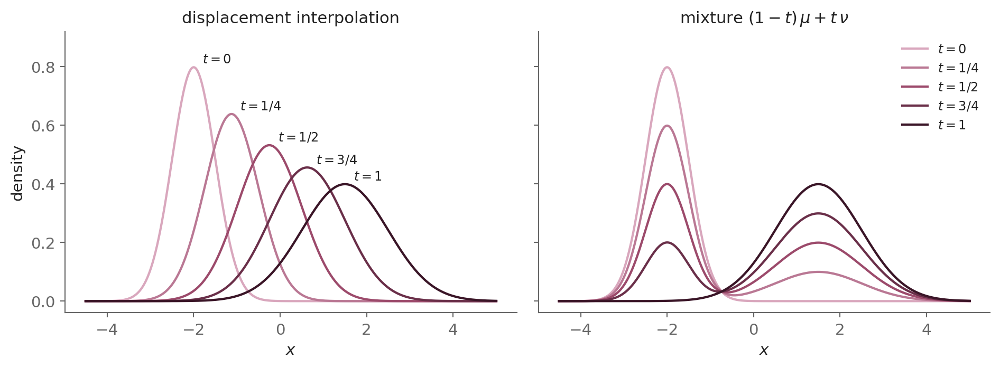
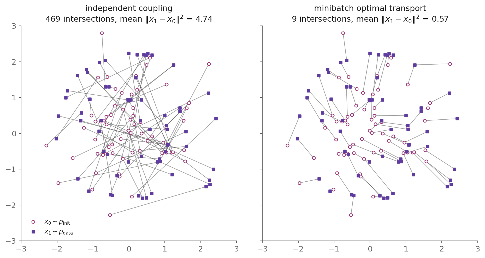
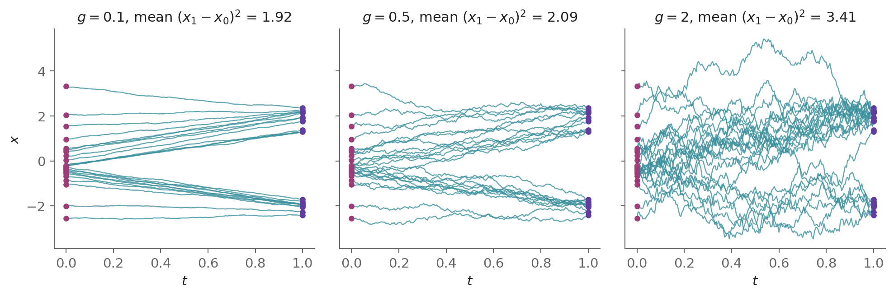
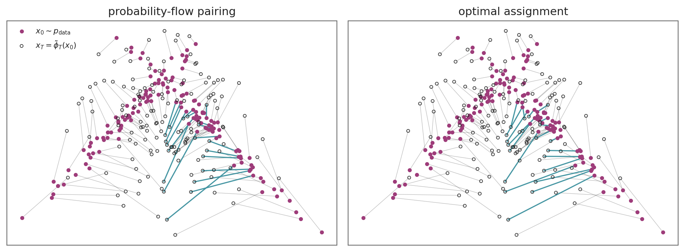

![Two panels with time on the horizontal axis and the same starting dots on the left edge. Left: smooth teal curves that first stay near their starting level, the outermost dipping slightly toward zero, and then bend up toward a cluster near plus two or down toward a cluster near minus two, with thin grey lines from every starting dot converging on one open circle at zero on the right edge. Right: straight teal segments from the same starting dots to the same end dots, the upper half rising to the cluster near plus two and the lower half falling to the cluster near minus two, without crossing.](index_files/figure-html/fig-rectified-paths-output-1.png)
Rectified Flow and Optimal Transport: Straight Paths from Noise to Data
How the pairing of noise and data decides when a flow model’s trajectories are straight, where Monge’s optimal transport enters, and why diffusion is one flow among many.
diffusion models
flow matching
rectified flow
stochastic interpolants
optimal transport
Monge-Ampère equation
Schrödinger bridges
Sinkhorn algorithm
probability-flow ODE
continuity equation
Tweedie's formula
Rectified flow, reflow, optimal transport and Schrödinger bridges, and diffusion as one probability path of flow matching, built from first principles.
This series — Continuous-Time Generative Models
| Part | Date | Title |
|---|---|---|
| Part 1 | Aug 10, 2026 | Itô's Lemma: From Black-Scholes to Diffusion Models |
| Part 2 | Sep 10, 2026 | The Variational Bound (ELBO) and Score Matching: Two Routes to Denoising Diffusion |
| Part 3 | Oct 16, 2026 | SDE-Based Generative Models: The Unification of the Variational Bound and Score Matching |
| Part 4 | Oct 22, 2026 | Flow-Based Generative Models: When Probability Flows Like a Fluid |
| Part 5 | Oct 29, 2026 | Rectified Flow and Optimal Transport: Straight Paths from Noise to Data — you are here |
A reference such as P2:§3.8 points to Section 3.8 of post 2.
This is post #5 in the series Continuous-Time Generative Models. It builds directly on post #4, which derived flow matching on Gaussian conditional paths and ended with three pitfalls of those paths.
Flow matching learns the velocity field of an ordinary differential equation (ODE) that carries noise to data, by a regression that never solves the ODE. Post #4 trained it on Gaussian conditional paths, one for each data point, which have three pitfalls. This post addresses them and then places diffusion inside the same framework.
The simplest way to reach a single data point is a straight line from a noise sample, traversed at constant speed, and the regression target is then the difference between the data point and the noise sample. This is Liu et al.’s rectified flow [1], the training objective of Stable Diffusion 3 [2] and FLUX [3], [4]. Rectified flow and Albergo and Vanden-Eijnden’s stochastic interpolants [5] condition on pairs of points from any two distributions, so the noise need not be Gaussian and the pairing can be chosen.
Straight lines suggest optimal transport, the least-cost way to rearrange one distribution into another [6], [7]. In its dynamic form, due to Benamou and Brenier [8], optimal transport carries each mass element along a straight line at constant speed, McCann’s displacement interpolation [9].
The lines that rectified flow trains on are of this kind, but the velocity the network learns averages the lines that cross at a point, so the trajectories it generates bend. They follow the straight lines exactly when no two lines pass through one point at the same time, and they follow the optimal transport only when each noise sample is paired optimally with a data point.
Minibatch optimal-transport pairing brings training closer to that pairing. Reflow, which retrains the flow on the pairs of starting and end points of its own trajectories, straightens the trajectories without making the pairing more costly. Schrödinger bridges add noise to the transport problem [10], [11].
Diffusion is one instance of the framework. Flow matching along the Gaussian path of the Variance-Preserving (VP) stochastic differential equation (SDE) learns the velocity field of post #3’s probability-flow ODE, an affine function of the score, the gradient of the log-density. Because the ODE is deterministic, the change of variables along its solution [12] gives the exact log-likelihood of a data point [13]. Score matching and flow matching then learn two parameterizations of one path of distributions.
Roadmap
- Part 1: Recalls flow matching from post #4 and its three pitfalls of Gaussian paths, and lists the classical results this post states without proof.
- Part 2: Presents rectified flow and stochastic interpolants, which condition on pairs of points from any two distributions and address those pitfalls, proves that rectification raises no convex transport cost, and straightens the flow by reflow.
- Part 3: Develops optimal transport and the precise sense in which rectified flow is and is not an optimal-transport map. It then treats straight couplings, which give straight trajectories, and minibatch optimal transport and Schrödinger bridges, which bring the coupling closer to optimal transport, and shows that a diffusion model is a Schrödinger bridge whose reference process is its own forward SDE.
- Part 4: Places diffusion inside flow matching as a particular path, computes a diffusion model’s exact likelihood through its probability-flow ODE, shows that this ODE transports Gaussian data optimally but not data in general, and explains why production models adopted the straight-line paths of rectified flow.
- Part 5: Places the three routes of the series in one structure. It shows that score matching and flow matching learn two parameterizations of one path of distributions, which one trained model can sample in many ways, and bounds the KL divergence of the stochastic samplers by how far the two training losses exceed their minima.
- Part 6: Weighs what learning the velocity field directly adds to the series, and previews post #6.
1 Flow Matching in Brief
Post #4 learned the velocity field of an ODE that carries an initial distribution p_{\mathrm{init}} to the data distribution p_{\mathrm{data}}, from t = 0 to t = 1, by regressing a network onto the velocity fields of conditional paths p_t(\cdot \mid x_1), one for each x_1 \in \mathbb{R}^d, mostly Gaussian ones. It ended with three pitfalls of those paths (P4:§6.5).
- The learned trajectories bend, which Parts 2 and 3 straighten.
- Each x_0 \sim p_{\mathrm{init}} is paired with x_1 \sim p_{\mathrm{data}} independently, which Part 2 replaces by any joint distribution of the pair and Part 3 by a chosen one.
- The initial distribution p_{\mathrm{init}} must be Gaussian, which the interpolants of Part 2 remove.
Each result of post #4 that this post uses is restated, with a link, where this post first needs it.
This post also states classical results without proof. Optimal transport goes back to Monge [6] and Kantorovich [7], with Brenier’s theorem [14], Benamou and Brenier’s dynamic form [8] and McCann’s displacement interpolation [9]. The almost-everywhere Monge-Ampère equation and the regularity of the optimal map are stated as McCann [9] and Caffarelli [15] proved them, with Aleksandrov’s theorem [16].
The existence and uniqueness of the Schrödinger bridge and its form as a problem of stochastic control [17], [18] are stated as in Léonard’s survey [19]. So is the product form of the Schrödinger bridge, whose existence Fortet proved in part [20], Beurling in general [21], and Jamison completed [22]. The convergence of iterative proportional fitting is stated as Rüschendorf proved it [23], and the convergence of the bridges as the noise vanishes as Mikami [24] and Léonard [25] proved it.
Birkhoff’s [26] and Sinkhorn’s [27] theorems on matrices, the change of variables of Euler [28], Lagrange [29] and Jacobi [30], and the Picard-Lindelöf theorem [31], [32] are used as stated.
Results of the papers this post discusses are cited with their theorem numbers. The post proves those its argument builds on, among them the cost bound of rectification, the straightness bound of reflow, the reduction of the Schrödinger bridge to entropic optimal transport and the zero-noise limits of the values, and states the others without proof.
2 Rectified Flow and Stochastic Interpolants
Liu et al.’s rectified flow [1] addresses each pitfall of P4:§6.5. It was developed alongside flow matching rather than in response to it, since Liu et al. posted it in September 2022, a month before Lipman et al. posted flow matching.
- Any coupling: Rectified flow conditions on a pair (x_0, x_1) sampled from a coupling \gamma of p_{\mathrm{init}} and p_{\mathrm{data}}, a joint distribution of the pair whose marginals are p_{\mathrm{init}} and p_{\mathrm{data}}. The general conditioning of P4:§5.2.2.1, which conditions on any random variable whose conditional paths average to p_{\mathrm{init}} at t = 0 and to p_{\mathrm{data}} at t = 1, allows this, with the segment between x_0 and x_1 as the conditional path. The coupling \gamma becomes a choice (P4:§6.5.2).
- Any source: The initial distribution p_{\mathrm{init}} need not be Gaussian (P4:§6.5.3). One trained flow can therefore translate between two data distributions, such as images of cats and of wild animals, and in both directions, since its ODE can be solved either way [1].
- Rectification: The trajectories of the marginal velocity field u_t, which averages the velocity fields of the conditional paths and which the network learns (P4:§4.2.2), do not cross. So its flow, which follows each trajectory from its starting point, pairs each x_0 with one endpoint. Liu et al. [1] prove that, for each convex cost c, the coupling this flow defines has a transport cost no larger than the cost \mathbb{E}[c(x_1 - x_0)] of the coupling \gamma it was trained on (§2.3). Training thus improves the coupling, or at worst keeps its cost.
- Reflow: Training again on the flow’s own coupling, and repeating, straightens the trajectories (P4:§6.5.1), as §2.4 shows. One step of the Euler method, which replaces the derivative by a forward difference over a time step [33], solves the ODE of a straight flow exactly. Distilling the final coupling into a network that maps each x_0 to its endpoint in one evaluation gives one-step generation [1].
The independent coupling
\gamma(x_0, x_1) = p_{\mathrm{init}}(x_0)\, p_{\mathrm{data}}(x_1)
pairs the two ends independently, as Lipman et al.’s paths do (P4:§6.5.2). With p_{\mathrm{init}} = \mathcal{N}(0, I) and this coupling, rectified flow trains on the objective of Lipman et al.’s optimal-transport path, the Gaussian conditional path \mathcal{N}\big(t\, x_1, (1 - t)^2 I\big) of P4:§6.3, as §2.1 shows. §2.2 sets rectified flow in Albergo and Vanden-Eijnden’s wider family, whose conditional paths may follow other curves from x_0 to x_1.
2.1 The rectified flow loss
Lipman et al. condition on x_1 \in \mathbb{R}^d [34]. Their conditional probability path p_t(\cdot \mid x_1), with \sigma_{\min} = 0 as in post #4, runs from p_{\mathrm{init}} to the Dirac delta \delta(\cdot - x_1) at x_1, the distribution that puts all its probability on x_1 [35]. Averaging it over x_1 \sim p_{\mathrm{data}} gives the marginal path from p_{\mathrm{init}} to p_{\mathrm{data}} (P4:§4.1),
p_t(x) = \int p_t(x \mid x_1)\, p_{\mathrm{data}}(x_1)\, dx_1
Rectified flow conditions on a pair instead. It uses as its conditional path p_t(\cdot \mid x_0, x_1) the Dirac delta \delta(\cdot - x_t) at the point x_t of the segment from x_0 to x_1, given by the linear interpolation
x_t = (1 - t)\, x_0 + t\, x_1, \qquad t \in [0, 1] \tag{1}
Differentiating Eq. 1 in t gives \frac{d x_t}{dt} = x_1 - x_0. The conditional velocity field u(\cdot \mid x_0, x_1): \mathbb{R}^d \times [0, 1] \to \mathbb{R}^d, (x, t) \mapsto u_t(x \mid x_0, x_1), is a velocity field whose ODE solution has the distribution of the conditional path at each time (P4:§4.2.1). For the segment it is constant in time,
u_t(x \mid x_0, x_1) = x_1 - x_0 \tag{2}
Averaging a conditional velocity field over the conditioning variable, given the current point x, gives the marginal velocity field u_t, which the network learns. For Lipman et al.’s conditioning on x_1, with the conditional velocity field u_t(\cdot \mid x_1) of the path p_t(\cdot \mid x_1) and the posterior p_t(x_1 \mid x) = p_t(x \mid x_1)\, p_{\mathrm{data}}(x_1) / p_t(x), it is (P4:Eq. 16)
\boxed{u_t(x) = \mathbb{E}_{p_t(x_1 \mid x)}\big[\, u_t(x \mid x_1) \,\big]} \tag{3}
For the pair it is u_t(x) = \mathbb{E}[x_1 - x_0 \mid x_t = x], the average of Eq. 2 given x_t = x.
2.1.1 The continuity equation in weak form
A probability path p_t and a velocity field v_t satisfy the continuity equation of Euler [36] when the density changes only by the net outflow of the flux p_t\, v_t (P4:Eq. 17),
\boxed{\partial_t p_t(x) + \nabla_x \cdot \big( p_t(x)\, v_t(x) \big) = 0} \tag{4}
where \nabla_x \cdot F is the divergence of a vector field F, the trace of its Jacobian. A velocity field generates a path when the two satisfy Eq. 4. Post #4 proves that, under its assumptions, a velocity field generates a path exactly when the solution of its ODE with the initial condition X_{t_0} \sim p_{t_0} has the distribution p_t at each time, for an initial time t_0 > 0 (P4:§4.4) and for t_0 = 0 under the assumptions of P4:§4.5. The direction from the continuity equation to the distribution is its sufficiency part.
The conditional path \delta(\cdot - x_t) has no density, so the proofs of P4:§5.2.2.1 do not apply as written, and the continuity equation holds in its weak form. Taking a test function \psi: \mathbb{R}^d \to \mathbb{R}, infinitely differentiable and zero outside a bounded set (P4:§4.4.1), and assuming \mathbb{E}\lVert x_1 - x_0 \rVert < \infty, the derivative in t passes under the expectation by dominated convergence, since each difference quotient of \psi(x_t) in t is bounded by \sup \lVert \nabla_x \psi \rVert\, \lVert x_1 - x_0 \rVert, which is integrable,
\frac{d}{dt}\, \mathbb{E}\big[\psi(x_t)\big] = \mathbb{E}\Big[\frac{d}{dt}\, \psi(x_t)\Big]
Applying the chain rule along the segment, where dx_t/dt = x_1 - x_0 by Eq. 2,
\frac{d}{dt}\, \mathbb{E}\big[\psi(x_t)\big] = \mathbb{E}\big[\nabla_x \psi(x_t) \cdot (x_1 - x_0)\big]
Conditioning on x_t by the tower property, that the expectation of a conditional expectation is the unconditional expectation, with the marginal velocity field u_t(x) = \mathbb{E}[x_1 - x_0 \mid x_t = x],
\frac{d}{dt}\, \mathbb{E}\big[\psi(x_t)\big] = \mathbb{E}\big[\nabla_x \psi(x_t) \cdot u_t(x_t)\big]
This is Eq. 4 multiplied by \psi and integrated over x, with the divergence moved onto \psi by integration by parts, so u_t generates the marginal path p_t, the distribution of x_t, in this weak sense. That the solution of the ODE of u_t then has X_t \sim p_t follows from the sufficiency part of P4:§4.4 once the pair (p_t, u_t) meets its assumptions, which §2.3 assumes. Liu et al. prove it under weaker conditions on u_t (their Theorem 3.3) [1].
2.1.2 Training by conditional flow matching
Conditional flow matching [34] regresses the network velocity field v_\theta, a network with parameters \theta, onto the conditional velocity field in place of u_t, which is intractable. By the gradient equality of P4:§5.2.2 the two regressions have the same gradient in \theta, so training never solves the ODE. Post #4’s proof writes the cross term with the posterior density, which the Dirac conditional path does not have. The same steps hold with conditional expectations once \mathbb{E}\lVert v_\theta(x_t, t) \rVert^2, for each \theta, and \mathbb{E}\lVert x_1 - x_0 \rVert^2 are finite. Since v_\theta(x_t, t) is a function of x_t, the tower property gives
\mathbb{E}\big[v_\theta(x_t, t) \cdot (x_1 - x_0)\big] = \mathbb{E}\big[v_\theta(x_t, t) \cdot u_t(x_t)\big]
so the two regressions differ by the \theta-free constant \mathbb{E}\lVert x_1 - x_0 \rVert^2 - \mathbb{E}\lVert u_t(x_t) \rVert^2.
Training therefore samples t \sim \mathcal{U}[0, 1] and a pair (x_0, x_1) \sim \gamma, forms x_t, and regresses the network onto the conditional velocity field u_t(x_t \mid x_0, x_1) = x_1 - x_0,
\boxed{\mathcal{L}_{\mathrm{CFM}}(\theta) = \mathbb{E}_{t}\, \mathbb{E}_{\gamma(x_0, x_1)} \big[\, \| v_\theta(x_t, t) - (x_1 - x_0) \|^2 \,\big]} \tag{5}
For the independent coupling with p_{\mathrm{init}} = \mathcal{N}(0, I), Eq. 5 averages over x_0 \sim p_{\mathrm{init}} and x_1 \sim p_{\mathrm{data}} sampled independently. It is then the objective of the optimal-transport path (P4:Eq. 32), and the two methods define the same marginal path p_t and the same marginal velocity field u_t.
They differ only in what they condition on. Lipman et al. condition on x_1 alone, with the conditional velocity field (x_1 - x)/(1 - t) of the optimal-transport path (P4:Eq. 31), and rectified flow conditions on the pair, with x_1 - x_0. The two fields agree on the segment, since (x_1 - x_t)/(1 - t) = x_1 - x_0. Given x_1 alone, the point x_t has the distribution \mathcal{N}\big(t\, x_1, (1 - t)^2 I\big) of the optimal-transport path. Conditioning on the pair adds what conditioning on x_1 cannot give: any initial distribution and any coupling.
Training with Eq. 5 is Liu et al.’s rectified flow [1]. The model learns to carry p_{\mathrm{init}} to p_{\mathrm{data}} from straight conditional trajectories, although its own trajectories, those of the marginal velocity field u_t, bend. P4:Figure 11 shows both in one dimension, for p_{\mathrm{init}} = \mathcal{N}(0, 1) and p_{\mathrm{data}} an equal mixture of \mathcal{N}(-2, 0.25^2) and \mathcal{N}(2, 0.25^2), with the segments of 24 independent pairs in its left panel and the trajectories of u_t in its right panel.
2.2 Stochastic interpolants
Albergo and Vanden-Eijnden’s stochastic interpolants [5], posted in September 2022 like rectified flow, replace the segment by any curve between the two ends. An interpolant is a differentiable map \mathcal{I}: [0, 1] \times \mathbb{R}^d \times \mathbb{R}^d \to \mathbb{R}^d, (t, x_0, x_1) \mapsto \mathcal{I}_t(x_0, x_1), with
\mathcal{I}_0(x_0, x_1) = x_0 \qquad \mathcal{I}_1(x_0, x_1) = x_1
The process x_t = \mathcal{I}_t(x_0, x_1), with x_0 \sim p_{\mathrm{init}} and x_1 \sim p_{\mathrm{data}} independent, runs from p_{\mathrm{init}} at t = 0 to p_{\mathrm{data}} at t = 1. One velocity field whose ODE solution with the initial condition X_0 \sim p_{\mathrm{init}} has the distribution of x_t at each time is the conditional expectation of the interpolant’s time derivative given x_t = x, by the argument of §2.1.1 with \partial_t \mathcal{I}_t(x_0, x_1) in place of x_1 - x_0, when \lVert \partial_t \mathcal{I}_t(x_0, x_1) \rVert \le C\, \lVert x_1 - x_0 \rVert for a constant C and \mathbb{E}\lVert x_1 - x_0 \rVert^2 < \infty [37],
u_t(x) = \mathbb{E}\big[\partial_t \mathcal{I}_t(x_0, x_1) \mid x_t = x\big]
The field u_t is the marginal velocity field of the general conditioning of P4:§5.2.2.1, with z = (x_0, x_1) and the Dirac conditional path at \mathcal{I}_t(x_0, x_1). A network therefore learns it by regressing onto \partial_t \mathcal{I}_t(x_0, x_1), as Eq. 5 does onto x_1 - x_0. Albergo and Vanden-Eijnden write the objective as
\mathbb{E}\big[\lVert v_\theta(x_t, t) \rVert^2 - 2\, \partial_t \mathcal{I}_t(x_0, x_1) \cdot v_\theta(x_t, t)\big]
which differs from the regression by the \theta-free term \mathbb{E}\lVert \partial_t \mathcal{I}_t \rVert^2. Its minimum value, -\mathbb{E}\lVert u_t(x_t) \rVert^2, reached at v_\theta = u_t, gives a check of convergence (their Proposition 1) [5].
The segment \mathcal{I}_t = (1 - t)\, x_0 + t\, x_1 gives rectified flow. A Gaussian conditional path
p_t(x \mid x_1) = \mathcal{N}\big(x;\ m_t(x_1),\ \sigma_t(x_1)^2\, I\big)
with mean m_t(x_1) and standard deviation \sigma_t(x_1), is the distribution of its conditional flow \sigma_t\, x_0 + m_t(x_1) for x_0 \sim p_{\mathrm{init}} = \mathcal{N}(0, I). This conditional flow is an interpolant, since m_0(x_1) = 0, \sigma_0 = 1, m_1(x_1) = x_1 and \sigma_1 = 0 (P4:§6.1), and it gives Lipman et al.’s flow matching with that path. With x_0 sampled from any p_{\mathrm{init}} it remains an interpolant, the affine conditional flow of P4:§6.1.1, whose conditional paths are then no longer Gaussian. Albergo and Vanden-Eijnden use the trigonometric interpolant
\mathcal{I}_t = \cos(\tfrac{\pi}{2} t)\, x_0 + \sin(\tfrac{\pi}{2} t)\, x_1
whose coefficients have squares summing to one. So do those of the VP path, the Gaussian conditional path of the VP SDE (P4:§6.2).
The regression target of the trigonometric interpolant is its velocity
\partial_t \mathcal{I}_t = \tfrac{\pi}{2}\big(\cos(\tfrac{\pi}{2} t)\, x_1 - \sin(\tfrac{\pi}{2} t)\, x_0\big)
Salimans and Ho introduced the same target, as v-prediction, for diffusion models [38]. They write the noisy point as \cos\omega\, x_1 + \sin\omega\, x_0, with an angle \omega that increases from the data to the noise, and regress onto its derivative in \omega, \cos\omega\, x_0 - \sin\omega\, x_1. With \omega = \tfrac{\pi}{2}(1 - t) their noisy point is \mathcal{I}_t, and their target is \partial_t \mathcal{I}_t multiplied by -2/\pi.
Albergo and Vanden-Eijnden evaluate their flow on CIFAR-10, a dataset of 32 \times 32 colour images, by two measures. The negative log-likelihood in bits per dimension is -\log_2 p(x)/d of a test image, averaged over the test set. The Fréchet Inception Distance (FID) is the Fréchet distance between Gaussians fitted to the features that a pretrained Inception network extracts from generated and from real images [39]. Lower is better for both. Their flow reaches 2.99 bits per dimension and an FID of 10.27 [5].
They trained it on a single graphics processing unit (GPU), which they note had been impossible for flow models trained by maximum likelihood (P4:§3.8). They also show that maximizing their objective over the interpolant itself gives the probability path of dynamic optimal transport between p_{\mathrm{init}} and p_{\mathrm{data}}, under assumptions on that path (their Proposition 2). Part 3 reaches optimal transport through couplings instead.
Albergo, Boffi and Vanden-Eijnden later extended the construction in two ways [37]. They allowed a coupling of the two ends in place of independent sampling. They also added a Gaussian latent term, x_t = \mathcal{I}_t(x_0, x_1) + \xi(t)\, \zeta, with \zeta \sim \mathcal{N}(0, I) independent of (x_0, x_1) and a coefficient \xi: [0, 1] \to [0, \infty) with \xi(0) = \xi(1) = 0. The latent term smooths the density of x_t, and §2.2.2 shows that the score of that density is then learned by a regression of the same kind, onto \zeta. Part 5 uses this setting.
2.2.1 Constructions from the conditional path and from the interpolant
P4:§4 to P4:§6 and this Part have built the regression target in two ways, which Lai et al. call the probability-path-first and flow-first constructions [40].
- Probability-path-first: Lipman et al. specify the conditional path p_t(\cdot \mid x_1), a family of densities, and then find a conditional velocity field that generates it.
- Flow-first: Rectified flow and stochastic interpolants specify the interpolant \mathcal{I}_t(x_0, x_1), a map of the two endpoints, so the marginal path p_t is the distribution of x_t = \mathcal{I}_t(x_0, x_1) and the velocity of each point is \partial_t \mathcal{I}_t(x_0, x_1).
A Gaussian conditional path is reached both ways, since its conditional flow is an interpolant, as noted above. Table 1 compares the two constructions.
| From the conditional path | From the interpolant | |
|---|---|---|
| Specified | the densities p_t(\cdot \mid x_1) | the map \mathcal{I}_t(x_0, x_1) |
| Velocity | a field that generates the path, one of many (P4:§4.5.1) | the velocity \partial_t \mathcal{I}_t(x_0, x_1) of each point |
| Closed form | when an invertible flow that pushes p_{\mathrm{init}} onto the path is known, as for Gaussian paths | always |
| Endpoints | the path must start at p_{\mathrm{init}} and end at the Dirac delta \delta(\cdot - x_1) (P4:§4.1) | \mathcal{I}_0(x_0, x_1) = x_0 and \mathcal{I}_1(x_0, x_1) = x_1 by definition |
| In this series | Lipman et al.’s Gaussian paths (P4:§6) | rectified flow and stochastic interpolants (Part 2) |
The construction from the interpolant extends to data on a curved space, where the segment between two points can leave the space. On a Riemannian manifold, a smooth surface or higher-dimensional space with an inner product on each of its tangent spaces (the spaces of velocities of curves through a point), Chen and Lipman replace the segment by the geodesic between x_0 and x_1, the curve of locally least length, traversed at constant speed [41]. Training stays simulation-free on manifolds whose geodesics have a closed form, such as spheres, tori and hyperbolic spaces.
2.2.2 The latent term and the score
With the latent term, x_t = \mathcal{I}_t(x_0, x_1) + \xi(t)\, \zeta has, for each t with \xi(t) > 0, a smooth positive density p_t, because it adds the independent Gaussian \xi(t)\, \zeta to \mathcal{I}_t(x_0, x_1) [37]. Its marginal velocity field and its score are both conditional expectations given x_t, so a network learns each by a regression (their Theorems 6 to 8). Here (x_0, x_1) is sampled from a coupling \gamma, and \zeta \sim \mathcal{N}(0, I) independently of it.
Velocity:
Given (x_0, x_1, \zeta), the conditional path is the Dirac delta at x_t, whose point has the velocity \partial_t \mathcal{I}_t(x_0, x_1) + \dot\xi(t)\, \zeta on (0, 1), where \xi is differentiable. The argument of §2.1.1, with the conditioning variable (x_0, x_1, \zeta) in place of (x_0, x_1), on each interval [a, b] \subset (0, 1), where \lvert \dot\xi \rvert is bounded, gives the marginal velocity field
u_t(x) = \mathbb{E}\big[\partial_t \mathcal{I}_t(x_0, x_1) + \dot\xi(t)\, \zeta \mid x_t = x\big]
which a network learns by regressing onto \partial_t \mathcal{I}_t(x_0, x_1) + \dot\xi(t)\, \zeta.
Score:
The density of x_t is the average, over the pair, of the Gaussian density centred at \mathcal{I}_t(x_0, x_1),
p_t(x) = \mathbb{E}_\gamma\big[\mathcal{N}\big(x;\ \mathcal{I}_t(x_0, x_1),\ \xi(t)^2 I\big)\big]
Differentiating under the expectation, which is allowed because for \xi(t) > 0 the Gaussian density and its gradient are bounded functions of the centre, with \nabla_x \mathcal{N}(x; y, \xi^2 I) = -\big((x - y)/\xi^2\big)\, \mathcal{N}(x; y, \xi^2 I),
\nabla_x p_t(x) = -\mathbb{E}_\gamma\Big[\frac{x - \mathcal{I}_t(x_0, x_1)}{\xi(t)^2}\, \mathcal{N}\big(x;\ \mathcal{I}_t(x_0, x_1),\ \xi(t)^2 I\big)\Big]
Dividing by p_t(x), where by Bayes’ rule \mathcal{N}\big(x; \mathcal{I}_t(x_0, x_1), \xi(t)^2 I\big) / p_t(x) is the density of the pair given x_t = x relative to \gamma,
\nabla_x \log p_t(x) = -\frac{1}{\xi(t)^2}\, \mathbb{E}\big[x_t - \mathcal{I}_t(x_0, x_1) \mid x_t = x\big]
Substituting x_t - \mathcal{I}_t(x_0, x_1) = \xi(t)\, \zeta,
\boxed{\nabla_x \log p_t(x) = -\frac{1}{\xi(t)}\, \mathbb{E}\big[\zeta \mid x_t = x\big]} \tag{6}
which is their Theorem 8, the counterpart for the latent term of Tweedie’s formula (P2:§4.10). \square
The posterior mean of \zeta, \eta_\zeta: \mathbb{R}^d \times (0, 1) \to \mathbb{R}^d, \eta_\zeta(x, t) = \mathbb{E}[\zeta \mid x_t = x], is learned by regressing a network onto \zeta, and the score follows as -\eta_\zeta / \xi(t). This regression carries no factor 1/\xi(t), which grows without bound at t = 0 and t = 1, so Albergo, Boffi and Vanden-Eijnden recommend it over a direct regression onto the score (their Remark 9). With both fields learned, the samplers of Part 5 apply to the interpolant with any p_{\mathrm{init}}.
2.3 Rectification
The flow of the marginal velocity field u_t pairs p_{\mathrm{init}} with p_{\mathrm{data}} at no greater cost than the coupling \gamma it was trained on, for each convex cost [1]. This holds although its trajectories bend (P4:§6.5.1), and it is the step that improves the coupling that P4:§6.5.2 left fixed.
The segments in the left panel of P4:Figure 11 cross, and the trajectories of u_t in its right panel do not, since two trajectories through one point at one time would be two solutions of the ODE from the same initial condition (P4:§6.5.1). The flow of u_t is therefore, in Liu et al.’s words, a “rewiring” of the segments at their crossings, and it pairs each x_0 with the single endpoint X_1 of the trajectory X_t that starts at X_0 = x_0. The distribution of the pair (X_0, X_1) is the rectified coupling of the coupling \gamma [1].
Definitions:
- Transport cost: The transport cost of a coupling \gamma under a function c: \mathbb{R}^d \to \mathbb{R} is \mathbb{E}_\gamma\big[c(x_1 - x_0)\big], the average cost of moving each x_0 to the x_1 paired with it.
Assumptions:
- The pair (x_0, x_1) is sampled from a coupling \gamma of p_{\mathrm{init}} and p_{\mathrm{data}}, with \mathbb{E}\lVert x_1 - x_0 \rVert < \infty, and x_t = (1 - t)\, x_0 + t\, x_1 (Eq. 1).
- The marginal velocity field u_t(x) = \mathbb{E}[x_1 - x_0 \mid x_t = x], the form derived in §2.1, is locally bounded, and the ODE \frac{d}{dt}\, X_t = u_t(X_t) with X_0 = x_0 has a unique solution on [0, 1].
- The marginal path p_t, the distribution of x_t, and the marginal velocity field u_t meet the assumptions of the equivalence of P4:§4.4, with the initial condition at t_0 = 0 as in P4:§4.5. Their smoothness turns the weak form of §2.1.1 into Eq. 4, by integrating by parts back, since the test function \psi is arbitrary. The sufficiency part of that equivalence then gives that X_t has the distribution of x_t for each t \in [0, 1], the counterpart, for conditioning on pairs, of P4:§4.5. Liu et al. reach the same conclusion from assumption 2 alone (their Theorem 3.3).
- The cost c: \mathbb{R}^d \to \mathbb{R} is convex, and c(x_1 - x_0) and c\big(u_t(X_t)\big), as functions of the sample and of t, are integrable.
Theorem:
Under these assumptions, the rectified coupling has no larger transport cost under c than \gamma,
\boxed{\mathbb{E}\big[c(X_1 - X_0)\big] \le \mathbb{E}\big[c(x_1 - x_0)\big]} \tag{7}
Since c is any convex cost, rectification lowers or keeps every convex transport cost at once, among them the mean distance \mathbb{E}\lVert x_1 - x_0 \rVert and the mean squared distance \mathbb{E}\lVert x_1 - x_0 \rVert^2, without targeting any one of them [1].
Proof:
Integrating the ODE from 0 to 1, X_1 - X_0 = \int_0^1 u_t(X_t)\, dt, so
\mathbb{E}\big[c(X_1 - X_0)\big] = \mathbb{E}\Big[c\Big(\int_0^1 u_t(X_t)\, dt\Big)\Big]
By Jensen’s inequality for the average over t \in [0, 1] [42], since c is convex,
\mathbb{E}\big[c(X_1 - X_0)\big] \le \mathbb{E}\Big[\int_0^1 c\big(u_t(X_t)\big)\, dt\Big]
Exchanging the expectation and the time integral, which assumption 4 allows,
\mathbb{E}\big[c(X_1 - X_0)\big] \le \int_0^1 \mathbb{E}\big[c\big(u_t(X_t)\big)\big]\, dt
Replacing X_t by x_t, which has the same distribution for each t (assumption 3),
\mathbb{E}\big[c(X_1 - X_0)\big] \le \int_0^1 \mathbb{E}\big[c\big(u_t(x_t)\big)\big]\, dt
Substituting u_t(x_t) = \mathbb{E}[x_1 - x_0 \mid x_t] (assumption 2),
\mathbb{E}\big[c(X_1 - X_0)\big] \le \int_0^1 \mathbb{E}\Big[c\big(\mathbb{E}[x_1 - x_0 \mid x_t]\big)\Big]\, dt
By the conditional Jensen inequality, since c is convex,
\mathbb{E}\big[c(X_1 - X_0)\big] \le \int_0^1 \mathbb{E}\Big[\mathbb{E}\big[c(x_1 - x_0) \mid x_t\big]\Big]\, dt
By the tower property,
\mathbb{E}\big[c(X_1 - X_0)\big] \le \int_0^1 \mathbb{E}\big[c(x_1 - x_0)\big]\, dt
The integrand does not depend on t, so
\boxed{\mathbb{E}\big[c(X_1 - X_0)\big] \le \mathbb{E}\big[c(x_1 - x_0)\big]}
which is Eq. 7. \square
2.4 Reflow
Reflow applies rectification repeatedly [1]. It trains a rectified flow, whose network velocity field v_\theta defines a flow model, a model that generates data by solving an ODE from p_{\mathrm{init}} (P4:Eq. 7),
\boxed{X_0 \sim p_{\mathrm{init}}, \qquad \frac{d}{dt}\, X_t = v_\theta(X_t, t)} \tag{8}
Reflow solves this ODE to generate pairs (x_0, \phi^\theta_1(x_0)) with x_0 \sim p_{\mathrm{init}}, where the flow \phi^\theta_t(x) is the position at time t of the solution with X_0 = x, and retrains on those pairs as the new coupling \gamma. The first pass replaces the independent coupling with the deterministic coupling that the trained flow \phi^\theta_1 induces, and each later pass replaces the coupling of the pass before. By Eq. 7, each pass leaves every convex transport cost no larger than before, up to the error of the trained network, without a guarantee of reaching a coupling of least transport cost.
Using the quadratic cost c(x) = \lVert x \rVert^2, Liu et al. show that reflow also straightens the trajectories [1]. The straightness of a flow with trajectories X, where \dot X_t = dX_t/dt is the velocity of a trajectory at time t, is
S(X) = \int_0^1 \mathbb{E}\big\lVert (X_1 - X_0) - \dot X_t \big\rVert^2\, dt
It is zero exactly when each trajectory is a segment traversed at constant speed. One Euler step from X_0 then reaches X_0 + \dot X_0 = X_1. By Liu et al.’s Theorem 3.7, the smallest straightness among the first K rectified flows, the 1-rectified flow and the K - 1 reflows after it, is at most \mathbb{E}\lVert x_1 - x_0 \rVert^2 / K, where \mathbb{E}\lVert x_1 - x_0 \rVert^2 is the quadratic transport cost of the initial coupling. The straightest of them therefore has S = O(1/K).
The proof assumes that each round meets the assumptions of §2.3 with finite second moments and uses its exact marginal velocity field. It has three steps.
- The straightness of each trained flow equals its kinetic energy, the time integral of the mean squared speed \mathbb{E}\lVert \dot X_t \rVert^2 of its trajectories, minus the quadratic cost of the coupling it produces.
- The proof of Eq. 7 bounds that kinetic energy by the quadratic cost of the coupling the flow trained on, so each straightness is at most the decrease in cost over its rectification.
- Summing over the K rectifications, the decreases telescope, and the smallest of K terms is at most their mean.
NoteProof: the straightness bound of reflow
Let \gamma^0 be the initial coupling and \gamma^k the coupling after k rectifications. In rectification k + 1, the pair (x_0, x_1) \sim \gamma^k has the linear interpolation x_t and the marginal velocity field
u^k_t(x) = \mathbb{E}[x_1 - x_0 \mid x_t = x]
The trained flow has the trajectories X_t that solve \frac{d}{dt}\, X_t = u^k_t(X_t) with X_0 = x_0, and \gamma^{k+1} is the distribution of (X_0, X_1). We write S_{k+1} for the straightness of this flow. The quadratic cost c_k of \gamma^k and the kinetic energy E_k of the flow are
c_k = \mathbb{E}_{\gamma^k}\lVert x_1 - x_0 \rVert^2 \qquad E_k = \int_0^1 \mathbb{E}\lVert u^k_t(X_t) \rVert^2\, dt
Step 1 — Straightness and kinetic energy:
By the definition of the straightness, with \dot X_t = u^k_t(X_t),
S_{k+1} = \int_0^1 \mathbb{E}\big\lVert (X_1 - X_0) - u^k_t(X_t) \big\rVert^2\, dt
Expanding the square,
S_{k+1} = \mathbb{E}\lVert X_1 - X_0 \rVert^2 - 2 \int_0^1 \mathbb{E}\big[(X_1 - X_0) \cdot u^k_t(X_t)\big]\, dt + \int_0^1 \mathbb{E}\lVert u^k_t(X_t) \rVert^2\, dt
Exchanging the expectation and the time integral in the middle term, which the finite second moments allow,
S_{k+1} = \mathbb{E}\lVert X_1 - X_0 \rVert^2 - 2\, \mathbb{E}\Big[(X_1 - X_0) \cdot \int_0^1 u^k_t(X_t)\, dt\Big] + \int_0^1 \mathbb{E}\lVert u^k_t(X_t) \rVert^2\, dt
Substituting \int_0^1 u^k_t(X_t)\, dt = X_1 - X_0, the ODE integrated from 0 to 1,
S_{k+1} = \mathbb{E}\lVert X_1 - X_0 \rVert^2 - 2\, \mathbb{E}\lVert X_1 - X_0 \rVert^2 + \int_0^1 \mathbb{E}\lVert u^k_t(X_t) \rVert^2\, dt
Collecting the first two terms,
S_{k+1} = -\mathbb{E}\lVert X_1 - X_0 \rVert^2 + \int_0^1 \mathbb{E}\lVert u^k_t(X_t) \rVert^2\, dt
Writing \mathbb{E}\lVert X_1 - X_0 \rVert^2 = c_{k+1}, the quadratic cost of \gamma^{k+1}, and the integral as E_k,
S_{k+1} = E_k - c_{k+1}
Step 2 — Kinetic energy and cost:
Replacing X_t by x_t, which has the same distribution for each t (assumption 3 of §2.3),
E_k = \int_0^1 \mathbb{E}\lVert u^k_t(x_t) \rVert^2\, dt
Bounding the right side by c_k, as the last four steps of the proof of Eq. 7 do with the quadratic cost \lVert y \rVert^2 as the convex cost,
E_k \le c_k
Substituting this bound into Step 1,
S_{k+1} \le c_k - c_{k+1}
Step 3 — Telescoping:
Summing over the rectifications k = 0, \ldots, K - 1,
\sum_{k=1}^{K} S_k \le c_0 - c_K
Dropping -c_K, which is not positive,
\sum_{k=1}^{K} S_k \le c_0
Bounding the smallest of the K terms by their mean,
\min_{1 \le k \le K} S_k \le \frac{c_0}{K}
which is the bound of Liu et al.’s Theorem 3.7, with c_0 = \mathbb{E}\lVert x_1 - x_0 \rVert^2 the cost of the initial coupling. \square
Liu et al.’s construction accepts any interpolant \mathcal{I}_t of §2.2, such as the conditional flow \sigma_t\, x_0 + m_t(x_1) of a Gaussian path (P4:§6). With x_t = \mathcal{I}_t(x_0, x_1), the flow of the marginal velocity field u_t still has the distribution of x_t at each time (their Theorem 3.3). The cost bound and the straightness bound, however, need the linear interpolation (Liu et al. keep the cost bound for straight paths at nonconstant speed when c is also homogeneous of a degree in (0, 1]).
The proof of Eq. 7 uses \dot x_t = x_1 - x_0, through the form of u_t in assumption 2. For another interpolant the same steps end at \int_0^1 \mathbb{E}\big[c(\dot x_t)\big]\, dt, which by Jensen’s inequality is at least \mathbb{E}\big[c(x_1 - x_0)\big]. Rectifying is then no longer guaranteed to lower convex transport costs, and reflow is no longer guaranteed to straighten [1]. The probability-flow ODEs of diffusion, whose solutions have, at each time, the marginals of the solution of a diffusion SDE (P4:§5.1), are flows of this kind, written with \xi \sim \mathcal{N}(0, I) in place of x_0, approximately, since their path \alpha_t\, x_1 + \beta_t\, \xi has \alpha_0 \neq 0 (their Proposition 3.11), and Liu et al. find that reflow does not straighten VP trajectories.
In one dimension one round of reflow already makes the flow straight. Liu et al. call the flow trained after k - 1 rounds of reflow the k-rectified flow [1]. The 1-rectified flow trains on the independent coupling, and the 2-rectified flow on the rectified coupling (X_0, X_1) of the first. For the example of P4:Figure 11, the two flows differ as Figure 1 shows below.
On the left, one Euler step from X_0 moves by u_0(X_0). At t = 0 the point x_t = x_0 is independent of x_1, so u_0(x) = \mathbb{E}[x_1] - x. The step therefore reaches the mean \mathbb{E}[x_1] = 0 of p_{\mathrm{data}} from each starting point, between the two modes, where p_{\mathrm{data}} has almost no mass.
The network is trained toward the same u_0, so in image generation one step returns approximately the mean training image from each x_0 \sim p_{\mathrm{init}}. Liu et al. state this for a toy example, where a single Euler step “generates the mean” of the data distribution (their Figure 5). On cat faces their 1-rectified flow needs at least two steps (their Figure 1) [1]. The FID of 378 that one Euler step of the 1-rectified flow scores on CIFAR-10 (Table 2 below) is consistent with this.
The right panel follows from the order of the left panel’s trajectories. In one dimension two trajectories cannot pass each other without meeting, and trajectories of u_t never meet, so they keep their order. The rectified coupling therefore pairs the points monotonically, with X_1 nondecreasing in X_0.
Its segments do not cross, since (1 - t)\, X_0 + t\, X_1 then increases strictly with X_0 for each t < 1. The point x_t on a segment then determines its pair, so the marginal velocity field of the 2-rectified flow equals X_1 - X_0 along each segment. Each segment therefore solves its ODE, and by uniqueness the segments are its trajectories (Liu et al.’s Lemma 3.9) [1].
The straightness S of the 2-rectified flow is therefore zero, and one Euler step is exact. In the Gaussian example of P4:§6.5.1, with p_{\mathrm{init}} = \mathcal{N}(0, 1) and p_{\mathrm{data}} = \mathcal{N}(0, \sigma_{\mathrm{data}}^2) on the line, the rectified coupling is (x_0, \sigma_{\mathrm{data}} x_0), and the 2-rectified flow carries each x_0 along the segment to \sigma_{\mathrm{data}} x_0 at the constant velocity (\sigma_{\mathrm{data}} - 1)\, x_0. In two or more dimensions the segments of a rectified coupling can cross, so one round need not make the flow straight. What is guaranteed there is the bound of Theorem 3.7 above, under which the straightest of the first K rectified flows has S = O(1/K).
Liu et al.’s experiments on CIFAR-10 measure what reflow gains and what it costs [1]. For each k they also distill the k-rectified flow into a one-step map \mathbb{R}^d \to \mathbb{R}^d, x_0 \mapsto x_0 + v_\theta(x_0, 0), trained at t = 0 alone on the pairs that the k-rectified flow generates. The distillation replaces the squared error of the rectified flow loss by the learned perceptual image patch similarity (LPIPS) of Zhang et al., a distance between two images computed from the features of a pretrained network [43].
Table 2 gives their results, with the cost of the adaptive solver in the number of function evaluations (NFE), the evaluations of the network that it makes.
| Flow | One Euler step, FID | One step, distilled, FID | Adaptive solver, NFE | Adaptive solver, FID |
|---|---|---|---|---|
| 1-rectified flow | 378 | 6.18 | 127 | 2.58 |
| 2-rectified flow | 12.21 | 4.85 | 110 | 3.36 |
| 3-rectified flow | 8.15 | 5.21 | 104 | 3.96 |
| VP ODE | 451 | 16.23 | 140 | 3.93 |
| sub-VP ODE | 451 | 14.32 | 146 | 3.16 |
One round of reflow lowers the FID of one-step generation from 378 to 12.21, and distillation brings it to 4.85, against 16.23 for the distilled VP ODE. The straighter flows also need fewer adaptive steps, 110 and 104 for the 2- and 3-rectified flows against 127 for the 1-rectified flow and 140 for the VP ODE.
Reflow costs some quality when the ODE is solved accurately, with the FID rising from 2.58 to 3.96 over two rounds. Liu et al. attribute this to the estimation error of the velocity field accumulating over the rounds, and they caution against many rounds [1].
The first coupling of reflow need not come from a rectified flow. Each deterministic flow that carries p_{\mathrm{init}} to p_{\mathrm{data}} gives pairs (x_0, x_1), and a rectified flow trained on them with the linear interpolation lowers or keeps every convex transport cost of these pairs, by Eq. 7. The probability-flow ODE of a trained diffusion model is such a flow, up to the error of the trained model. Its own trajectories are not straightened by reflow, as noted above, but the pairs it produces can start reflow, since the linear interpolation, not the diffusion path, joins them from then on.
Liu et al.’s InstaFlow starts reflow in this way from Stable Diffusion, a text-to-image diffusion model [48]. It solves Stable Diffusion’s probability-flow ODE in 25 steps of a numerical solver to obtain the pairs, trains a 2-rectified flow on them and distills it into a one-step generator. On the captions of 5,000 images of MS COCO 2017, a dataset of captioned photographs, that generator reaches an FID of 23.4 in 0.09 seconds per image, against 37.2 for one step of Meng et al.’s progressive distillation of Stable Diffusion [49], which applies the method of Salimans and Ho [38].
3 Optimal Transport and Couplings
Rectification lowers or keeps every convex transport cost (§2.3) without saying how low the cost can go. This Part develops that lowest cost, optimal transport, in §3.1 to §3.3. It then turns to the choice of coupling. Couplings whose segments never pass through one point at the same time give straight trajectories (§3.4), and minibatch optimal transport (§3.5) and Schrödinger bridges (§3.6) bring training closer to optimal transport. The Schrödinger system of §3.6.5 shows that a diffusion model is itself a Schrödinger bridge.
3.1 The Monge and Kantorovich problems
P4:§6.3 names the straight conditional path the optimal-transport path, after Lipman et al., and §2.1 shows that rectified flow trains on the same path. This section and the next two make the name precise. They define optimal transport and show in what exact sense the straight path is optimal. They also show the point most easily overstated, the sense in which the flow of the marginal velocity field u_t is, and is not, an optimal-transport map.
Optimal transport asks for the least-cost way to rearrange one distribution into another. For a source distribution \mu and a target distribution \nu on \mathbb{R}^d, with the quadratic cost, the Monge problem [6] seeks a map M : \mathbb{R}^d \to \mathbb{R}^d that pushes \mu onto \nu and minimizes the average squared displacement,
\inf_{M_\# \mu = \nu} \int \lVert x - M(x) \rVert^2\, d\mu(x)
where M_\#\mu = \nu means that the pushforward of \mu under M, the distribution of M(x) for x \sim \mu (P4:§2.1), equals \nu.
A map that pushes \mu onto \nu need not exist, since a map cannot split the mass that \mu puts on a single point. Kantorovich [7] relaxes the map to a coupling \gamma of \mu and \nu and minimizes over the set \Gamma(\mu, \nu) of such couplings,
\boxed{W_2^2(\mu, \nu) \;=\; \inf_{\gamma \in \Gamma(\mu, \nu)} \int \lVert x - y \rVert^2\, d\gamma(x, y)} \tag{9}
When \mu and \nu have finite second moments the minimum is attained [50], and its value defines the squared 2-Wasserstein distance. By Brenier’s theorem [14], when moreover \mu has a density, the optimal coupling is unique and deterministic. It is supported on the graph of a map M = \nabla_x \varphi, the gradient of a convex function \varphi: \mathbb{R}^d \to \mathbb{R} \cup \{+\infty\}, which is differentiable at \mu-almost every point, each point outside a set of \mu-probability zero. For the quadratic cost the relaxed problem therefore has a Monge map as its solution. Conversely, a gradient of a convex function that pushes \mu onto \nu is this optimal map.
In one dimension the optimal map has an explicit form. Let F_\mu, F_\nu: \mathbb{R} \to [0, 1] be the cumulative distribution functions of \mu and \nu, and F_\mu^{-1}, F_\nu^{-1}: (0, 1) \to \mathbb{R} their quantile functions,
F_\mu(x) = \mu\big((-\infty, x]\big) \qquad F_\nu^{-1}(q) = \inf\{y : F_\nu(y) \ge q\}
When \mu has a density that is positive on \mathbb{R}, F_\mu is continuous and strictly increasing with values in (0, 1), so F_\mu^{-1} is its inverse.
The map M = F_\nu^{-1} \circ F_\mu: \mathbb{R} \to \mathbb{R} then pairs each point with the point at the same quantile of \nu. It pushes \mu onto \nu, because F_\mu(X) \le q exactly when X \le F_\mu^{-1}(q), so that F_\mu(X) is uniform on (0, 1) for X \sim \mu, and F_\nu^{-1}(q) \le y exactly when q \le F_\nu(y).
The map M is nondecreasing, as a composition of two nondecreasing functions, and so the derivative of the convex function \mathbb{R} \to \mathbb{R}, x \mapsto \int_0^x M(s)\, ds, at each point where it is continuous. These are all points but countably many, since each jump of M skips an interval that contains a rational number of its own, and so a set of \mu-measure zero. By the converse in Brenier’s theorem M is the optimal map.
Dall’Aglio had shown that on the line this pairing is the unique minimizer of the mean of \lvert y - x \rvert^\alpha over the couplings of \mu and \nu, for each \alpha > 1, under a condition on the decay of their tails slightly stronger than a finite moment of order \alpha [51]. For \alpha = 2 the minimum has a closed form. Since the optimal coupling is supported on the graph of M,
W_2^2(\mu, \nu) = \int \big(F_\nu^{-1}(F_\mu(x)) - x\big)^2\, d\mu(x)
Substituting x = F_\mu^{-1}(F_\mu(x)),
W_2^2(\mu, \nu) = \int \big(F_\nu^{-1}(F_\mu(x)) - F_\mu^{-1}(F_\mu(x))\big)^2\, d\mu(x)
Changing variables to q = F_\mu(x), which is uniform on (0, 1) under \mu, the optimal cost is the squared distance of the two quantile functions,
W_2^2(\mu, \nu) = \int_0^1 \big(F_\nu^{-1}(q) - F_\mu^{-1}(q)\big)^2\, dq
Brenier’s theorem and the change of variables together show that the convex function \varphi satisfies a partial differential equation. Suppose that \mu and \nu have densities, which we denote by the same letters, \mu, \nu: \mathbb{R}^d \to [0, \infty), and that the optimal map M = \nabla_x \varphi is invertible and differentiable with a differentiable inverse. Then \varphi satisfies the Monge-Ampère equation
\boxed{\nu\big(\nabla_x \varphi(x)\big)\, \det \nabla_x^2 \varphi(x) = \mu(x)} \tag{10}
The change of variables, which Euler [28] and Lagrange [29] derived in two and three dimensions and Jacobi [30] in general, gives the density of a pushforward. For a density p: \mathbb{R}^d \to [0, \infty), a map f: \mathbb{R}^d \to \mathbb{R}^d that is invertible and differentiable with a differentiable inverse, and X \sim p, the density p_Y: \mathbb{R}^d \to [0, \infty) of Y = f(X) is (P4:Eq. 1)
\boxed{p_Y(y) = (f_\# p)(y) = p\big(f^{-1}(y)\big)\, \Big\lvert \det \frac{\partial f^{-1}}{\partial y}(y) \Big\rvert} \tag{11}
Applying Eq. 11 with f = M, which meets its conditions by the assumptions above, and p = \mu, whose pushforward M_\# \mu is \nu,
\nu(y) = \mu\big(M^{-1}(y)\big)\, \Big\lvert \det \frac{\partial M^{-1}}{\partial y}(y) \Big\rvert
Evaluating at y = M(x) = \nabla_x \varphi(x), where M^{-1}(y) = x,
\nu\big(\nabla_x \varphi(x)\big) = \mu(x)\, \Big\lvert \det \frac{\partial M^{-1}}{\partial y}\big(\nabla_x \varphi(x)\big) \Big\rvert
The Jacobian of M at x is the Hessian \nabla_x^2 \varphi(x) \in \mathbb{R}^{d \times d} of \varphi. Differentiating the identity M^{-1}(M(x)) = x by the chain rule shows that the product of the Jacobian of M^{-1} at M(x) and this Hessian is I, so the Hessian is invertible. Substituting \frac{\partial M^{-1}}{\partial y}\big(M(x)\big) = \big(\nabla_x^2 \varphi(x)\big)^{-1},
\nu\big(\nabla_x \varphi(x)\big) = \mu(x)\, \Big\lvert \det \big(\nabla_x^2 \varphi(x)\big)^{-1} \Big\rvert
Since the determinant of an inverse matrix is the reciprocal of its determinant,
\nu\big(\nabla_x \varphi(x)\big) = \mu(x)\, \big\lvert \det \nabla_x^2 \varphi(x) \big\rvert^{-1}
The Hessian \nabla_x^2 \varphi(x) is symmetric, since \varphi is twice differentiable, and positive semidefinite, since \varphi is convex and so has a nonnegative second derivative along each line. As it is also invertible, its eigenvalues are positive, and so is its determinant. Dropping the absolute value,
\nu\big(\nabla_x \varphi(x)\big) = \frac{\mu(x)}{\det \nabla_x^2 \varphi(x)}
Multiplying both sides by \det \nabla_x^2 \varphi(x),
\boxed{\nu\big(\nabla_x \varphi(x)\big)\, \det \nabla_x^2 \varphi(x) = \mu(x)}
which is Eq. 10. \square
For d \ge 2 the equation is nonlinear in the second derivatives of \varphi, which the determinant multiplies together. For d = 2 it belongs to the class of equations that Ampère studied [52] for functions of two variables, which extend Monge’s second-order equations [53] by a term in the determinant of the Hessian.
3.1.1 A Gaussian example on the line
For \mu = \mathcal{N}(-2, 0.5^2) and \nu = \mathcal{N}(1.5, 1) on the line, the affine map M(x) = 1.5 + 2\,(x + 2) shifts the mean and doubles the standard deviation, so it pushes \mu onto \nu. It is the gradient of the convex function x^2 + 5.5\, x, so by Brenier’s theorem it is the Monge map. The second derivative of x^2 + 5.5\, x is 2, and Eq. 10 holds, since the density of \nu at M(x) is half the density of \mu at x.
3.1.2 The Monge-Ampère equation for a nondifferentiable optimal map
The optimal map M need not be differentiable or a bijection of \mathbb{R}^d, so the assumptions above can fail. For \mu = \mathcal{N}(0, I) and \nu uniform on a solid sphere of radius 1 centered at the origin, M takes its values in that solid sphere, so it is not a bijection of \mathbb{R}^d. For \nu uniform on two disjoint solid spheres of probability 1/2 each, M is not even continuous, since a continuous map carries the connected space \mathbb{R}^d onto a connected set. Brenier observed that \varphi then still satisfies Eq. 10 in a generalized sense, in that \nabla_x \varphi pushes \mu onto \nu [14], [54].
A convex function has a second-order Taylor expansion at almost every point, as Aleksandrov proved [16]. When \mu and \nu have densities, McCann proved that Eq. 10 holds at \mu-almost every x with \nabla_x^2 \varphi(x) the matrix of that expansion [9]. Caffarelli gave conditions on \mu and \nu under which \varphi is smooth, among them that the support of \nu is convex [15].
3.2 Dynamic optimal transport (Benamou-Brenier)
The Benamou-Brenier identity [8] writes W_2^2 as the least kinetic energy, the time integral of the mean squared speed, of a velocity field that carries \mu to \nu. The minimum is over pairs (p_t, v_t) that satisfy the continuity equation Eq. 4 with p_0 = \mu and p_1 = \nu,
\boxed{\,W_2^2(\mu, \nu) \;=\; \inf_{(p_t,\, v_t)} \int_0^1 \!\! \int \lVert v_t(x) \rVert^2\, p_t(x)\, dx\, dt\,} \tag{12}
The minimizing path is the displacement interpolation p_t = \big((1-t)\,\mathrm{Id} + t\, M\big)_\# \mu of McCann [9], with \mathrm{Id}: \mathbb{R}^d \to \mathbb{R}^d, x \mapsto x, the identity map. Along it each mass element starting at x travels in a straight line at the constant velocity M(x) - x. As a function of position, the velocity field of this motion is
v_t = (M - \mathrm{Id}) \circ \big((1-t)\,\mathrm{Id} + t\,M\big)^{-1}
defined for t < 1, where the inverse exists (§A.1), which reduces to M(x) - x at t = 0.
Optimal paths are straight and constant-speed because equality in a Cauchy-Schwarz bound forces the velocity to be constant along each trajectory. No two mass elements are ever at the same point at the same time t < 1, because exchanging their destinations there would strictly lower the total squared distance. §A.1 sketches the identity and these two properties.
Displacement interpolation between the \mu and \nu of §3.1.1 differs from the mixture (1 - t)\,\mu + t\,\nu, another path between the same two distributions, as Figure 2 shows below.

Under displacement interpolation each mass element moves at constant speed from x to M(x), so p_t is the Gaussian
\mathcal{N}\big(-2 + 3.5\, t,\ (0.5 + 0.5\, t)^2\big)
It is one peak that travels and widens. Its kinetic energy in Eq. 12 is the mean squared velocity
\mathbb{E}_\mu\big[(M(x) - x)^2\big] = \mathbb{E}_\mu\big[(x + 5.5)^2\big]
This is the squared mean 3.5^2 of x + 5.5 under \mu plus its variance 0.5^2, so W_2^2(\mu, \nu) = 12.5. Under the mixture no peak travels. The peak at -2 fades while the peak at 1.5 grows.
The mixture is also a probability path from \mu to \nu, and the continuity equation gives a velocity field that generates it. The mixture’s density p^{\mathrm{mix}}: [0, 1] \times \mathbb{R} \to [0, \infty), (t, x) \mapsto (1 - t)\, \mu(x) + t\, \nu(x), changes at the rate \partial_t p^{\mathrm{mix}}_t = \nu - \mu. In one dimension the continuity equation then fixes the flux j = p^{\mathrm{mix}}_t v_t, given that it vanishes as x \to -\infty, at the difference j = F_\mu - F_\nu of the cumulative distribution functions. The velocity field is v_t = j / p^{\mathrm{mix}}_t. Between the peaks the flux is close to one while p^{\mathrm{mix}}_t is small, so the velocity there is large.
This field is the one-dimensional instance of a construction of Moser. On a compact manifold he interpolated two positive densities of equal mass linearly, as the mixture does, and obtained from the continuity equation a velocity field whose flow pushes one density onto the other [55].
The mixture’s kinetic energy in Eq. 12 is, since v_t = j / p^{\mathrm{mix}}_t,
\int_0^1 \!\int v_t^2\, p^{\mathrm{mix}}_t\, dx\, dt = \int_0^1 \!\int \frac{j^2}{p^{\mathrm{mix}}_t}\, dx\, dt
Integrating over t first, by \int_0^1 dt / p^{\mathrm{mix}}_t(x) = \log\big(\nu(x)/\mu(x)\big) / \big(\nu(x) - \mu(x)\big),
\int_0^1 \!\int v_t^2\, p^{\mathrm{mix}}_t\, dx\, dt = \int j^2\, \frac{\log(\nu/\mu)}{\nu - \mu}\, dx
Evaluating the integral numerically,
\int_0^1 \!\int v_t^2\, p^{\mathrm{mix}}_t\, dx\, dt \approx 97.2
which is nearly eight times W_2^2(\mu, \nu).
The static and dynamic forms of optimal transport correspond to two kinds of generative model. A generative adversarial network (GAN) [56] or a normalizing flow built from composed maps (P4:§2.2) learns one map that pushes a simple distribution onto the data, as the Monge problem seeks one map. A flow model learns a velocity field whose flow carries one distribution to the other, as the Benamou-Brenier identity describes transport.
Neither kind is optimal for the quadratic cost unless its objective asks for it. Finlay et al.’s RNODE adds the kinetic energy of Eq. 12, with a penalty on the Jacobian of the velocity field, to the maximum-likelihood objective of a flow model (P4:§3.7) [57], and OT-Flow adds it as well, with a velocity field that is the negative gradient of a learned potential [58], the form of the optimal velocity field [8].
3.3 Where rectified flow is, and is not, optimal transport
For each pair (x_0, x_1), rectified flow trains on an optimal path. Its conditional path p_t(\cdot \mid x_0, x_1) = \delta(\cdot - x_t), with x_t = (1-t)\, x_0 + t\, x_1 (Eq. 1) and the constant conditional velocity field u_t(\cdot \mid x_0, x_1) = x_1 - x_0 (Eq. 2), is the displacement interpolation between the Dirac deltas \delta(\cdot - x_0) and \delta(\cdot - x_1). It therefore minimizes the kinetic energy of Eq. 12 between these two distributions.
The network, however, is trained toward the marginal velocity field u_t, which by Eq. 3, with the pair (x_0, x_1) in place of x_1, is the conditional expectation
u_t(x) = \mathbb{E}\big[x_1 - x_0 \mid x_t = x\big]
In general u_t is not the velocity field of the displacement interpolation between p_{\mathrm{init}} and p_{\mathrm{data}} (§3.2). It is that field when the coupling \gamma used in training is the optimal coupling of Eq. 9, since optimal paths are never at the same point at the same time. With the independent coupling the segments of different pairs cross and the trajectories of u_t bend (P4:§6.5.1), so its flow is not the displacement interpolation.
The flow of u_t still carries p_{\mathrm{init}} to p_{\mathrm{data}}, and the proof of Eq. 7 with the quadratic cost c(y) = \lVert y \rVert^2 bounds its kinetic energy on both sides. Under the assumptions of §2.3, the time integral \int_0^1 \mathbb{E}\lVert u_t(x_t) \rVert^2\, dt in that proof is the kinetic energy of the pair (p_t, u_t) in Eq. 12, since x_t \sim p_t. Chaining the inequalities on either side of it with Eq. 9 for the coupling (X_0, X_1), whose marginals are p_{\mathrm{init}} and p_{\mathrm{data}} by assumptions 1 to 3,
\boxed{W_2^2(p_{\mathrm{init}}, p_{\mathrm{data}}) \le \mathbb{E}\lVert X_1 - X_0 \rVert^2 \le \int_0^1 \!\! \int \lVert u_t(x) \rVert^2\, p_t(x)\, dx\, dt \le \mathbb{E}_\gamma\lVert x_1 - x_0 \rVert^2} \tag{13}
For the optimal coupling the outer terms are equal, so all four are. With the independent coupling and p_{\mathrm{init}} = \mathcal{N}(0, I), the last inequality is strict unless p_{\mathrm{data}} is a single point.
The gap of the last inequality is the mean squared deviation of x_1 - x_0 from u_t(x_t) = \mathbb{E}[x_1 - x_0 \mid x_t]. For each t, adding and subtracting u_t(x_t) inside the norm,
\mathbb{E}\lVert x_1 - x_0 \rVert^2 = \mathbb{E}\big\lVert u_t(x_t) + \big[(x_1 - x_0) - u_t(x_t)\big] \big\rVert^2
Expanding the square,
\mathbb{E}\lVert x_1 - x_0 \rVert^2 = \mathbb{E}\lVert u_t(x_t) \rVert^2 + 2\, \mathbb{E}\big[u_t(x_t) \cdot \big((x_1 - x_0) - u_t(x_t)\big)\big] + \mathbb{E}\big\lVert (x_1 - x_0) - u_t(x_t) \big\rVert^2
The cross term vanishes by the tower property, since the conditional expectation of (x_1 - x_0) - u_t(x_t) given x_t is zero,
\mathbb{E}\lVert x_1 - x_0 \rVert^2 = \mathbb{E}\lVert u_t(x_t) \rVert^2 + \mathbb{E}\big\lVert (x_1 - x_0) - u_t(x_t) \big\rVert^2
Integrating over t \in [0, 1],
\mathbb{E}_\gamma\lVert x_1 - x_0 \rVert^2 = \int_0^1 \mathbb{E}\lVert u_t(x_t) \rVert^2\, dt + \int_0^1 \mathbb{E}\big\lVert (x_1 - x_0) - u_t(x_t) \big\rVert^2\, dt
Subtracting \int_0^1 \mathbb{E}\lVert u_t(x_t) \rVert^2\, dt, the middle term of Eq. 13,
\mathbb{E}_\gamma\lVert x_1 - x_0 \rVert^2 - \int_0^1 \mathbb{E}\lVert u_t(x_t) \rVert^2\, dt = \int_0^1 \mathbb{E}\big\lVert (x_1 - x_0) - u_t(x_t) \big\rVert^2\, dt
Given x_t, the endpoint x_1 has the distribution p_{\mathrm{data}} reweighted by the density of \mathcal{N}\big(t\, x_1, (1 - t)^2 I\big) at x_t (P4:§6.3), which is positive. For each t \in (0, 1) the velocity x_1 - x_0 = (x_1 - x_t)/(1 - t) is therefore not a function of x_t, and the gap is positive.
The flow of u_t then has less kinetic energy than the segments, and the first two inequalities bound it from below by W_2^2(p_{\mathrm{init}}, p_{\mathrm{data}}). The name “optimal-transport path” of P4:§6.3 therefore describes the conditional construction only.
3.3.1 Time changes of the marginal flow
The straight conditional path is traversed at constant speed, which is optimal for each pair, but the flow of u_t is not traversed at constant speed, and changing its speed can lower its kinetic energy. Lai et al. analyze this freedom for the linear interpolation [40]. A time change is a continuously differentiable, increasing function \rho: [0, 1] \to [0, 1] with \rho(0) = 0 and \rho(1) = 1. It defines the interpolation
x^\rho_t = \big(1 - \rho(t)\big)\, x_0 + \rho(t)\, x_1
which equals x_{\rho(t)}. Its marginal path at time t is therefore p_{\rho(t)}, and its marginal velocity field is \mathbb{E}\big[\rho'(t)\, (x_1 - x_0) \mid x^\rho_t = x\big] = \rho'(t)\, u_{\rho(t)}(x). Its trajectories are those of u_t traversed at another speed, so it has the same endpoint coupling, the rectified coupling of §2.3.
We write \kappa: [0, 1] \to [0, \infty), \kappa(s) = \mathbb{E}\lVert u_s(x_s) \rVert^2, for the mean squared velocity of the flow of u_t at time s, which is finite by the proof of Eq. 7 and which we assume continuous and positive. The kinetic energy of the flow of \rho'(t)\, u_{\rho(t)} in Eq. 12 is
E(\rho) = \int_0^1 \rho'(t)^2\, \kappa\big(\rho(t)\big)\, dt
By the Cauchy-Schwarz inequality in t,
E(\rho) \ge \Big(\int_0^1 \rho'(t)\, \kappa\big(\rho(t)\big)^{1/2}\, dt\Big)^2
Substituting s = \rho(t), with ds = \rho'(t)\, dt,
\boxed{E(\rho) \ge \Big(\int_0^1 \kappa(s)^{1/2}\, ds\Big)^2}
Equality holds when \rho'(t)\, \kappa(\rho(t))^{1/2} is constant in t. The time change whose inverse is
t(s) = \frac{\int_0^s \kappa(r)^{1/2}\, dr}{\int_0^1 \kappa(r)^{1/2}\, dr}
meets this condition, since its derivative \rho' = 1 / t'(\rho) is proportional to \kappa(\rho)^{-1/2}. \square
This time change slows the flow where u_t is fast and speeds it where u_t is slow, so that the mean squared velocity becomes constant in time. Lai et al. reach the same condition, \rho' \propto \kappa(\rho)^{-1/2}, for a path traversed from data to noise [40].
The identity time change \rho(t) = t has the kinetic energy \int_0^1 \kappa(s)\, ds, which by Jensen’s inequality is at least the bound, with equality only when \kappa is constant. The straight conditional path is therefore optimal for each pair, but the marginal flow it induces is in general not optimally timed.
3.4 Couplings, and how reflow approaches optimal transport
The coupling \gamma is the free choice of the construction, and it controls how close the flow of u_t comes to optimal transport. Three choices recur.
- Independent coupling: It is the simplest choice and has the right marginals by construction. Its segments cross, so the trajectories of u_t curve, and a numerical solver must follow them in many steps.
- Reflow: Liu et al.’s reflow [1] retrains on the deterministic coupling that the trained flow induces (§2.4).
- Minibatch optimal-transport couplings: Solving a small optimal-transport problem within each minibatch pairs the samples, so training sees a coupling closer to the optimal one, and the trajectories of u_t are straighter from the start (§3.5).
The fixed points of reflow are the straight couplings, those that rectification leaves unchanged. Liu et al. show that a coupling is straight exactly when the segments between its pairs never pass through one point at the same time (their Theorem 3.6). They also show that a coupling optimal for a strictly convex cost is straight when it is rectifiable, that is, when the ODE of its marginal velocity field has a unique solution (their Theorem 3.8) [1]. For sampling, a straight coupling is all that is needed. The trajectories of its marginal velocity field are its segments, and one Euler step solves each of them exactly.
In one dimension a straight coupling is optimal. When one exists it is unique, pairs the points monotonically and is optimal for each nonnegative convex cost whose least transport cost is finite (their Theorem 3.10). Reflow therefore reaches optimal transport there, and the segments in the right panel of Figure 1 are the displacement interpolation between p_{\mathrm{init}} and p_{\mathrm{data}}.
In two or more dimensions a straight coupling need not be optimal. Different costs have different optimal couplings, and the straight couplings that reflow approaches need not minimize any given one.
A rotation gives such a coupling, as Liu showed (his Example 3.5) [59]. Let p_{\mathrm{init}} = p_{\mathrm{data}} = \mathcal{N}(0, I) on \mathbb{R}^2, and let A \in \mathbb{R}^{2 \times 2} be the rotation by an angle \vartheta \in (0, \pi). The coupling (x_0, A x_0) has both marginals \mathcal{N}(0, I), since A A^\top = I.
Its segments are \big((1 - t)\, I + t A\big)\, x_0, and the matrix (1 - t)\, I + t A has the eigenvalues
1 - t + t\cos\vartheta \pm \mathrm{i}\, t \sin\vartheta
with \mathrm{i} the imaginary unit. They are not zero for t \in [0, 1], since their imaginary parts vanish only at t = 0, where both equal 1. So two segments are never at one point at the same time, and the coupling is straight. Its quadratic cost is, since \mathbb{E}[x_0 x_0^\top] = I and A^\top A = I,
\mathbb{E}\lVert A x_0 - x_0 \rVert^2 = \operatorname{tr}\big(2I - A - A^\top\big)
Substituting \operatorname{tr} A = \operatorname{tr} A^\top = 2\cos\vartheta,
\mathbb{E}\lVert A x_0 - x_0 \rVert^2 = 4(1 - \cos\vartheta)
while the coupling (x_0, x_0) costs nothing. The Jacobian A of the map x_0 \mapsto A x_0 is not symmetric, so the map is not a gradient, unlike the optimal maps of Brenier’s theorem.
In the same work, Liu restricts the learned velocity field to a gradient field, which removes its rotational part, in line with Brenier’s theorem of §3.1, whose optimal map is a gradient [59]. His Theorem 5.6 states that the fixed points of this rectification are then exactly the optimal couplings for the quadratic cost, as Liu et al. also report [1].
Hertrich, Chambolle and Delon show that the theorem needs one condition beyond its stated ones [60]. The support of the interpolation x_t of Eq. 1 must be all of \mathbb{R}^d at each time t \in (0, 1). Where it splits into separated regions, a coupling optimal within each region but not overall can still be a fixed point, and with full support added the equivalence holds with Liu’s proof (their Theorem 11).
They also show that the theorem’s assumption that the ODE of the learned field has a unique solution cannot be dropped. For p_{\mathrm{init}} = p_{\mathrm{data}} = \mathcal{N}(0, I), the coupling x_1 = -x_0 is not optimal, yet the minimum of Eq. 5 over gradient fields is zero, and the ODE of the minimizing field has no unique solution (their Proposition 13). Nothing in reflow keeps the solution unique along the iterates, and Hertrich et al. conclude that the gradient restriction is, in general, not a reliable method for computing optimal transport maps.
A coupling can also come with the data. In image restoration each image x_1 comes with a degraded copy x_0, such as a blurred or a noisy one, and the pairs form a coupling of the distribution of degraded images and p_{\mathrm{data}}. Delbracio and Milanfar’s inversion by direct iteration (InDI) trains on this coupling with the linear interpolation Eq. 1, with time running the other way, from the original image at t = 0 to the degraded one at t = 1.
In the time of this post, a network that predicts x_1 from x_t with the squared loss approximates \mathbb{E}[x_1 \mid x_t]. Delbracio and Milanfar train with the absolute error instead, whose minimizer is the conditional median. Since x_1 - x_0 = (x_1 - x_t)/(1 - t) on the segment, the marginal velocity field is
u_t(x) = \frac{\mathbb{E}[x_1 \mid x_t = x] - x}{1 - t}
and restoration solves the ODE of u_t from the degraded image in many small steps.
For the Gaussian degradation x_0 = x_1 + \sigma\epsilon, with \epsilon \sim \mathcal{N}(0, I) independent of x_1, the interpolation is x_t = x_1 + \sigma_t\, \epsilon with \sigma_t = (1 - t)\, \sigma. This is the conditional path of the Variance-Exploding (VE) SDE (P3:§1.3) with the noise level \sigma_t, and the degraded image x_0 has the distribution of the VE SDE’s solution at the noise level \sigma. The function D(x; \sigma_t) = \mathbb{E}[x_1 \mid x_t = x] is then the denoiser of a diffusion model, the posterior mean of the data given the point at the noise level \sigma_t, and since \dot\sigma_t / \sigma_t = -1/(1 - t), the ODE of u_t is
\frac{dx}{dt} = \frac{\dot\sigma_t}{\sigma_t}\, \big(x - D(x; \sigma_t)\big)
the probability-flow ODE written with the noise level, as Karras et al. write it [61]. Rectified flow on a coupling of paired images thus contains, as its Gaussian case, the deterministic sampler of a diffusion model, a connection that Delbracio and Milanfar draw [62] and Lai et al. develop [40].
Two conclusions follow. Conditional flow matching [34] gives a velocity field that carries p_{\mathrm{init}} to p_{\mathrm{data}} for each coupling \gamma, by the general conditioning of P4:§5.2.2.1. Only an optimal coupling, however, makes the flow of u_t the displacement interpolation between p_{\mathrm{init}} and p_{\mathrm{data}} (§3.3). Couplings closer to it give straighter trajectories, which few-step generation needs [1], [63], [64].
3.5 Minibatch optimal transport
Pooladian et al. [63] and Tong et al. [64] pair p_{\mathrm{init}} with p_{\mathrm{data}} by optimal transport inside each minibatch, which straightens the flow without the retraining of reflow. Each training step samples k points x_0^{(i)} \sim p_{\mathrm{init}} and k points x_1^{(j)} \sim p_{\mathrm{data}}. It then solves the optimal-transport problem between the two sets, an assignment that pairs each x_0^{(i)} with one x_1^{(j)} at the least total squared distance, and trains on the paired points with the loss Eq. 5.
An assignment attains the minimum of this problem. With the probability 1/k on each point, a coupling is a k \times k matrix \gamma with nonnegative entries whose rows and columns each sum to 1/k, and its cost \sum_{i, j} \gamma_{ij} \lVert x_1^{(j)} - x_0^{(i)} \rVert^2 is linear in \gamma.
By Birkhoff’s theorem k\gamma is a weighted average of permutation matrices, which have one entry 1 in each row and column and zeros elsewhere [26]. The cost of \gamma is the same average of the costs of these matrices divided by k, so one of them costs no more than \gamma, and it pairs each point with exactly one point of the other set.
The coupling that minibatch optimal transport defines, averaged over minibatches, has the marginals p_{\mathrm{init}} and p_{\mathrm{data}} for each k (Pooladian et al.’s Lemma 4.1). The learned flow therefore still carries p_{\mathrm{init}} to p_{\mathrm{data}}, by the general conditioning of P4:§5.2.2.1.
NoteProof: the marginals of the minibatch coupling
In one minibatch the optimal assignment pairs each x_0^{(i)} with x_1^{(j_i)}, where (j_1, \ldots, j_k) is a permutation of (1, \ldots, k) that depends on the 2k points, and training averages over the k pairs. A distribution is determined by the expectations of the bounded continuous functions \psi: \mathbb{R}^d \to \mathbb{R}. For the first point of a pair, the expectation of \psi under the coupling is the expectation over minibatches of the average over the pairs. Since each x_0^{(i)} is sampled from p_{\mathrm{init}},
\mathbb{E}\Big[\frac{1}{k} \sum_{i=1}^{k} \psi\big(x_0^{(i)}\big)\Big] = \frac{1}{k} \sum_{i=1}^{k} \mathbb{E}_{p_{\mathrm{init}}}[\psi]
Summing the k equal terms,
\mathbb{E}\Big[\frac{1}{k} \sum_{i=1}^{k} \psi\big(x_0^{(i)}\big)\Big] = \mathbb{E}_{p_{\mathrm{init}}}[\psi]
so the first marginal is p_{\mathrm{init}}. For the second point the average over the pairs, reindexed by j = j_i, is
\frac{1}{k} \sum_{i} \psi\big(x_1^{(j_i)}\big) = \frac{1}{k} \sum_{j} \psi\big(x_1^{(j)}\big)
since a permutation takes each value once. The same two steps then give \mathbb{E}_{p_{\mathrm{data}}}[\psi], so the second marginal is p_{\mathrm{data}}. \square
Minibatch optimal transport pairs each x_0^{(i)} with a nearby x_1^{(j)}. For one minibatch of k = 64 points x_0^{(i)} \sim \mathcal{N}(0, I) and x_1^{(j)} \sim p_{\mathrm{data}}, with p_{\mathrm{data}} the spiral of P4:§4.1.1, the same points can be paired independently, as the independent coupling does, or by the optimal assignment, as Figure 3 shows below.

The independent coupling joins points from all over the two distributions, and 469 pairs of its segments intersect. The optimal assignment joins each x_0^{(i)} to a nearby x_1^{(j)}, which cuts the mean squared distance from 4.74 to 0.57 and the intersections to 9. The two segments of each of these 9 pairs pass their intersection at different times, so no two pairs are at one point at one time, a property of each optimal coupling (§A.1).
The marginal velocity field u_t averages different directions only where pairs meet at one point at one time. Pooled over many minibatches, independent pairs meet in this way throughout the plane, while optimally assigned pairs meet only across minibatches and then carry similar displacements, so the average changes their direction less. The trajectories of u_t are therefore straighter.
Pooladian et al. measure the difference by the final value of their training loss, an upper bound, at convergence, on the variance of the conditional velocity field u_t(x_t \mid x_0, x_1) = x_1 - x_0 about u_t(x_t). In a two-dimensional example it is 10.72 for the independent coupling and 0.24 for minibatch optimal transport (their Figure 2) [63].
As k grows, the minibatch optimal-transport coupling approaches the optimal coupling. Under regularity assumptions, Pooladian et al. prove that the straightness of the flow goes to zero and its transport cost to W_2^2(p_{\mathrm{init}}, p_{\mathrm{data}}) as k \to \infty (their Theorem 4.2). They also prove that \mathbb{E}\lVert x_1 - x_0 \rVert^2 under the minibatch coupling, which bounds that cost by Eq. 13, does not increase with k (their Theorem D.8). Tong et al. show that with the exact optimal coupling and segments as conditional paths, the marginal velocity field u_t solves the dynamic optimal-transport problem Eq. 12 (their Proposition 3.4, in its zero-width limit).
At finite k the assignment is optimal only within the minibatch. Kuhn’s Hungarian method [65], which Munkres [66] showed to need a number of operations polynomial in k, solves the assignment. Its refinements by Tomizawa [67] and by Edmonds and Karp [68] solve it in O(k^3) operations. In Pooladian et al.’s experiments on ImageNet, a dataset of about 1.3 million labelled photographs, an exact solver of the same order added under 4% to the time of a training iteration (their Table 9). Table 3 gives the number of Euler steps that each coupling needs.
| Coupling | ImageNet 32 \times 32, steps to FID 10 | ImageNet 64 \times 64, steps to FID 20 |
|---|---|---|
| Diffusion | \ge 40 | \ge 40 |
| Independent (flow matching) | 20 | 29 |
| Minibatch optimal transport | 14 | 12 |
| Stable matching | 14 | 11 |
Minibatch optimal transport cuts the Euler steps needed by 30 to 60% (Table 3). Pooladian et al. report this at an unchanged likelihood, 3.58 bits per dimension on ImageNet at 32 \times 32 for both couplings [63]. Tong et al. find a smaller gain on CIFAR-10. There minibatch optimal transport reaches an FID of 3.58 with 134 adaptive steps, against 3.66 and 146 for the independent coupling [64].
3.6 Schrödinger bridges
Adding noise to the transport problem gives its stochastic counterpart, which Schrödinger posed [10], [11] and De Bortoli et al. brought to generative modeling [70]. Among the processes on [0, 1] that start at p_{\mathrm{init}} and end at p_{\mathrm{data}}, the Schrödinger bridge is the one closest to a reference process in Kullback-Leibler (KL) divergence [71]. The KL divergence measures how far one distribution, here a distribution on paths, is from another. The reference process is a Brownian motion scaled by a constant diffusion coefficient g > 0 and started at p_{\mathrm{init}}, X_t = X_0 + g\, W_t with X_0 \sim p_{\mathrm{init}} and W a Brownian motion independent of X_0.
Let R be the distribution on paths of the reference process. For a distribution P on continuous paths x: [0, 1] \to \mathbb{R}^d, the KL divergence of P from R is D_{\mathrm{KL}}(P \,\|\, R) = \mathbb{E}_P\big[\log \frac{dP}{dR}\big], with \frac{dP}{dR} the density of P relative to R, the function whose expectation under R restricted to each set of paths is the probability of that set under P. This density exists when each set of paths of probability zero under R has probability zero under P, and D_{\mathrm{KL}}(P \,\|\, R) = \infty otherwise.
The same formula defines the KL divergence of each pair of distributions, and for distributions with densities p and r it is \int p \log (p / r).
3.6.1 Reduction to entropic optimal transport
Föllmer showed that the problem on paths reduces to a problem on the endpoints alone [72]. That problem adds an entropy term to the transport cost of Eq. 9.
Definitions:
- Entropy: A coupling \gamma that has a density is written \gamma(x_0, x_1) for that density as well, and its entropy is H(\gamma) = -\int \gamma \log \gamma \, dx_0\, dx_1. A coupling without a density has H(\gamma) = -\infty. The entropy of a distribution on \mathbb{R}^d with a density is defined in the same way.
- Brownian bridge: The Brownian bridge from x_0 to x_1 is the reference process conditioned on X_0 = x_0 and X_1 = x_1.
Assumptions:
- The distributions p_{\mathrm{init}} and p_{\mathrm{data}} have densities, finite second moments and finite entropies.
Theorem:
Under these assumptions, the Schrödinger bridge exists and is unique. Given its two endpoints x_0 and x_1, it is the Brownian bridge from x_0 to x_1, and its coupling of the endpoints is the minimizer of the entropic optimal-transport problem
\boxed{\min_{\gamma \in \Gamma(p_{\mathrm{init}}, p_{\mathrm{data}})}\ \mathbb{E}_\gamma\big[\lVert x_1 - x_0 \rVert^2\big] - 2g^2 H(\gamma)} \tag{14}
The assumptions make the objective finite at the independent coupling. Both problems then have exactly one minimizer, by Léonard’s Lemma 2.4 [19], which the post states without proof. The proof below reduces the problem on paths to this problem on endpoints in three steps.
- The chain rule of the KL divergence splits the divergence on paths into a divergence of the endpoints and an average divergence of the paths given their endpoints.
- The second term vanishes exactly when the paths given their endpoints are Brownian bridges, and the constraints involve only the endpoints.
- With the reference’s distribution of the endpoints substituted, the first term is the objective of Eq. 14 divided by 2g^2, plus a constant.
NoteProof: reduction of the Schrödinger bridge to entropic optimal transport
Let P be a distribution on paths with the distribution p_{\mathrm{init}} of x_0 and p_{\mathrm{data}} of x_1. Let P_{01} and R_{01} be the joint distributions of (x_0, x_1) under P and R, and P^{x_0 x_1} and R^{x_0 x_1} the distributions of the path given its two endpoints.
When D_{\mathrm{KL}}(P \,\|\, R) is finite, the density f = \frac{dP}{dR} factors into the density of the endpoints and that of the path given the endpoints. Writing f_{01}(x_0, x_1) for the expectation of f under R^{x_0 x_1}, averaging over the path given its endpoints first shows that P_{01} has the density f_{01} relative to R_{01} and that P^{x_0 x_1} has the density f / f_{01}(x_0, x_1) relative to R^{x_0 x_1} for P_{01}-almost every pair. Taking the logarithm of the product f = f_{01} \cdot (f / f_{01}),
\log \frac{dP}{dR} = \log \frac{dP_{01}}{dR_{01}}(x_0, x_1) + \log \frac{dP^{x_0 x_1}}{dR^{x_0 x_1}}
Taking the expectation under P, whose left side is D_{\mathrm{KL}}(P \,\|\, R) by definition,
D_{\mathrm{KL}}(P \,\|\, R) = \mathbb{E}_P\Big[\log \frac{dP_{01}}{dR_{01}}(x_0, x_1)\Big] + \mathbb{E}_P\Big[\log \frac{dP^{x_0 x_1}}{dR^{x_0 x_1}}\Big]
The first logarithm depends on the path only through its endpoints, whose distribution under P is P_{01}. Writing its expectation as the KL divergence of the endpoints,
D_{\mathrm{KL}}(P \,\|\, R) = D_{\mathrm{KL}}(P_{01} \,\|\, R_{01}) + \mathbb{E}_P\Big[\log \frac{dP^{x_0 x_1}}{dR^{x_0 x_1}}\Big]
Averaging the second term over the path given its endpoints first gives the chain rule of the KL divergence, which Léonard states for distributions on paths as his (A.8) [19],
D_{\mathrm{KL}}(P \,\|\, R) = D_{\mathrm{KL}}(P_{01} \,\|\, R_{01}) + \mathbb{E}_{P_{01}}\Big[D_{\mathrm{KL}}\big(P^{x_0 x_1} \,\big\|\, R^{x_0 x_1}\big)\Big]
The second term is nonnegative, and it is zero exactly when P^{x_0 x_1} = R^{x_0 x_1}, the Brownian bridge from x_0 to x_1, for P_{01}-almost every pair. A KL divergence is nonnegative by Jensen’s inequality for the concave logarithm, -D_{\mathrm{KL}}(P \,\|\, R) = \mathbb{E}_P\big[\log \frac{dR}{dP}\big] \le \log \mathbb{E}_P\big[\frac{dR}{dP}\big] \le \log 1 = 0, and both inequalities are equalities only when \frac{dR}{dP} = 1, that is, when P = R.
The constraints on P involve only P_{01}. For each coupling \gamma \in \Gamma(p_{\mathrm{init}}, p_{\mathrm{data}}), the mixture P_\gamma of the Brownian bridges R^{x_0 x_1} over (x_0, x_1) \sim \gamma therefore satisfies them. When \gamma has a density it is absolutely continuous with respect to R_{01}, which is positive wherever p_{\mathrm{init}} is, and P_\gamma has the density \frac{d\gamma}{dR_{01}}(x_0, x_1) relative to R, so
D_{\mathrm{KL}}(P_\gamma \,\|\, R) = D_{\mathrm{KL}}(\gamma \,\|\, R_{01})
Otherwise both divergences are infinite.
By the chain rule each P with P_{01} = \gamma has
D_{\mathrm{KL}}(P \,\|\, R) \ge D_{\mathrm{KL}}(P_\gamma \,\|\, R)
with equality only when P = P_\gamma. So the Schrödinger bridge is P_\gamma for the coupling \gamma that minimizes D_{\mathrm{KL}}(\gamma \,\|\, R_{01}), which is Föllmer’s result (Proposition 2.3 of Léonard’s survey).
Under R, X_1 = X_0 + g\, W_1 with W_1 \sim \mathcal{N}(0, I) independent of X_0 \sim p_{\mathrm{init}}. So R_{01} has a density, written R_{01}(x_0, x_1) as well, R_{01}(x_0, x_1) = p_{\mathrm{init}}(x_0)\, \mathcal{N}(x_1; x_0, g^2 I), where \mathcal{N}(x_1; x_0, g^2 I) is the density of \mathcal{N}(x_0, g^2 I) at x_1. By the definition of the KL divergence, with the integrals over (x_0, x_1) against dx_0\, dx_1 and \int \gamma \log R_{01} finite by assumption 1,
D_{\mathrm{KL}}(\gamma \,\|\, R_{01}) = \int \gamma \log \gamma - \int \gamma \log R_{01}
Taking the logarithm of the product R_{01},
D_{\mathrm{KL}}(\gamma \,\|\, R_{01}) = \int \gamma \log \gamma - \int \gamma(x_0, x_1) \log p_{\mathrm{init}}(x_0) - \int \gamma(x_0, x_1) \log \mathcal{N}(x_1; x_0, g^2 I)
Substituting \log \mathcal{N}(x_1; x_0, g^2 I) = -\lVert x_1 - x_0 \rVert^2 / (2 g^2) - \tfrac{d}{2} \log(2 \pi g^2),
D_{\mathrm{KL}}(\gamma \,\|\, R_{01}) = \int \gamma \log \gamma - \int \gamma(x_0, x_1) \log p_{\mathrm{init}}(x_0) + \frac{1}{2 g^2}\, \mathbb{E}_\gamma\big[\lVert x_1 - x_0 \rVert^2\big] + \frac{d}{2} \log(2 \pi g^2)
The second term equals -\mathbb{E}_{p_{\mathrm{init}}}[\log p_{\mathrm{init}}], because the first marginal of \gamma is p_{\mathrm{init}}, so it does not depend on \gamma, and it is finite because p_{\mathrm{init}} has finite entropy. Writing the first term as -H(\gamma), and C for the second and the last term,
D_{\mathrm{KL}}(\gamma \,\|\, R_{01}) = \frac{1}{2 g^2}\, \mathbb{E}_\gamma\big[\lVert x_1 - x_0 \rVert^2\big] - H(\gamma) + C
Factoring out 1 / (2 g^2),
D_{\mathrm{KL}}(\gamma \,\|\, R_{01}) = \frac{1}{2 g^2}\Big(\mathbb{E}_\gamma\big[\lVert x_1 - x_0 \rVert^2\big] - 2 g^2 H(\gamma)\Big) + C
The positive factor 1 / (2 g^2) and the constant C do not change the minimizer, so the endpoint coupling of the Schrödinger bridge solves Eq. 14. \square
As g \to 0 the entropic coupling converges to the optimal coupling of Eq. 9, as Mikami proved when p_{\mathrm{init}} has a density and both distributions have finite second moments (his Proposition 2.1) [24]. That optimal coupling is then unique, by Brenier’s theorem.
3.6.2 The dynamic form and the control energy
The Schrödinger bridge also has a dynamic form, the stochastic counterpart of the Benamou-Brenier identity Eq. 12, in which the velocity field of an ODE becomes the drift of an SDE. For a drift v: \mathbb{R}^d \times [0, 1] \to \mathbb{R}^d, (x, t) \mapsto v_t(x), let P^v be the distribution on paths of the solution of the SDE that adds the drift v_t to the reference process, when that solution exists and is unique in distribution,
dX_t = v_t(X_t)\, dt + g\, dW_t, \qquad X_0 \sim p_{\mathrm{init}}
For a bounded drift that is Lipschitz in x uniformly in t [73], \lVert v_t(x) - v_t(y) \rVert \le K \lVert x - y \rVert for a constant K (P4:§3.1), its control energy
\frac{1}{2}\, \mathbb{E}_{P^v}\int_0^1 \lVert v_s(X_s) \rVert^2\, ds
is the KL divergence D_{\mathrm{KL}}(P^v \,\|\, R) of P^v from R, scaled by g^2,
\boxed{g^2\, D_{\mathrm{KL}}(P^v \,\|\, R) = \tfrac{1}{2}\, \mathbb{E}_{P^v} \int_0^1 \lVert v_s(X_s) \rVert^2\, ds} \tag{15}
and Léonard extends it to each distribution on paths that starts at p_{\mathrm{init}} and has a finite KL divergence from R, with the drift that such a distribution has, which may depend on the past of the path (his (4.7), stated for g = 1) [19].
NoteProof: the KL divergence as a control energy
Under R, X_t = X_0 + g\, W_t. Girsanov’s theorem [74], proved in P3:§A.3, changes the drift of W by a process \psi_t \in \mathbb{R}^d. The process must be adapted, its value at time t depending on X_0 and on W only up to time t, and it must meet Novikov’s criterion \mathbb{E}_R\big[\exp\big(\tfrac{1}{2} \int_0^1 \lVert \psi_s \rVert^2\, ds\big)\big] < \infty [75], which a bounded process meets. Post #3 proves the theorem for a \psi_t that depends on W alone, and its proof applies unchanged when \psi_t also depends on X_0, because X_0 is independent of W.
In this notation, the theorem states that the distribution Q with the density
Z_1 = \exp\Big(\int_0^1 \psi_s \cdot dW_s - \frac{1}{2} \int_0^1 \lVert \psi_s \rVert^2\, ds\Big)
relative to R, the stochastic exponential of P3:Eq. 46, makes
\tilde W_t = W_t - \int_0^t \psi_s\, ds
a Brownian motion.
Taking \psi_t = v_t(X_t) / g, which is adapted and bounded, under Q the process X_t = X_0 + g\, \tilde W_t + \int_0^t v_s(X_s)\, ds solves the SDE above with \tilde W in place of W. Under Q, X_0 keeps the distribution p_{\mathrm{init}}, since Z_t, the same exponential with the upper limit t, is a martingale with Z_0 = 1 (Step 1 of the proof in P3:§A.3), and \tilde W is independent of X_0, since it is a Brownian motion for the information generated by X_0 and W.
For a drift Lipschitz in x uniformly in t, the solution is unique and is a function of X_0 and the Brownian motion (P3:§A.1, which needs the finite second moment of p_{\mathrm{init}} that assumption 1 gives). So Q = P^v, and \frac{dP^v}{dR} = Z_1. Substituting it into the definition of the KL divergence,
D_{\mathrm{KL}}(P^v \,\|\, R) = \mathbb{E}_{P^v}\big[\log Z_1\big]
Taking the logarithm of the exponential Z_1,
D_{\mathrm{KL}}(P^v \,\|\, R) = \mathbb{E}_{P^v}\Big[\int_0^1 \psi_s \cdot dW_s - \tfrac{1}{2} \int_0^1 \lVert \psi_s \rVert^2\, ds\Big]
Substituting dW_s = d\tilde W_s + \psi_s\, ds,
D_{\mathrm{KL}}(P^v \,\|\, R) = \mathbb{E}_{P^v}\Big[\int_0^1 \psi_s \cdot d\tilde W_s + \int_0^1 \lVert \psi_s \rVert^2\, ds - \tfrac{1}{2} \int_0^1 \lVert \psi_s \rVert^2\, ds\Big]
Combining the two time integrals,
D_{\mathrm{KL}}(P^v \,\|\, R) = \mathbb{E}_{P^v}\Big[\int_0^1 \psi_s \cdot d\tilde W_s + \tfrac{1}{2} \int_0^1 \lVert \psi_s \rVert^2\, ds\Big]
The Itô integral of the bounded integrand \psi_s against the Brownian motion \tilde W is a martingale that starts at zero (P1:§A.4, Step 4), so it has mean zero under P^v, and
D_{\mathrm{KL}}(P^v \,\|\, R) = \tfrac{1}{2}\, \mathbb{E}_{P^v} \int_0^1 \lVert \psi_s \rVert^2\, ds
Substituting \psi_s = v_s(X_s) / g,
D_{\mathrm{KL}}(P^v \,\|\, R) = \tfrac{1}{2}\, \mathbb{E}_{P^v} \int_0^1 \lVert v_s(X_s) / g \rVert^2\, ds
Taking the constant 1/g^2 out of the squared norm,
D_{\mathrm{KL}}(P^v \,\|\, R) = \frac{1}{2 g^2}\, \mathbb{E}_{P^v} \int_0^1 \lVert v_s(X_s) \rVert^2\, ds
Multiplying by g^2,
\boxed{g^2\, D_{\mathrm{KL}}(P^v \,\|\, R) = \tfrac{1}{2}\, \mathbb{E}_{P^v} \int_0^1 \lVert v_s(X_s) \rVert^2\, ds}
which is Eq. 15. \square
The marginals p_t of P^v satisfy the Fokker-Planck equation of P4:§4.3 with the drift v_t and the diffusion coefficient g,
\partial_t p_t = -\nabla_x \cdot (p_t\, v_t) + \tfrac{1}{2}\, g^2\, \Delta_x p_t
which adds the term \tfrac{1}{2}\, g^2\, \Delta_x p_t to the right side of the continuity equation, with \Delta_x p_t = \nabla_x \cdot \nabla_x p_t the Laplacian, the divergence of the gradient.
Mikami [17] and Dai Pra [18] wrote the Schrödinger problem as a problem of stochastic control, a minimization over such drifts. Léonard shows that, under assumption 1, the Schrödinger bridge is the distribution P^v of such a diffusion, with a drift that is a gradient (his (4.2)) [19]. The optimal velocity field of Eq. 12 is a gradient as well [8].
By Proposition 4.1 of Léonard’s survey [19], the drift and marginals of the Schrödinger bridge are the unique solution of
\boxed{\begin{aligned} \min_{(p_t,\, v_t)}\ & \tfrac{1}{2} \int_0^1 \!\! \int \lVert v_t(x) \rVert^2\, p_t(x)\, dx\, dt \\[4pt] \text{subject to}\ & \partial_t p_t = -\nabla_x \cdot (p_t\, v_t) + \tfrac{1}{2}\, g^2\, \Delta_x p_t, \quad p_0 = p_{\mathrm{init}}, \quad p_1 = p_{\mathrm{data}} \end{aligned}} \tag{16}
For each drift v_t(x), a function of the current point and time, that Eq. 15 or its extension covers, the objective at the drift and marginals of P^v is g^2\, D_{\mathrm{KL}}(P^v \,\|\, R). The objective is half the kinetic energy of Eq. 12, and the constraint is the Fokker-Planck equation in place of the continuity equation, which it becomes at g = 0.
Léonard states his results for g = 1, to which the change of variables x \mapsto x / g reduces the general case, and for a reference started from the Lebesgue measure, the volume dx on \mathbb{R}^d, which changes the divergence by the constant -H(p_{\mathrm{init}}), finite by assumption 1.
3.6.3 Iterative proportional fitting
De Bortoli et al. solve the problem by iterative proportional fitting [70], which Kruithof [76] introduced for telephone traffic, Deming and Stephan [77] for frequency tables and Fortet [20] for Schrödinger’s problem.
Iterative proportional fitting alternates two half-bridge problems, Schrödinger problems with one of the two marginals prescribed, and solving one of them is a half-iteration. Starting from P^{(0)} = R, for each integer k \ge 0 the iterate P^{(2k+1)} minimizes D_{\mathrm{KL}}\big(P \,\|\, P^{(2k)}\big) over the distributions P on paths whose distribution at t = 1 is p_{\mathrm{data}}, and P^{(2k+2)} minimizes D_{\mathrm{KL}}\big(P \,\|\, P^{(2k+1)}\big) over those whose distribution at t = 0 is p_{\mathrm{init}} (their recursion (11), in discrete time and with the roles of the two marginals exchanged).
The chain rule of the KL divergence in the proof of the reduction to entropic optimal transport holds, by the same argument, when the path is split by its endpoint x_1 alone. Writing P^{x_1} for the distribution of the path given x_1 under P, and P^{(2k)}_1 for the distribution of x_1 under P^{(2k)}, each P whose distribution at t = 1 is p_{\mathrm{data}} and whose divergence from P^{(2k)} is finite has
D_{\mathrm{KL}}\big(P \,\|\, P^{(2k)}\big) = D_{\mathrm{KL}}\big(p_{\mathrm{data}} \,\big\|\, P^{(2k)}_1\big) + \mathbb{E}_{p_{\mathrm{data}}(x_1)}\Big[D_{\mathrm{KL}}\big(P^{x_1} \,\big\|\, (P^{(2k)})^{x_1}\big)\Big]
The first term is the same for each such P, and the second is zero exactly when P^{x_1} = (P^{(2k)})^{x_1} for p_{\mathrm{data}}-almost every x_1. When the first term is finite, the mixture of the distributions (P^{(2k)})^{x_1} over x_1 \sim p_{\mathrm{data}} has the density \frac{dp_{\mathrm{data}}}{dP^{(2k)}_1}(x_1) relative to P^{(2k)}, so its divergence from P^{(2k)} is the first term. So P^{(2k+1)} is this mixture, which replaces the distribution of P^{(2k)} at t = 1 by p_{\mathrm{data}} and keeps its paths given that endpoint, and P^{(2k+2)} does the same at t = 0 with p_{\mathrm{init}} (their Proposition 2, in discrete time).
Sampling P^{(2k+1)} runs P^{(2k)} backward in time, with the initial condition x_1 \sim p_{\mathrm{data}}, and sampling P^{(2k+2)} runs P^{(2k+1)} forward in time, with the initial condition x_0 \sim p_{\mathrm{init}}. So each half-iteration trains a network that runs the previous process in the opposite direction of time. Under conditions on p_{\mathrm{init}} and p_{\mathrm{data}}, the exact iterates converge to the Schrödinger bridge, as Rüschendorf proved for the couplings of the endpoints [23] and De Bortoli et al. under weaker conditions (their Proposition 5). Each half-iteration matches only one of the two marginals exactly, and the errors accumulate over iterations [78].
The first half-iteration P^{(1)} ends at the data and keeps the reference’s paths given their endpoint. Run backward in time from the data, it plays the part of the solution of a diffusion model’s forward SDE, a process that carries the data toward noise. The second half-iteration learns its reversal with the initial condition x_0 \sim p_{\mathrm{init}}, which is the generative process of a diffusion model. De Bortoli et al. start their reference process at the data, in their own direction of time, which makes that generative process their first half-iteration.
3.6.4 Bridge matching
Shi et al.’s diffusion Schrödinger bridge matching replaces the alternation by two projections, the counterpart of reflow with noise [78].
- A Markovian projection learns, by regression, the drift of an SDE whose marginals match a mixture of Brownian bridges between paired points, a construction that Peluchetti introduced [79] and Shi et al. call bridge matching. The projection is Markovian because the solution of an SDE is a Markov process, whose future given its present does not depend on its past.
- A reciprocal projection re-pairs the endpoints of that SDE and refills the paths with Brownian bridges.
The regression uses the Brownian bridge of §3.6.1 from x_0 to x_1, with diffusion coefficient g [78]. It solves, for t \in [0, 1),
dX_t = \frac{x_1 - X_t}{1 - t}\, dt + g\, dW_t, \qquad X_0 = x_0
Its drift is g^2\, \nabla_x \log h_t(x) with h_t(x) = \mathcal{N}\big(x_1;\ x,\ g^2 (1 - t) I\big), the density at x_1 of the reference’s value at t = 1 given X_t = x, so it is the reference conditioned on X_1 = x_1, by Doob’s h-transform [80], which §A.3 derives.
The SDE is linear, so its solution is Gaussian. Taking expectations of the SDE, its mean m_t = \mathbb{E}[X_t] satisfies
\dot m_t = \frac{x_1 - m_t}{1 - t}, \qquad m_0 = x_0
Itô’s lemma in d dimensions (P1:§A.8) states that for dX_t = b_t\, dt + g\, dW_t, with a drift process b_t \in \mathbb{R}^d, and a function h: \mathbb{R}^d \times [0, 1) \to \mathbb{R} twice continuously differentiable in x and once in t,
dh(X_t, t) = \Big(\partial_t h + b_t \cdot \nabla_x h + \tfrac{1}{2}\, g^2\, \Delta_x h\Big)(X_t, t)\, dt + g\, \nabla_x h(X_t, t) \cdot dW_t
Applying it to h(x, t) = \lVert x - m_t \rVert^2 / d, with \partial_t h = -2\, (x - m_t) \cdot \dot m_t / d, \nabla_x h = 2\, (x - m_t) / d and \Delta_x h = 2,
dh(X_t, t) = \Big(-\frac{2\, (X_t - m_t) \cdot \dot m_t}{d} + \frac{2\, (X_t - m_t) \cdot (x_1 - X_t)}{d\, (1 - t)} + g^2\Big)\, dt + \frac{2g}{d}\, (X_t - m_t) \cdot dW_t
Taking expectations, where the Itô integral has mean zero, the variance V_t = \mathbb{E}\, h(X_t, t) in each coordinate satisfies
\dot V_t = -\frac{2\, \mathbb{E}\big[(X_t - m_t) \cdot \dot m_t\big]}{d} + \frac{2\, \mathbb{E}\big[(X_t - m_t) \cdot (x_1 - X_t)\big]}{d\, (1 - t)} + g^2, \qquad V_0 = 0
Evaluating the two expectations, the first is zero because \mathbb{E}[X_t - m_t] = 0, and the second is -d\, V_t, by writing x_1 - X_t = (x_1 - m_t) - (X_t - m_t),
\dot V_t = -\frac{2\, V_t}{1 - t} + g^2, \qquad V_0 = 0
The functions m_t = (1 - t)\, x_0 + t\, x_1 and V_t = g^2\, t (1 - t) solve both, so X_t has the distribution \mathcal{N}\big((1 - t)\, x_0 + t\, x_1,\ g^2\, t(1 - t)\, I\big), which tends to the Dirac delta at x_1 as t \to 1.
Mixing the bridges over pairs (x_0, x_1) \sim \gamma gives a process whose marginal p_t is the distribution of x_t = (1 - t)\, x_0 + t\, x_1 + g \sqrt{t(1 - t)}\, \zeta, with \zeta \sim \mathcal{N}(0, I) independent of the pair. The mixture is not Markov in general, so no SDE whose drift depends only on the current point and time has its distribution on paths, but the SDE with the drift v^\star: \mathbb{R}^d \times [0, 1) \to \mathbb{R}^d,
v^\star_t(x) = \mathbb{E}\Big[\frac{x_1 - x_t}{1 - t} \,\Big|\, x_t = x\Big]
has the same marginals (their Proposition 2), by the argument of Eq. 3 with a Fokker-Planck equation in place of the continuity equation. Given the pair, the density p_t(\cdot \mid x_0, x_1) of the bridge, which exists for t \in (0, 1), satisfies the Fokker-Planck equation of its SDE, by the necessity part of P3:§2.1,
\partial_t p_t(x \mid x_0, x_1) = -\nabla_x \cdot \Big(p_t(x \mid x_0, x_1)\, \frac{x_1 - x}{1 - t}\Big) + \tfrac{1}{2}\, g^2\, \Delta_x p_t(x \mid x_0, x_1)
Averaging over (x_0, x_1) \sim \gamma, where the average passes inside \partial_t, the divergence and the Laplacian,
\partial_t p_t(x) = -\nabla_x \cdot \Big(\mathbb{E}_\gamma\Big[p_t(x \mid x_0, x_1)\, \frac{x_1 - x}{1 - t}\Big]\Big) + \tfrac{1}{2}\, g^2\, \Delta_x p_t(x)
Substituting \mathbb{E}_\gamma\big[p_t(x \mid x_0, x_1)\, (x_1 - x)/(1 - t)\big] = p_t(x)\, v^\star_t(x), by Bayes’ rule and the definition of v^\star,
\partial_t p_t(x) = -\nabla_x \cdot \big(p_t(x)\, v^\star_t(x)\big) + \tfrac{1}{2}\, g^2\, \Delta_x p_t(x)
which is the Fokker-Planck equation of dX_t = v^\star_t(X_t)\, dt + g\, dW_t. With X_0 \sim p_{\mathrm{init}}, the sufficiency part of the same equivalence gives X_t \sim p_t for t \in [0, 1) under its assumptions. Bridge matching regresses a network v_\theta onto the drift of the bridge,
\boxed{\mathcal{L}_{\mathrm{BM}}(\theta) = \mathbb{E}_t\, \mathbb{E}_{\gamma(x_0, x_1)}\, \mathbb{E}_\zeta \Big\lVert v_\theta(x_t, t) - \frac{x_1 - x_t}{1 - t} \Big\rVert^2} \tag{17}
whose minimizer is v^\star by the tower property, as for Eq. 5 (their (5)). Substituting x_t, the regression target is
\frac{x_1 - x_t}{1 - t} = x_1 - x_0 - g \sqrt{\frac{t}{1 - t}}\, \zeta
Its noise has the variance g^2 t / (1 - t) in each coordinate, which stays bounded once t is sampled from [0, t_{\max}] with t_{\max} < 1. The target tends to the target x_1 - x_0 of Eq. 5 as g \to 0. Rectified flow is therefore bridge matching without noise. On the coupling of degraded and original images of §3.4, the minimizer in that limit is the marginal velocity field that InDI’s network gives when trained with the squared loss rather than the absolute error [78].
Iterating the two projections, their iterative Markovian fitting keeps both marginals exact at each step and converges to the Schrödinger bridge (their Theorem 8). Peluchetti introduced the same iteration independently and proved its convergence first [81].
As g \to 0, run with forward projections alone, the iteration becomes reflow [78]. Shi et al. note that the noise of the SDE is crucial to their theory (their Proposition 5), so its guarantees do not carry over to reflow, the zero-noise limit.
Tong et al.’s Schrödinger bridge conditional flow matching (SB-CFM) is the counterpart, with noise, of minibatch optimal transport [64]. It pairs p_{\mathrm{init}} with p_{\mathrm{data}} by the entropic optimal-transport coupling with weight 2g^2, computed in practice within each minibatch. Its conditional path is the Brownian bridge between the paired points. With the exact entropic coupling, its marginal path is that of the Schrödinger bridge (their Proposition 3.5). As g \to 0 its coupling becomes the optimal coupling and its paths become segments, which gives minibatch optimal transport. As g \to \infty its coupling becomes the independent coupling.
For image generation the noise brings modest gains, as Shi et al. themselves note [78]. On CIFAR-10 they report clear improvements over bridge matching at the same noise level and a small one over flow matching, an FID of 4.51 against 4.93. Both solve their equation in 100 steps, their SDE by the Euler-Maruyama method and the ODE of flow matching by the Euler method. The Euler-Maruyama method adds a Gaussian increment to each Euler step [82].
They also find that one round of reflow raises the FID of flow matching from 4.93 to 6.01, the accumulation of error that their iterative Markovian fitting is designed to reduce.
3.6.5 General reference processes and the Schrödinger system
A Schrödinger bridge needs a reference process, and optimal transport does not. The quadratic cost of Eq. 9 fixes the segment as the path of each pair, while infinitely many stochastic processes join two distributions, and the reference decides which of them deviates least [40]. The reference need not be a scaled Brownian motion. In this section it solves
dX_t = f(X_t, t)\, dt + g(t)\, dW_t, \qquad X_0 \sim p_{\mathrm{init}}
with a drift f: \mathbb{R}^d \times [0, 1] \to \mathbb{R}^d and a diffusion coefficient g: [0, 1] \to (0, \infty), and R is the distribution on paths of its solution. Its marginal at time t has the density R_t: \mathbb{R}^d \to [0, \infty), and its perturbation kernel from t = 0 to t = 1 is r(\cdot \mid x_0): \mathbb{R}^d \to [0, \infty) for each x_0 \in \mathbb{R}^d. The VP SDE of P1:§7.5 on [0, 1] is one such reference.
3.6.5.1 The cost of a general reference
The reduction of §3.6.1 uses the reference only through the joint distribution R_{01} of its endpoints, so it carries over, under conditions on R, p_{\mathrm{init}} and p_{\mathrm{data}} that keep the terms below finite, as assumption 1 does for the scaled Brownian motion. The Schrödinger bridge is the mixture of the reference’s bridges over the coupling \gamma that minimizes D_{\mathrm{KL}}(\gamma \,\|\, R_{01}), where R_{01}(x_0, x_1) = p_{\mathrm{init}}(x_0)\, r(x_1 \mid x_0). By the definition of the KL divergence,
D_{\mathrm{KL}}(\gamma \,\|\, R_{01}) = \int \gamma \log \gamma - \int \gamma(x_0, x_1) \log p_{\mathrm{init}}(x_0) - \int \gamma(x_0, x_1) \log r(x_1 \mid x_0)
Writing the last term as the expectation under \gamma of the cost c: \mathbb{R}^d \times \mathbb{R}^d \to \mathbb{R}, c(x_0, x_1) = -\log r(x_1 \mid x_0),
D_{\mathrm{KL}}(\gamma \,\|\, R_{01}) = \int \gamma \log \gamma - \int \gamma(x_0, x_1) \log p_{\mathrm{init}}(x_0) + \mathbb{E}_\gamma\big[c(x_0, x_1)\big]
Writing the first term as -H(\gamma),
D_{\mathrm{KL}}(\gamma \,\|\, R_{01}) = -H(\gamma) - \int \gamma(x_0, x_1) \log p_{\mathrm{init}}(x_0) + \mathbb{E}_\gamma\big[c(x_0, x_1)\big]
Writing the second term, which the first marginal p_{\mathrm{init}} of \gamma fixes, as H(p_{\mathrm{init}}),
D_{\mathrm{KL}}(\gamma \,\|\, R_{01}) = -H(\gamma) + H(p_{\mathrm{init}}) + \mathbb{E}_\gamma\big[c(x_0, x_1)\big]
Reordering,
\boxed{D_{\mathrm{KL}}(\gamma \,\|\, R_{01}) = \mathbb{E}_\gamma\big[c(x_0, x_1)\big] - H(\gamma) + H(p_{\mathrm{init}})}
So the endpoint coupling solves the entropic optimal-transport problem with the cost c and the entropy weight 1, and the reference determines the cost [40]. \square
For the scaled Brownian motion, r(x_1 \mid x_0) = \mathcal{N}(x_1; x_0, g^2 I), and c is \lVert x_1 - x_0 \rVert^2 / (2g^2) plus a constant, which gives Eq. 14 divided by 2g^2. For the VP SDE with the noise schedule \beta: [0, 1] \to (0, \infty) and the cumulative product \bar\alpha: [0, 1] \to (0, 1], t \mapsto \exp\big(-\int_0^t \beta(s)\, ds\big), the perturbation kernel from t = 0 to t = 1 is
r(x_1 \mid x_0) = \mathcal{N}\big(x_1;\ \sqrt{\bar\alpha(1)}\, x_0,\ (1 - \bar\alpha(1))\, I\big)
and the cost is
c(x_0, x_1) = \frac{\lVert x_1 - \sqrt{\bar\alpha(1)}\, x_0 \rVert^2}{2\,(1 - \bar\alpha(1))} + \frac{d}{2} \log\big(2\pi\, (1 - \bar\alpha(1))\big)
which measures the displacement from the contracted point \sqrt{\bar\alpha(1)}\, x_0 rather than from x_0.
3.6.5.2 The Schrödinger system
The Schrödinger bridge P has a density relative to R of the product form
\frac{dP}{dR} = a(X_0)\, b(X_1)
for two functions a, b: \mathbb{R}^d \to [0, \infty). Schrödinger derived this form [10]. Fortet gave a partial proof that such functions exist [20], Beurling a general one [21], and Jamison completed the solution [22]. Léonard states the result, under conditions on R, p_{\mathrm{init}} and p_{\mathrm{data}}, as his Theorems 2.9 and 2.12 [19]. The two functions define the Schrödinger potentials, a backward one \Psi: \mathbb{R}^d \times [0, 1] \to [0, \infty) and a forward one \Phi: \mathbb{R}^d \times [0, 1] \to [0, \infty),
\Psi_t(x) = \mathbb{E}_R\big[b(X_1) \mid X_t = x\big] \qquad \Phi_t(x) = R_t(x)\, \mathbb{E}_R\big[a(X_0) \mid X_t = x\big]
The marginal p_t of the bridge at time t is their product (Léonard’s Theorem 3.4),
\boxed{p_t(x) = \Psi_t(x)\, \Phi_t(x)} \tag{18}
where \Psi_t satisfies the backward Kolmogorov equation [83] of the reference and \Phi_t its Fokker-Planck equation,
\boxed{\begin{aligned} \partial_t \Psi_t &= -f \cdot \nabla_x \Psi_t - \tfrac{1}{2}\, g^2\, \Delta_x \Psi_t \\[4pt] \partial_t \Phi_t &= -\nabla_x \cdot (\Phi_t\, f) + \tfrac{1}{2}\, g^2\, \Delta_x \Phi_t \end{aligned}} \tag{19}
with the boundary conditions \Psi_0\, \Phi_0 = p_{\mathrm{init}} and \Psi_1\, \Phi_1 = p_{\mathrm{data}}. These two linear equations, coupled only through their boundary conditions, are the Schrödinger system. §A.3 derives Eq. 18 and Eq. 19 from the product form.
3.6.5.3 The forward and reverse drifts of the bridge
Under P the path solves the reference SDE with an added drift,
\boxed{dX_t = \big[f(X_t, t) + g(t)^2\, \nabla_x \log \Psi_t(X_t)\big]\, dt + g(t)\, dW_t, \qquad X_0 \sim p_{\mathrm{init}}} \tag{20}
This is Doob’s h-transform of the reference [80], the reference reweighted by a positive function h that satisfies its backward Kolmogorov equation, here \Psi_t, and §A.3 derives it with Girsanov’s theorem. For the scaled Brownian motion, f = 0, and the drift g^2\, \nabla_x \log \Psi_t is the gradient that §3.6.2 stated for the minimizer of Eq. 16.
The bridge run backward in time solves the reverse-time SDE of P3:Eq. 19, d\bar x_t = \big[f(\bar x_t, t) - g(t)^2\, \nabla_x \log p_t(\bar x_t)\big]\, dt + g(t)\, d\bar W_t, with the drift of Eq. 20 in place of f and p_t the marginal of the bridge. Its drift is therefore
\bar f_t(x) = f(x, t) + g(t)^2\, \nabla_x \log \Psi_t(x) - g(t)^2\, \nabla_x \log p_t(x)
Substituting \log p_t = \log \Psi_t + \log \Phi_t from Eq. 18,
\bar f_t(x) = f(x, t) + g(t)^2\, \nabla_x \log \Psi_t(x) - g(t)^2\, \nabla_x \log \Psi_t(x) - g(t)^2\, \nabla_x \log \Phi_t(x)
Cancelling the two terms in \Psi_t,
\boxed{\bar f_t(x) = f(x, t) - g(t)^2\, \nabla_x \log \Phi_t(x)}
which is the drift of the bridge run backward. \square
The forward drift needs the backward potential, and the reverse drift the forward one.
3.6.5.4 Diffusion models as Schrödinger bridges
When p_{\mathrm{data}} is the reference’s own marginal R_1, the reference has the prescribed marginals and zero divergence from itself, so it is the bridge, with a = b = 1. Then \Psi_t = 1 and \Phi_t = R_t, Eq. 20 is the reference SDE, and the reverse drift f - g^2\, \nabla_x \log R_t is that of Anderson’s reverse-time SDE [84].
A diffusion model is this case, in the diffusion’s time with the data at t = 0. Its forward SDE is the reference started at p_{\mathrm{data}}, the bridge ends at the reference’s own marginal p_T, and its reverse-time SDE runs the bridge backward [40]. The marginal p_T is close to \mathcal{N}(0, I) but not equal to it at a finite T (P4:§6.2). A bridge that ends at \mathcal{N}(0, I) exactly needs a potential \Psi_t that is not constant. The half-iterations of §3.6.3 approximate it, starting from a diffusion model, as the end of that section noted.
Practical obstacles: Solving Eq. 19 directly is difficult even in low dimension [40], and in high dimension the potentials, functions on \mathbb{R}^d \times [0, 1], cannot be represented on a grid. Generative models avoid it. De Bortoli et al. alternate half-bridges, each learned by regressing onto the drift of the previous one run backward in time (their mean-matching objective, Proposition 3), which avoids estimating scores (§3.6.3), and Shi et al. alternate projections (§3.6.4).
Chen, Liu and Theodorou train the two drifts by a likelihood objective derived from the theory of forward-backward SDEs, which couple a forward SDE with a backward one whose terminal value is prescribed [85]. Liu et al.’s Image-to-Image Schrödinger Bridge (I^2SB) trains from paired data, sampling x_t from its Gaussian distribution given the two endpoints, which is known in closed form, so that no SDE is simulated [86]. Its objective is equivalent to that of bridge matching with a time-dependent diffusion coefficient, on the coupling of original and degraded images [78].
3.6.6 Sinkhorn’s algorithm in one dimension
For the one-dimensional example of P4:Figure 11, the entropic optimal-transport coupling with weight 2g^2 between the 24 points x_0 \sim p_{\mathrm{init}} and the 24 points x_1 \sim p_{\mathrm{data}} of its left panel can be computed by Sinkhorn’s algorithm [27]. Distributions on finitely many points have no densities, so the problem there replaces H(\gamma) by the entropy -\sum_{i, j} \gamma_{ij} \log \gamma_{ij} of the coupling matrix \gamma of §3.5, here with k = 24, with 0 \log 0 = 0.
With x_0^{(i)} and x_1^{(j)} the points, c_{ij} = \lVert x_1^{(j)} - x_0^{(i)} \rVert^2 and the Gibbs kernel K, the matrix with entries K_{ij} = e^{-c_{ij} / (2g^2)}, the minimizer is a rescaling of K. It is \gamma^*_{ij} = a_i K_{ij} b_j, with a_i, b_j > 0 such that \gamma^* has the prescribed marginals \mu_i = \sum_j \gamma^*_{ij} and \nu_j = \sum_i \gamma^*_{ij}, here 1/24 each. Such a scaling exists by Sinkhorn’s theorem [27], which the proof states. The proof has three steps.
- Writing the cost through K turns the objective of each coupling with these marginals into 2g^2 \sum_{i, j} \gamma_{ij} \log (\gamma_{ij} / K_{ij}).
- Substituting K_{ij} = \gamma^*_{ij} / (a_i b_j) splits it into 2g^2 times the KL divergence of \gamma from \gamma^* and a term that the marginals fix.
- The KL divergence is nonnegative and zero only at \gamma^*, and Sinkhorn’s theorem gives the scaling.
NoteProof: the entropic coupling is a rescaling of the Gibbs kernel
Since c_{ij} = -2g^2 \log K_{ij}, each coupling \gamma with these marginals has the objective
\sum_{i, j} \gamma_{ij}\, c_{ij} + 2g^2 \sum_{i, j} \gamma_{ij} \log \gamma_{ij} = 2g^2 \sum_{i, j} \gamma_{ij} \log \frac{\gamma_{ij}}{K_{ij}}
Substituting K_{ij} = \gamma^*_{ij} / (a_i b_j),
\sum_{i, j} \gamma_{ij}\, c_{ij} + 2g^2 \sum_{i, j} \gamma_{ij} \log \gamma_{ij} = 2g^2 \sum_{i, j} \gamma_{ij} \log \frac{\gamma_{ij}}{\gamma^*_{ij}} + 2g^2 \sum_{i, j} \gamma_{ij} \log (a_i b_j)
Splitting \log (a_i b_j) = \log a_i + \log b_j,
\sum_{i, j} \gamma_{ij}\, c_{ij} + 2g^2 \sum_{i, j} \gamma_{ij} \log \gamma_{ij} = 2g^2 \sum_{i, j} \gamma_{ij} \log \frac{\gamma_{ij}}{\gamma^*_{ij}} + 2g^2 \Big(\sum_{i, j} \gamma_{ij} \log a_i + \sum_{i, j} \gamma_{ij} \log b_j\Big)
Summing \gamma_{ij} over j in the first of these sums and over i in the second, which gives the marginals,
\sum_{i, j} \gamma_{ij}\, c_{ij} + 2g^2 \sum_{i, j} \gamma_{ij} \log \gamma_{ij} = 2g^2 \sum_{i, j} \gamma_{ij} \log \frac{\gamma_{ij}}{\gamma^*_{ij}} + 2g^2 \Big(\sum_i \mu_i \log a_i + \sum_j \nu_j \log b_j\Big)
Writing the first sum as the KL divergence of \gamma from \gamma^*, two probability vectors on the pairs,
\sum_{i, j} \gamma_{ij}\, c_{ij} + 2g^2 \sum_{i, j} \gamma_{ij} \log \gamma_{ij} = 2g^2\, D_{\mathrm{KL}}(\gamma \,\|\, \gamma^*) + 2g^2 \Big(\sum_i \mu_i \log a_i + \sum_j \nu_j \log b_j\Big)
The last term is the same for each coupling with these marginals, and the KL divergence is nonnegative and zero only at \gamma = \gamma^*, as in the proof of the reduction. So \gamma^* is the unique minimizer. Such a scaling exists because K is square with positive entries and the marginals are uniform. Sinkhorn proved that each square matrix with positive entries has a rescaling whose rows and columns each sum to one, with a and b unique up to a factor \lambda > 0 that multiplies a and divides b [27]. Dividing that rescaling by 24 gives the marginals 1/24. \square
Sinkhorn’s algorithm finds the scaling by alternately setting a_i = \mu_i / \sum_j K_{ij} b_j, which gives the rows their sums, and b_j = \nu_j / \sum_i a_i K_{ij}, which gives the columns theirs, and Sinkhorn proved that the rescaled matrices converge to \gamma^*. The scalings a_i and b_j are the discrete counterparts of the functions a and b of the product form in §3.6.5.
The alternation is iterative proportional fitting, the procedure of Kruithof and of Deming and Stephan, applied to K. Each update is the counterpart of a half-iteration for the couplings of the points. It minimizes the KL divergence from the current matrix over the matrices with the prescribed row sums, or column sums, by the chain-rule argument above with the index i, or j, in place of the endpoint. Cuturi brought the algorithm to machine learning as a fast solver of entropic optimal transport [87].
The entropy also makes the problem better posed. The assignment problem of §3.5 can have several minimizers, among which a solver selects one, so a small change in the points can change the selected coupling abruptly. The entropic problem has exactly one minimizer, which depends continuously on the points [40], and each iteration of Sinkhorn’s algorithm costs O(k^2) operations, against the O(k^3) of the assignment [87].
Sampling a partner x_1 for each x_0 from the coupling, and joining each pair by a sample path of the Brownian bridge, gives paths that change with g, as Figure 4 shows below.

At g = 0.1 the coupling sends each x_0 to the mode that the monotone coupling sends it to. The paths are close to segments, near the limit in which SB-CFM becomes minibatch optimal transport. Within each mode the coupling spreads the closely spaced points near the center of p_{\mathrm{init}} over several partners.
Exchanging the partners x_1 < x_1' of two points x_0 < x_0' raises the total squared distance by 2(x_0' - x_0)(x_1' - x_1). The coupling weights the exchanged pairs, relative to the original ones, only by the factor e^{-(x_0' - x_0)(x_1' - x_1)/g^2}. For neighboring points there this factor lies between 0.18 and 1, and it exceeds 1/2 for most of them. These exchanges and the noise of the bridges make a few paths into each mode cross.
At g = 0.5 the points x_0 near -0.25, where the monotone coupling changes mode, run to the upper mode with probability between about 0.2 and 0.8 under the coupling, although in the figure’s sample each follows its monotone mode.
At g = 2 the coupling lies about halfway between the monotone coupling and the independent coupling, with a mean squared distance of 3.41 against 1.91 and 5.32. Points from the middle of p_{\mathrm{init}} then run to both modes, and the paths reach far outside both distributions. The diffusion coefficient thus sets the balance between a straight, near-optimal coupling and the noise that the bridge adds.
3.7 Five transport problems and their zero-noise limits
Part 3 has posed five minimization problems between p_{\mathrm{init}} and p_{\mathrm{data}} besides the Monge problem, two without noise and three built on the scaled Brownian motion of §3.6, the reference process with diffusion coefficient g. Table 4 lists them, and four relations connect them.
| Problem | Objective | Minimized over | Stated in |
|---|---|---|---|
| Optimal transport | \mathbb{E}_\gamma\lVert x_1 - x_0 \rVert^2 | couplings \gamma of p_{\mathrm{init}} and p_{\mathrm{data}} | Eq. 9 |
| Dynamic optimal transport | \int_0^1 \!\int \lVert v_t \rVert^2 p_t\, dx\, dt | pairs (p_t, v_t) that satisfy the continuity equation from p_{\mathrm{init}} to p_{\mathrm{data}} | Eq. 12 |
| Entropic optimal transport | \mathbb{E}_\gamma\lVert x_1 - x_0 \rVert^2 - 2g^2 H(\gamma) | couplings \gamma of p_{\mathrm{init}} and p_{\mathrm{data}} | Eq. 14 |
| Schrödinger bridge | D_{\mathrm{KL}}(P \,\Vert\, R) | distributions P on paths from p_{\mathrm{init}} to p_{\mathrm{data}} | §3.6 |
| Dynamic Schrödinger bridge | \tfrac{1}{2} \int_0^1 \!\int \lVert v_t \rVert^2 p_t\, dx\, dt | pairs (p_t, v_t) that satisfy the Fokker-Planck equation from p_{\mathrm{init}} to p_{\mathrm{data}} | Eq. 16 |
- Optimal transport and dynamic optimal transport: They have the same value, W_2^2(p_{\mathrm{init}}, p_{\mathrm{data}}), by the Benamou-Brenier identity, and the minimizing path is the displacement interpolation of the optimal coupling (§3.2).
- The Schrödinger bridge and entropic optimal transport: The endpoint coupling of the bridge solves Eq. 14, and given its endpoints the bridge is a Brownian bridge, by the theorem of §3.6.1.
- The Schrödinger bridge and its dynamic form: The drift and marginals of the bridge solve Eq. 16, where the objective is g^2 D_{\mathrm{KL}}(P \,\|\, R) for the bridge P, by Proposition 4.1 of Léonard’s survey and the extension of Eq. 15.
- The limit g \to 0: The value of entropic optimal transport tends to that of optimal transport, and the value of the dynamic Schrödinger bridge to half that of dynamic optimal transport, by the theorem below.
Mikami proved under assumption 1 that the value of the dynamic Schrödinger bridge converges to half that of dynamic optimal transport, and that the bridges converge, in mean square and uniformly in time, to the motion along the segments of displacement interpolation (his Proposition 2.1) [24]. Léonard extended the convergence of the values, and that of the bridges in the weak sense, to other reference processes, for terminal distributions that approach p_{\mathrm{data}} as the noise vanishes (his Theorems 3.3, 3.6 and 3.7) [25].
Carlier, Duval, Peyré and Schmitzer proved the convergence of the value of entropic optimal transport, as a consequence of their Theorem 2.7 [88]. The theorem below states both limits with the normalizations of this section, and the proof derives them.
Theorem:
Under assumption 1 of §3.6.1, the minimum V_g of Eq. 14 and the minimum of Eq. 16, whose constraint depends on g, converge as g \to 0,
\boxed{\lim_{g \to 0} V_g = W_2^2(p_{\mathrm{init}}, p_{\mathrm{data}})} \tag{21}
\boxed{\lim_{g \to 0}\ \min_{(p_t,\, v_t)}\ \tfrac{1}{2} \int_0^1 \!\! \int \lVert v_t(x) \rVert^2\, p_t(x)\, dx\, dt = \tfrac{1}{2}\, W_2^2(p_{\mathrm{init}}, p_{\mathrm{data}})} \tag{22}
The bound on V_g from below holds for each coupling. The bound from above needs a coupling whose cost is close to the optimal one and whose entropy is finite. The optimal coupling does not qualify. By Brenier’s theorem it is concentrated on the graph of the optimal map M, a set of zero volume in \mathbb{R}^{2d}, so it has no density and its entropy is -\infty. Carlier, Duval, Peyré and Schmitzer replace it by an approximation with finite entropy [88]. The proof has four steps.
- The KL divergence of a coupling from the independent coupling is nonnegative, which bounds V_g from below by W_2^2 - 2g^2\big(H(p_{\mathrm{init}}) + H(p_{\mathrm{data}})\big).
- Redistributing the optimal coupling within each pair of cubes of a grid with side \ell, in proportion to the independent coupling, gives a coupling with finite entropy, whose cost exceeds the optimal one by a term that vanishes with \ell. It bounds V_g from above.
- Letting g \to 0 and then \ell \to 0 gives Eq. 21.
- The minimum of Eq. 16 is g^2 times the divergence of the bridge from R, which the proof of the reduction expresses through V_g, and Eq. 22 follows.
NoteProof: the zero-noise limits of the values
We write W_2^2 for W_2^2(p_{\mathrm{init}}, p_{\mathrm{data}}) and W_2 for its square root.
Step 1 — Lower bound:
Let \gamma be a coupling of p_{\mathrm{init}} and p_{\mathrm{data}} with a density, and let p_{\mathrm{init}} \otimes p_{\mathrm{data}} denote the independent coupling, the distribution of (x_0, x_1) sampled independently, with the density p_{\mathrm{init}}(x_0)\, p_{\mathrm{data}}(x_1). By the definition of the KL divergence, with \int \gamma \log (p_{\mathrm{init}} \otimes p_{\mathrm{data}}) finite by assumption 1,
D_{\mathrm{KL}}(\gamma \,\|\, p_{\mathrm{init}} \otimes p_{\mathrm{data}}) = \int \gamma \log \gamma - \int \gamma(x_0, x_1) \log \big(p_{\mathrm{init}}(x_0)\, p_{\mathrm{data}}(x_1)\big)
Taking the logarithm of the product,
D_{\mathrm{KL}}(\gamma \,\|\, p_{\mathrm{init}} \otimes p_{\mathrm{data}}) = \int \gamma \log \gamma - \int \gamma(x_0, x_1) \log p_{\mathrm{init}}(x_0) - \int \gamma(x_0, x_1) \log p_{\mathrm{data}}(x_1)
Integrating the second and third terms over the other variable, which leaves the marginals p_{\mathrm{init}} and p_{\mathrm{data}} of \gamma,
D_{\mathrm{KL}}(\gamma \,\|\, p_{\mathrm{init}} \otimes p_{\mathrm{data}}) = \int \gamma \log \gamma + H(p_{\mathrm{init}}) + H(p_{\mathrm{data}})
Writing the first term as -H(\gamma),
D_{\mathrm{KL}}(\gamma \,\|\, p_{\mathrm{init}} \otimes p_{\mathrm{data}}) = -H(\gamma) + H(p_{\mathrm{init}}) + H(p_{\mathrm{data}})
The divergence is nonnegative, as in the proof of the reduction, so -H(\gamma) \ge -H(p_{\mathrm{init}}) - H(p_{\mathrm{data}}). Bounding the cost of the objective of Eq. 14 at \gamma by \mathbb{E}_\gamma\lVert x_1 - x_0 \rVert^2 \ge W_2^2 from Eq. 9,
\mathbb{E}_\gamma\lVert x_1 - x_0 \rVert^2 - 2g^2 H(\gamma) \ge W_2^2 - 2g^2 H(\gamma)
Bounding -H(\gamma) from below,
\mathbb{E}_\gamma\lVert x_1 - x_0 \rVert^2 - 2g^2 H(\gamma) \ge W_2^2 - 2g^2\big(H(p_{\mathrm{init}}) + H(p_{\mathrm{data}})\big)
A coupling without a density has H(\gamma) = -\infty and an infinite objective. Taking the minimum over the couplings,
V_g \ge W_2^2 - 2g^2\big(H(p_{\mathrm{init}}) + H(p_{\mathrm{data}})\big)
Step 2 — Upper bound from a block approximation:
Let \gamma^{\mathrm{opt}} be an optimal coupling of Eq. 9, which exists by §3.1, and let \ell > 0. The cubes Q_i = \ell\,\big(i + [0, 1)^d\big) for i \in \mathbb{Z}^d partition \mathbb{R}^d. Writing
\mu_i = p_{\mathrm{init}}(Q_i) \qquad \nu_j = p_{\mathrm{data}}(Q_j) \qquad w_{ij} = \gamma^{\mathrm{opt}}(Q_i \times Q_j)
for the probabilities of the cubes and of their pairs, the block approximation \gamma_\ell of \gamma^{\mathrm{opt}} has the density
\gamma_\ell(x_0, x_1) = \frac{w_{ij}}{\mu_i\, \nu_j}\, p_{\mathrm{init}}(x_0)\, p_{\mathrm{data}}(x_1), \qquad (x_0, x_1) \in Q_i \times Q_j
when \mu_i \nu_j > 0, and the density zero on the other pairs of cubes [88]. It is a coupling of p_{\mathrm{init}} and p_{\mathrm{data}}. For x_0 \in Q_i, integrating over x_1 gives \sum_j w_{ij}\, p_{\mathrm{init}}(x_0) / \mu_i = p_{\mathrm{init}}(x_0), since the first marginal of \gamma^{\mathrm{opt}} is p_{\mathrm{init}}. When \mu_i = 0, both sides vanish for almost every x_0 \in Q_i, and the same holds for x_1.
Evaluating the objective of Eq. 14 at \gamma_\ell, which bounds its minimum from above,
V_g \le \mathbb{E}_{\gamma_\ell}\lVert x_1 - x_0 \rVert^2 - 2g^2 H(\gamma_\ell)
For the cost, sampling (X_0, X_1) \sim \gamma^{\mathrm{opt}}, and then, independently, Y_0 from p_{\mathrm{init}} restricted to the cube of X_0 and Y_1 from p_{\mathrm{data}} restricted to the cube of X_1, each renormalized to probability one, gives (Y_0, Y_1) \sim \gamma_\ell, since each pair of cubes has the probability w_{ij}. Two points of one cube are at most \sqrt{d}\, \ell apart, so \lVert Y_1 - Y_0 \rVert \le \lVert X_1 - X_0 \rVert + 2\sqrt{d}\, \ell. Bounding the cost by \mathbb{E}\lVert Y_1 - Y_0 \rVert^2 \le \big(W_2 + 2\sqrt{d}\, \ell\big)^2, which the triangle inequality for the norm \big(\mathbb{E}\lVert \cdot \rVert^2\big)^{1/2} gives with \mathbb{E}\lVert X_1 - X_0 \rVert^2 = W_2^2,
V_g \le \big(W_2 + 2\sqrt{d}\, \ell\big)^2 - 2g^2 H(\gamma_\ell)
On Q_i \times Q_j the logarithm of the density is \log (w_{ij} / (\mu_i \nu_j)) + \log p_{\mathrm{init}}(x_0) + \log p_{\mathrm{data}}(x_1), and \gamma_\ell gives that set the probability w_{ij}. Integrating against \gamma_\ell, whose marginals are p_{\mathrm{init}} and p_{\mathrm{data}}, gives -H(\gamma_\ell) = D_\ell - H(p_{\mathrm{init}}) - H(p_{\mathrm{data}}), where
D_\ell = \sum_{i, j} w_{ij} \log \frac{w_{ij}}{\mu_i \nu_j}
is the KL divergence of the probabilities w_{ij} from the products \mu_i \nu_j, with 0 \log 0 = 0. Substituting -H(\gamma_\ell) = D_\ell - H(p_{\mathrm{init}}) - H(p_{\mathrm{data}}),
V_g \le \big(W_2 + 2\sqrt{d}\, \ell\big)^2 + 2g^2\big(D_\ell - H(p_{\mathrm{init}}) - H(p_{\mathrm{data}})\big)
Step 3 needs D_\ell to be finite. Since w_{ij} \le \nu_j, each logarithm in D_\ell is at most \log(1/\mu_i), and summing w_{ij} over j gives \mu_i, so D_\ell \le -\sum_i \mu_i \log \mu_i. This sum is finite.
With the corner z_i = \ell\, i of Q_i and the probabilities
q_i = \frac{e^{-\lVert z_i \rVert^2}}{Z} \qquad Z = \sum_{i \in \mathbb{Z}^d} e^{-\lVert z_i \rVert^2}
where Z is the d-th power of the convergent series \sum_{n \in \mathbb{Z}} e^{-\ell^2 n^2}, the nonnegativity of the KL divergence of (\mu_i) from (q_i) gives
-\sum_i \mu_i \log \mu_i \le \sum_i \mu_i \lVert z_i \rVert^2 + \log Z
Each x \in Q_i has \lVert z_i \rVert \le \lVert x \rVert + \sqrt{d}\, \ell, so \lVert z_i \rVert^2 \le 2 \lVert x \rVert^2 + 2 d \ell^2, and integrating over each Q_i against p_{\mathrm{init}} gives
\sum_i \mu_i \lVert z_i \rVert^2 \le 2\, \mathbb{E}_{p_{\mathrm{init}}}\lVert x \rVert^2 + 2 d \ell^2
which is finite by assumption 1.
Step 3 — The limit of the entropic value:
As g \to 0, Step 1 gives \liminf_{g \to 0} V_g \ge W_2^2. Since D_\ell is finite, Step 2 gives \limsup_{g \to 0} V_g \le (W_2 + 2\sqrt{d}\, \ell)^2 for each \ell > 0. Letting \ell \to 0 in the second bound gives \limsup_{g \to 0} V_g \le W_2^2, so
\boxed{\lim_{g \to 0} V_g = W_2^2}
which is Eq. 21.
Step 4 — The limit of the dynamic value:
By Proposition 4.1 of Léonard’s survey, as stated above, the minimum of Eq. 16 is attained at the drift and marginals of the Schrödinger bridge, where the objective is g^2 times the divergence of the bridge from R. By the proof of the reduction, the bridge is P_\gamma for the minimizer \gamma of Eq. 14, and D_{\mathrm{KL}}(P_\gamma \,\|\, R) = D_{\mathrm{KL}}(\gamma \,\|\, R_{01}) is 1 / (2g^2) times the objective at \gamma, which is V_g, plus C. Substituting C = H(p_{\mathrm{init}}) + \frac{d}{2} \log(2 \pi g^2) from the reduction,
D_{\mathrm{KL}}(P_\gamma \,\|\, R) = \frac{1}{2g^2}\, V_g + H(p_{\mathrm{init}}) + \frac{d}{2} \log(2 \pi g^2)
Multiplying by g^2, the minimum of Eq. 16 is
g^2 D_{\mathrm{KL}}(P_\gamma \,\|\, R) = \tfrac{1}{2}\, V_g + g^2 H(p_{\mathrm{init}}) + \tfrac{d}{2}\, g^2 \log(2 \pi g^2)
Letting g \to 0, with g^2 \log(2 \pi g^2) \to 0 and V_g \to W_2^2 by Step 3,
\boxed{\lim_{g \to 0}\ \min_{(p_t,\, v_t)}\ \tfrac{1}{2} \int_0^1 \!\! \int \lVert v_t(x) \rVert^2\, p_t(x)\, dx\, dt = \tfrac{1}{2}\, W_2^2}
which is Eq. 22. \square
4 Diffusion as a Special Flow
Flow matching contains diffusion as one instance [34]. Choosing the conditional path p_t(\cdot \mid x_1) to be the perturbation kernel of a diffusion SDE, the distribution of its solution at time t given the initial condition, with time reversed, recovers the diffusion’s probability paths. P4:§6.2 showed this for the conditional paths of the VP SDE (P1:§7.5) and the VE SDE (P3:§1.3).
The probability-flow ODE of P4:§5.1 is stated in the diffusion’s time t, with the data at t = 0. Let dx = f(x, t)\, dt + g(t)\, dW be a forward SDE in that time, with drift f: \mathbb{R}^d \times [0, T] \to \mathbb{R}^d, diffusion coefficient g: [0, T] \to \mathbb{R}, a Brownian motion W and the terminal time T, and let p_t be the marginals of its solution. The velocity field of the probability-flow ODE is built from the score \nabla_x \log p_t, which denoising score matching (DSM) learns by regression (P4:Eq. 20),
\boxed{\tilde f(x, t) = f(x, t) - \tfrac{1}{2} g(t)^2\, \nabla_x \log p_t(x)} \tag{23}
The generative velocity field in this post’s convention is its time reversal v: \mathbb{R}^d \times [0, 1) \to \mathbb{R}^d, (x, \tau) \mapsto v_\tau(x), in a flow time \tau. Mapping the diffusion’s time interval [0, T] onto [0, 1] by t = T(1 - \tau), which sends noise to \tau = 0 and data to \tau = 1, and applying the chain rule with dt/d\tau = -T,
v_\tau(x) = -T\, \tilde f\big(x,\, T(1 - \tau)\big)
Diffusion and flow matching therefore share the framework of continuous-time transport and differ in two choices, the path the model follows and the quantity it regresses on, a velocity field or a score. For the VP path of P4:§6.2, the marginal velocity field u_t is an affine function of the score, and flow matching reduces to the probability-flow ODE of a diffusion model, as §4.1 derives below. The freedom that flow matching adds is the choice of path.
4.1 Deriving the VP marginal velocity field using Tweedie’s formula
This section derives the reduction stated above, in the diffusion’s time t. In that time the VP perturbation kernel of P1:Eq. 41, conditioned on its initial condition x_1 \in \mathbb{R}^d, has the Gaussian form of P4:Eq. 26,
p_t(x \mid x_1) = \mathcal{N}\big(x;\ m_t,\ \sigma_t^2\, I\big), \qquad m_t = \sqrt{\bar\alpha(t)}\, x_1, \quad \sigma_t^2 = 1 - \bar\alpha(t)
with the noise schedule \beta and the cumulative product \bar\alpha of §3.6.5, extended from [0, 1] to [0, T]. As P4:§6.2 noted, post #1 writes this point x_0. Below, \beta and \bar\alpha stand for \beta(t) and \bar\alpha(t), not for \beta(1 - t) and \bar\alpha(1 - t) as in that section.
The conditional velocity field:
By the conditional velocity field of a Gaussian path (P4:Eq. 28), the velocity of the conditional flow m_t + \sigma_t \epsilon with \epsilon \sim \mathcal{N}(0, I), whose derivation holds in the diffusion’s time t as in flow time,
u_t(x \mid x_1) = \dot m_t + \frac{\dot\sigma_t}{\sigma_t}\, (x - m_t)
for t > 0, where \sigma_t > 0 (at t = 0, \bar\alpha = 1 and \sigma_0 = 0).
The marginal velocity field:
Averaging with Eq. 3, by linearity of the conditional expectation,
u_t(x) = \mathbb{E}_{p_t(x_1 \mid x)}\big[\dot m_t\big] + \frac{\dot\sigma_t}{\sigma_t}\Big(x - \mathbb{E}_{p_t(x_1 \mid x)}\big[m_t\big]\Big)
Substituting \dot m_t = -\tfrac{1}{2}\beta\, m_t, which follows from differentiating m_t = \sqrt{\bar\alpha}\, x_1 with d\bar\alpha/dt = -\beta \bar\alpha,
u_t(x) = -\tfrac{1}{2}\beta\, \mathbb{E}_{p_t(x_1 \mid x)}\big[m_t\big] + \frac{\dot\sigma_t}{\sigma_t}\Big(x - \mathbb{E}_{p_t(x_1 \mid x)}\big[m_t\big]\Big)
The posterior mean \mathbb{E}_{p_t(x_1 \mid x)}[m_t] is fixed by the marginal score s = \nabla_x \log p_t(x). Averaging the conditional score \nabla_x \log p_t(x \mid x_1) = -(x - m_t)/\sigma_t^2 over the posterior p_t(x_1 \mid x) gives s, the identity behind DSM (P2:§4.10). Robbins published the formula that solves this average for the posterior mean and credited it to Tweedie [89]. Substituting Tweedie’s formula, \mathbb{E}_{p_t(x_1 \mid x)}[m_t] = x + \sigma_t^2\, s,
u_t(x) = -\tfrac{1}{2}\beta\,\big(x + \sigma_t^2\, s\big) + \frac{\dot\sigma_t}{\sigma_t}\Big(x - x - \sigma_t^2\, s\Big)
Cancelling x inside the parenthesis,
u_t(x) = -\tfrac{1}{2}\beta\,\big(x + \sigma_t^2\, s\big) - \frac{\dot\sigma_t}{\sigma_t}\, \sigma_t^2\, s
Reducing \sigma_t^2/\sigma_t = \sigma_t,
u_t(x) = -\tfrac{1}{2}\beta\,\big(x + \sigma_t^2\, s\big) - \sigma_t \dot\sigma_t\, s
Substituting \sigma_t^2 = 1 - \bar\alpha,
u_t(x) = -\tfrac{1}{2}\beta\,\big(x + (1 - \bar\alpha)\, s\big) - \sigma_t \dot\sigma_t\, s
Distributing -\tfrac{1}{2}\beta,
u_t(x) = -\tfrac{1}{2}\beta\, x - \tfrac{1}{2}\beta\,(1 - \bar\alpha)\, s - \sigma_t \dot\sigma_t\, s
Substituting \sigma_t \dot\sigma_t = \tfrac{1}{2}\beta\bar\alpha, which follows from differentiating \sigma_t^2 = 1 - \bar\alpha,
u_t(x) = -\tfrac{1}{2}\beta\, x - \tfrac{1}{2}\beta\,(1 - \bar\alpha)\, s - \tfrac{1}{2}\beta\bar\alpha\, s
Combining the score terms, since (1 - \bar\alpha) + \bar\alpha = 1,
\boxed{u_t(x) = -\tfrac{1}{2}\beta\, x - \tfrac{1}{2}\beta\, \nabla_x \log p_t(x)}
which is the probability-flow ODE field \tilde f of Eq. 23 with the VP coefficients f = -\tfrac{1}{2}\beta x and g^2 = \beta. \square
The marginal velocity field u_t is affine in the score for each t. For T = 1, the terminal time of the VP path of P4:§6.2, the velocity field of flow matching in this post’s time axis is its reversal v_\tau = -\tilde f(\cdot,\, 1 - \tau), so flow matching along the VP path reproduces the diffusion’s deterministic flow exactly.
4.2 Likelihoods of the probability-flow ODE
The instantaneous change of variables gives the log-density along each trajectory of an ODE. It follows from the continuity equation Eq. 4, and Chen et al. named it [12]. For the flow \phi_t of a velocity field v_t, with p_0 > 0, the log-density of p_t = (\phi_t)_\# p_0 along each trajectory is (P4:Eq. 8)
\boxed{\log p_t\big(\phi_t(x)\big) = \log p_0(x) - \int_0^t (\nabla_x \cdot v_s)\big(\phi_s(x)\big)\, ds} \tag{24}
It applies to the probability-flow ODE dx_t/dt = \tilde f(x_t, t) of Eq. 23 (P3:Eq. 30), and this is how Song et al. compute exact likelihoods for diffusion models [13].
This section stays in the diffusion’s time t, where p_t again denotes the diffusion marginals, from p_0 = p_{\mathrm{data}} at t = 0 to noise at the terminal time T, so here x_0 \sim p_{\mathrm{data}}. P4:§5.1.1 proved that the solution of the ODE has these marginals for data with bounded support and initial conditions at times t_{\min} > 0, and Song et al. compute likelihoods from t_{\min} = 10^{-5}. Applying Eq. 24 with the velocity field \tilde f from t_{\min} to T, along the trajectory x_t from a point x_{t_{\min}} \in \mathbb{R}^d,
\log p_T(x_T) = \log p_{t_{\min}}(x_{t_{\min}}) - \int_{t_{\min}}^T \nabla_x \cdot \tilde f(x_s, s)\, ds
Solving for \log p_{t_{\min}}(x_{t_{\min}}),
\boxed{\log p_{t_{\min}}(x_{t_{\min}}) = \log p_T(x_T) + \int_{t_{\min}}^T \nabla_x \cdot \tilde f(x_s, s)\, ds} \tag{25}
4.2.1 Model likelihood and the likelihood gap
Replacing the score with a score-based model s_\theta(x, t), the network trained to approximate \nabla_x \log p_t, turns the left side into \log p_\theta^{\mathrm{ODE}}(x_{t_{\min}}), the log-density at x_{t_{\min}} of the model’s distribution at time t_{\min}, with density p_\theta^{\mathrm{ODE}}: \mathbb{R}^d \to [0, \infty). In the model, the density p_T at the end is replaced by the density of the initial distribution p_{\mathrm{init}} that sampling starts from, which approximates p_T (P4:§6.2). Solving the ODE once from x_{t_{\min}} therefore gives the exact log-likelihood that the model assigns to x_{t_{\min}}, which a stochastic sampler of the reverse-time SDE cannot provide.
Being able to evaluate the likelihood exactly is not the same as training to maximize it. The score-based model s_\theta is fit by the weighted DSM objective (P3:Eq. 31),
\mathcal{L}_{\mathrm{DSM}_{p_t}}(\theta; \lambda) = \mathbb{E}_{t}\,\Big\{ \lambda(t)\, \mathbb{E}_{x_0}\, \mathbb{E}_{x_t \mid x_0} \big[\, \| s_\theta(x_t, t) - \nabla_{x_t} \log p_{0t}(x_t \mid x_0) \|^2 \,\big] \Big\}
where p_{0t}(\cdot \mid x_0) is the perturbation kernel of the forward SDE from time 0 to time t and \lambda: [0, T] \to (0, \infty) is a weighting. At the likelihood weighting \lambda = g^2, with time cut off at t_{\min}, this objective equals Song et al.’s upper bound on the negative log-likelihood of the reverse-time SDE’s model, up to a scale factor and \theta-independent terms [90].
The likelihood gap is the mismatch between the weighting used in training and this likelihood weighting. It is one reason why the exact value of Eq. 25 can be poor even for a model whose samples are of high quality. P6:§3.3 makes the gap precise and shows that even the likelihood weighting governs this exact likelihood only indirectly.
4.3 The probability-flow ODE and optimal transport
The probability-flow ODE carries each point of the data to a point at the terminal time T, where the diffusion has nearly reached noise, and Part 3 asks when such a pairing is optimal. Like the previous section, this section stays in the diffusion’s time t, with the data at t = 0, so here x_0 \sim p_{\mathrm{data}}.
Assume that p_{\mathrm{data}} has finite second moments and a smooth, positive density, so that its score, and with it the velocity field \tilde f of Eq. 23, is defined from t = 0, and that \tilde f and the diffusion marginals p_t meet the three assumptions of the equivalence of P4:§4.4 on [0, T] in place of (0, T]. By its sufficiency part, the flow \tilde\phi_t: \mathbb{R}^d \to \mathbb{R}^d, which maps the state at time 0 to the state at time t along the solution of dx_t/dt = \tilde f(x_t, t), then pushes p_{\mathrm{data}} onto the diffusion marginal p_t. The pairs \big(x_0, \tilde\phi_T(x_0)\big) therefore form a deterministic coupling of p_{\mathrm{data}} and p_T.
Khrulkov et al. conjectured that, for the VP SDE with its noise schedule \beta extended to [0, \infty), the limit \tilde\phi_\infty of \tilde\phi_T as T \to \infty, a map from p_{\mathrm{data}} onto \mathcal{N}(0, I), is the optimal map for the quadratic cost of Eq. 9, and they proved this for Gaussian data (their Theorem 3.1) [91].
Lavenant and Santambrogio proved that the flow \tilde\phi_t does not give optimal transport in general [92]. They construct, for the VP SDE with \beta = 2, a smooth positive density in two dimensions and a time t_0 \ge 0 for which the map \tilde\phi_\infty \circ \tilde\phi_{t_0}^{-1}, which carries the marginal p_{t_0} along the remaining flow to \mathcal{N}(0, I), is not the optimal map between these two distributions (their Proposition 2).
With \beta constant the SDE is time-homogeneous, so this map is the limit map \tilde\phi_\infty of the probability-flow ODE whose data distribution is p_{t_0}, itself a smooth positive density, and Khrulkov et al.’s conjecture fails for these data. §A.2 sketches their proof, and the second subsection below computes a case on samples.
The test that separates the two cases is the gradient structure of Brenier’s theorem (§3.1). Since \tilde\phi_t pushes p_{\mathrm{data}} onto p_t, it is the optimal map exactly when it is the gradient of a convex function almost everywhere under p_{\mathrm{data}}, and so at each point, since \tilde\phi_t is continuous and p_{\mathrm{data}} positive. The Jacobian of a gradient \nabla_x \varphi is the Hessian of \varphi, which is symmetric. So a point where the Jacobian \tilde J_t(x_0) = \frac{\partial \tilde\phi_t}{\partial x_0}(x_0) \in \mathbb{R}^{d \times d} is not symmetric shows that \tilde\phi_t is not optimal.
The velocity field is itself a gradient at each time. For the VP SDE, f(x, t) = -\tfrac{1}{2}\beta(t)\, x and g(t)^2 = \beta(t), so
\tilde f(x, t) = -\tfrac{1}{2}\beta(t)\, x - \tfrac{1}{2}\beta(t)\, \nabla_x \log p_t(x)
§4.1 derived this form. Writing its two terms as the gradient of one function,
\tilde f(x, t) = \nabla_x \Big[-\tfrac{1}{4}\beta(t)\, \lVert x \rVert^2 - \tfrac{1}{2}\beta(t) \log p_t(x)\Big]
and its Jacobian H_t(x) = -\tfrac{1}{2}\beta(t)\big(I + \nabla_x^2 \log p_t(x)\big) \in \mathbb{R}^{d \times d} is symmetric. As in P4:§3.4, differentiating the ODE in the initial point gives the equation of the flow’s Jacobian,
\frac{d}{dt}\, \tilde J_t(x_0) = H_t\big(\tilde\phi_t(x_0)\big)\, \tilde J_t(x_0), \qquad \tilde J_0(x_0) = I
The solution accumulates the symmetric matrices H_s met along the trajectory. It is symmetric when these matrices commute with each other, and in general not otherwise.
4.3.1 Gaussian data
For Gaussian data the matrices commute. Let p_{\mathrm{data}} = \mathcal{N}(m, \Sigma) with m \in \mathbb{R}^d and \Sigma \in \mathbb{R}^{d \times d} positive definite. With the noise schedule \beta and the cumulative product \bar\alpha of §4.1, the VP perturbation kernel gives
x_t = \sqrt{\bar\alpha(t)}\, x_0 + \sqrt{1 - \bar\alpha(t)}\, \epsilon
with \epsilon \sim \mathcal{N}(0, I) independent of x_0, so the diffusion marginal is the Gaussian
p_t = \mathcal{N}\big(\sqrt{\bar\alpha(t)}\, m,\ \Sigma_t\big), \qquad \Sigma_t = \bar\alpha(t)\, \Sigma + \big(1 - \bar\alpha(t)\big)\, I
whose score
\nabla_x \log p_t(x) = -\Sigma_t^{-1}\big(x - \sqrt{\bar\alpha(t)}\, m\big)
is affine in x with coefficients bounded on [0, T], so \tilde f and p_t meet the assumptions above. The log-density has the Hessian \nabla_x^2 \log p_t = -\Sigma_t^{-1} at each point. Substituting it into H_t in the equation of the flow’s Jacobian,
\frac{d}{dt}\, \tilde J_t(x_0) = -\tfrac{1}{2}\beta(t)\big(I - \Sigma_t^{-1}\big)\, \tilde J_t(x_0)
Each \Sigma_t has the eigenvectors of \Sigma, so the coefficient matrices at different times commute. With the matrix exponential \exp(A) = \sum_{k \ge 0} A^k / k! of a square matrix A, the derivative of the exponential of their integral is then the coefficient matrix times that exponential, as for scalars, and that exponential is I at t = 0. By the uniqueness of the solution of this linear ODE, which the Picard-Lindelöf theorem gives [31], [32],
\boxed{\tilde J_t = \exp\Big(-\tfrac{1}{2} \int_0^t \beta(s)\big(I - \Sigma_s^{-1}\big)\, ds\Big)} \tag{26}
The matrix \tilde J_t does not depend on x_0, so the flow is affine,
\tilde\phi_t(x_0) = \tilde J_t\, x_0 + c_t
with c_t \in \mathbb{R}^d. As the exponential of a symmetric matrix, \tilde J_t is symmetric positive definite. The flow is therefore the gradient of the convex function x_0 \mapsto \tfrac{1}{2}\, x_0^\top \tilde J_t\, x_0 + c_t^\top x_0, and by the converse in Brenier’s theorem it is the optimal map from p_{\mathrm{data}} to p_t for each t. Khrulkov et al.’s Theorem 3.1 states the limit as \bar\alpha(t) \to 0, in which p_t tends to \mathcal{N}(0, I) and the map to x_0 \mapsto \Sigma^{-1/2}(x_0 - m). \square
The trajectories are still, in general, not the straight segments of displacement interpolation (§3.2). When \Sigma has at least two distinct eigenvalues, the flow scales each eigendirection of \Sigma by its own function of t, contracting the directions of variance above 1 and expanding those below, so the trajectories in general bend. For \Sigma = I and m \ne 0 the matrix \tilde J_t is I, and each trajectory is a straight segment traversed at a varying speed. An optimal endpoint map does not need an optimal path.
4.3.2 A non-Gaussian example
For non-Gaussian data the Hessian \nabla_x^2 \log p_t varies with x, and its values along a trajectory need not commute. A second test, on samples, detects the failure without differentiating the flow. It rests on the cyclical monotonicity of gradients of convex functions, a property that Rockafellar introduced [93]. For a differentiable convex \varphi: \mathbb{R}^d \to \mathbb{R}, points x^{(1)}, \ldots, x^{(n)} \in \mathbb{R}^d and each permutation (j_1, \ldots, j_n) of (1, \ldots, n), the pairing of each x^{(i)} with \nabla_x \varphi(x^{(i)}) has the least total squared distance,
\boxed{\sum_{i=1}^{n} \lVert x^{(i)} - \nabla_x \varphi(x^{(i)}) \rVert^2 \le \sum_{i=1}^{n} \lVert x^{(i)} - \nabla_x \varphi(x^{(j_i)}) \rVert^2} \tag{27}
NoteProof: cyclical monotonicity of a gradient
By convexity, \varphi lies above its tangent plane at x^{(j_i)}, for each i,
\varphi(x^{(i)}) \ge \varphi(x^{(j_i)}) + \big\langle \nabla_x \varphi(x^{(j_i)}),\, x^{(i)} - x^{(j_i)} \big\rangle
Summing over i,
\sum_{i=1}^{n} \varphi(x^{(i)}) \ge \sum_{i=1}^{n} \varphi(x^{(j_i)}) + \sum_{i=1}^{n} \big\langle \nabla_x \varphi(x^{(j_i)}),\, x^{(i)} - x^{(j_i)} \big\rangle
Splitting the inner product by linearity,
\begin{aligned} \sum_{i=1}^{n} \varphi(x^{(i)}) \ge {} & \sum_{i=1}^{n} \varphi(x^{(j_i)}) + \sum_{i=1}^{n} \big\langle \nabla_x \varphi(x^{(j_i)}),\, x^{(i)} \big\rangle \\[4pt] & - \sum_{i=1}^{n} \big\langle \nabla_x \varphi(x^{(j_i)}),\, x^{(j_i)} \big\rangle \end{aligned}
Reindexing the first and the last sum on the right by k = j_i, which takes each value 1, \ldots, n once because (j_1, \ldots, j_n) is a permutation,
\begin{aligned} \sum_{i=1}^{n} \varphi(x^{(i)}) \ge {} & \sum_{i=1}^{n} \varphi(x^{(i)}) + \sum_{i=1}^{n} \big\langle \nabla_x \varphi(x^{(j_i)}),\, x^{(i)} \big\rangle \\[4pt] & - \sum_{i=1}^{n} \big\langle \nabla_x \varphi(x^{(i)}),\, x^{(i)} \big\rangle \end{aligned}
Cancelling \sum_i \varphi(x^{(i)}) from both sides,
0 \ge \sum_{i=1}^{n} \big\langle \nabla_x \varphi(x^{(j_i)}),\, x^{(i)} \big\rangle - \sum_{i=1}^{n} \big\langle \nabla_x \varphi(x^{(i)}),\, x^{(i)} \big\rangle
Multiplying by 2,
0 \ge 2 \sum_{i=1}^{n} \big\langle \nabla_x \varphi(x^{(j_i)}),\, x^{(i)} \big\rangle - 2 \sum_{i=1}^{n} \big\langle \nabla_x \varphi(x^{(i)}),\, x^{(i)} \big\rangle
Expanding both squares, the right-hand side equals the difference of the two sums of squares below, since \sum_i \lVert \nabla_x \varphi(x^{(j_i)}) \rVert^2 = \sum_i \lVert \nabla_x \varphi(x^{(i)}) \rVert^2 for a permutation. Substituting that difference,
0 \ge \sum_{i=1}^{n} \lVert x^{(i)} - \nabla_x \varphi(x^{(i)}) \rVert^2 - \sum_{i=1}^{n} \lVert x^{(i)} - \nabla_x \varphi(x^{(j_i)}) \rVert^2
Adding \sum_i \lVert x^{(i)} - \nabla_x \varphi(x^{(j_i)}) \rVert^2 to both sides,
\boxed{\sum_{i=1}^{n} \lVert x^{(i)} - \nabla_x \varphi(x^{(j_i)}) \rVert^2 \ge \sum_{i=1}^{n} \lVert x^{(i)} - \nabla_x \varphi(x^{(i)}) \rVert^2}
which is Eq. 27. \square
So if some assignment of the images \tilde\phi_T(x^{(i)}) to the points x^{(i)} has a strictly smaller total squared distance than the pairing by \tilde\phi_T, then \tilde\phi_T is not the gradient of a convex function at these points, and hence, as for the Jacobian test, not the optimal map onto its pushforward. The test needs neither the Jacobian nor the assumptions of P4:§4.4, which fail for the mixture of two Gaussians below, whose score is not Lipschitz because the inverse covariances of its two components differ by an indefinite matrix.
For n = 150 samples x^{(i)} \sim p_{\mathrm{data}} of a mixture of two elongated Gaussians whose long axes are perpendicular, the probability-flow ODE of the VP SDE is solved with \beta = 1 up to T = 8. The pairing by \tilde\phi_T is compared with the assignment of least total squared distance between the same two sets of points, the exact solution of the assignment problem of §3.5, as Figure 5 shows below.

The optimal assignment re-pairs 20 of the 150 points, each to an image close to its own, and lowers the mean squared distance from 0.6856 to 0.6833, by 0.34\%. By Eq. 27, \tilde\phi_T is therefore not the optimal map for this mixture.
The Jacobian test agrees. At x_0 = (0.5, 0.3) the off-diagonal entries of \tilde J_T differ by 36\% of its Frobenius norm, the square root of the sum of its squared entries, while for Gaussian data they are equal, as the previous subsection proved. The map is close to optimal but not optimal. Khrulkov et al.’s experiments, on other distributions in two, three and seven dimensions, found the two costs equal to machine precision.
4.4 Why production models adopted flow matching
This section returns to the flow time of this post, from noise at t = 0 to data at t = 1. Stable Diffusion 3 [2] and FLUX [3], [4] train with the rectified flow objective Eq. 5, with t drawn from a nonuniform distribution, rather than a diffusion objective.
In a large-scale study of text-to-image synthesis, Esser et al. found that rectified flow outperforms established diffusion formulations once its training times are sampled from a distribution that favours intermediate times over the uniform one [2]. Two properties of the linear interpolation explain the choice. Its trajectories are straighter, so a sampler needs fewer steps, and its regression target is simpler.
Straighter trajectories: The conditional trajectories of the linear interpolation are segments traversed at constant speed, while those of the VP path are curved and slow at first (P4:§6.4).
The trajectories of the marginal velocity field u_t bend for both, as P4:§6.5.1 shows for the linear interpolation. In Liu et al.’s experiments, those of the linear interpolation bend less than those of the VP path [1], which agrees with the smaller numerical error that Lipman et al. measure for the optimal-transport path (P4:§6.4) [34]. Reflow (§2.4) straightens them further, toward generation in one or a few steps [1].
Fewer sampling steps: A sampler solves Eq. 8 numerically, most simply by the Euler method. On the grid t_i = i\, \Delta t with \Delta t = 1/n, and with x_i the approximation of X_{t_i}, P4:Algorithm 7 runs as follows.
Algorithm 7 — Sampling from a flow model with the Euler method [33]:
1: x_0 \sim p_{\mathrm{init}}
2: for i = 0, \ldots, n - 1 do
3: x_{i+1} = x_i + v_\theta(x_i, t_i)\, \Delta t
4: end for
5: return x_n
2: for i = 0, \ldots, n - 1 do
3: x_{i+1} = x_i + v_\theta(x_i, t_i)\, \Delta t
4: end for
5: return x_n
The Euler method is exact on a trajectory with no acceleration, and its error per step grows with the acceleration. For a trajectory X_t with a continuous second derivative, Taylor’s theorem with the integral remainder gives, over one step,
X_{t + \Delta t} = X_t + \dot X_t\, \Delta t + \int_t^{t + \Delta t} (t + \Delta t - s)\, \ddot X_s\, ds
An Euler step from the exact point X_t with the exact velocity \dot X_t reaches X_t + \dot X_t\, \Delta t. Subtracting it, the local error is
X_{t + \Delta t} - X_t - \dot X_t\, \Delta t = \int_t^{t + \Delta t} (t + \Delta t - s)\, \ddot X_s\, ds
Bounding the norm of the integral by the integral of the norm,
\big\lVert X_{t + \Delta t} - X_t - \dot X_t\, \Delta t \big\rVert \le \int_t^{t + \Delta t} (t + \Delta t - s)\, \lVert \ddot X_s \rVert\, ds
Bounding the acceleration by its largest value on the step,
\big\lVert X_{t + \Delta t} - X_t - \dot X_t\, \Delta t \big\rVert \le \sup_{s \in [t, t + \Delta t]} \lVert \ddot X_s \rVert \int_t^{t + \Delta t} (t + \Delta t - s)\, ds
Evaluating the integral,
\boxed{\big\lVert X_{t + \Delta t} - X_t - \dot X_t\, \Delta t \big\rVert \le \tfrac{1}{2}\, \Delta t^2 \sup_{s \in [t, t + \Delta t]} \lVert \ddot X_s \rVert} \tag{28}
A trajectory that is straight and traversed at constant speed has \ddot X = 0, so one Euler step along it is exact. With the optimal coupling of Part 3, the trajectories of u_t are of this kind, and a single step from X_0 reaches X_1.
Over the n = 1/\Delta t steps of Algorithm 7 the local errors accumulate. P4:§A.3 proves that each step multiplies the error by at most 1 + K\Delta t, with K the Lipschitz constant of the velocity field, and adds at most the local error Eq. 28, so the global error at t = 1 is at most \Delta t times the largest acceleration, with the factor (e^K - 1)/(2K) [94].
So the less the trajectories bend or change speed, the fewer network evaluations reach a given accuracy.
A simpler regression target: The target of rectified flow, x_1 - x_0, is the same at each time along a pair, and its second moment does not depend on t. For the independent coupling, with x_0 \sim p_{\mathrm{init}} = \mathcal{N}(0, I) independent of x_1 \sim p_{\mathrm{data}} and p_{\mathrm{data}} of finite second moment, expanding the square,
\mathbb{E}_{x_0, x_1}\lVert x_1 - x_0 \rVert^2 = \mathbb{E}_{p_{\mathrm{data}}}\lVert x_1 \rVert^2 - 2\, \mathbb{E}_{x_0, x_1}\big[x_1^\top x_0\big] + \mathbb{E}_{p_{\mathrm{init}}}\lVert x_0 \rVert^2
By independence and \mathbb{E}[x_0] = 0, the cross term vanishes,
\mathbb{E}_{x_0, x_1}\lVert x_1 - x_0 \rVert^2 = \mathbb{E}_{p_{\mathrm{data}}}\lVert x_1 \rVert^2 + \mathbb{E}_{p_{\mathrm{init}}}\lVert x_0 \rVert^2
Substituting \mathbb{E}_{p_{\mathrm{init}}}\lVert x_0 \rVert^2 = d, the trace of the identity covariance,
\mathbb{E}_{x_0, x_1}\lVert x_1 - x_0 \rVert^2 = \mathbb{E}_{p_{\mathrm{data}}}\lVert x_1 \rVert^2 + d
So each time contributes to Eq. 5 on the same scale, with t sampled uniformly. The DSM target, the conditional score -\epsilon/\sigma_t, has the second moment d/\sigma_t^2, which diverges as \sigma_t \to 0 at the data end. DSM therefore needs a weighting \lambda(t) equal to the kernel variance \sigma_t^2 (P3:§4.2.3) to keep the times on one scale. Flow matching has no such weighting to choose. The distribution of t remains a design choice. Stable Diffusion 3 samples t from a logit-normal distribution, the distribution of 1/(1 + e^{-z}) with z Gaussian, which favours intermediate times [2].
No curvature from the coefficients: For an interpolation x_t = \sigma_t\, x_0 + \psi_t\, x_1 with twice differentiable coefficients \sigma, \psi: [0, 1] \to [0, \infty), the target \partial_t x_t = \dot\sigma_t\, x_0 + \dot\psi_t\, x_1 has the conditional expectation
u_t(x) = \dot\psi_t\, \mathbb{E}[x_1 \mid x_t = x] + \dot\sigma_t\, \mathbb{E}[x_0 \mid x_t = x]
by linearity, so the marginal velocity field combines the two posterior means [40]. Differentiating in t at a fixed x by the product rule,
\begin{aligned} \partial_t u_t(x) = {} & \ddot\psi_t\, \mathbb{E}[x_1 \mid x_t = x] + \ddot\sigma_t\, \mathbb{E}[x_0 \mid x_t = x] \\[4pt] & + \dot\psi_t\, \partial_t \mathbb{E}[x_1 \mid x_t = x] + \dot\sigma_t\, \partial_t \mathbb{E}[x_0 \mid x_t = x] \end{aligned}
For the linear interpolation \ddot\psi_t = \ddot\sigma_t = 0, so the first two terms vanish, and u_t changes in time only as the posterior means change. The acceleration of a trajectory, which bounds the local error Eq. 28, is by the chain rule
\ddot X_t = \partial_t u_t(X_t) + \frac{\partial u_t}{\partial x}(X_t)\, u_t(X_t)
and it then has no term from the curvature of the coefficients. The coefficients \dot\psi_t = 1 and \dot\sigma_t = -1 are also constant, so a network that predicts u_t needs no rescaling that depends on t.
The linear term of other targets: A network that predicts x_0 or x_1 instead enters the ODE through a term linear in x. For the linear interpolation the target x_1 - x_0 has the conditional expectation
u_t(x) = \mathbb{E}[x_1 \mid x_t = x] - \mathbb{E}[x_0 \mid x_t = x]
Substituting \mathbb{E}[x_1 \mid x_t = x] = \big(x - (1 - t)\, \mathbb{E}[x_0 \mid x_t = x]\big)/t, which the conditional expectation of x_t = (1 - t)\, x_0 + t\, x_1 given x_t = x yields,
u_t(x) = \frac{x - (1 - t)\, \mathbb{E}[x_0 \mid x_t = x]}{t} - \mathbb{E}[x_0 \mid x_t = x]
Combining the two terms in \mathbb{E}[x_0 \mid x_t = x],
u_t(x) = \frac{x - \mathbb{E}[x_0 \mid x_t = x]}{t}
whose linear term has the coefficient 1/t, unbounded at the noise end. Solving that conditional expectation for \mathbb{E}[x_0 \mid x_t = x] instead gives the form \big(\mathbb{E}[x_1 \mid x_t = x] - x\big)/(1 - t) of InDI in §3.4, unbounded at the data end. Explicit solvers need small steps where such a coefficient is large, and the solvers of P8:§1 solve the linear term exactly. A network that predicts u_t absorbs the linear term into the field it learns [40].
Not a decisive advantage: These properties favour the linear interpolation with a velocity target, but they do not make it better in every setting. The result of training also depends on the network, the weighting over time, the distribution of training times, and the sampler and its number of steps, and validation decides between the choices [40]. Esser et al.’s comparison favoured rectified flow with the logit-normal distribution of training times, an empirical result for their setting [2].
5 One Framework for Score Matching and Flow Matching
Part 4 placed diffusion inside flow matching as one path. This Part shows that the relation goes further. Score matching and flow matching learn two parameterizations of one object, a probability path p_t from p_{\mathrm{init}} to p_{\mathrm{data}}.
The three routes of the series share one structure, which Lai et al. state for the field as a whole [40]. Each defines a process that carries data toward a simple distribution, describes how the distribution of that process evolves, and learns from that description a generative mechanism.
- Variational: Post #2 uses the forward process of Denoising Diffusion Probabilistic Models (DDPM) [95], the closed-form perturbation kernel of its forward transitions and the learned reverse step.
- Score: Post #3 uses the forward SDE, the Fokker-Planck equation that the marginals of its solution satisfy and the score, which drives the reverse-time SDE.
- Flow: Post #4 and this post use the conditional paths, the continuity equation of the marginal path and the velocity field.
P4:§4.6 relates the Fokker-Planck and continuity equations of the second step as two of four forms of the change of variables.
For a Gaussian conditional path whose mean is linear in x_1 and whose standard deviation does not depend on x_1, the score \nabla_x \log p_t and the marginal velocity field u_t determine each other at each time (§5.1). Their losses differ only in how they weight time (§5.1.1). Either field, with the other derived from it, drives a family of samplers whose solutions all have the marginal path p_t (§5.2). The literature now treats the path, the regression target and the sampler as three independent choices within one framework [37], which §5.3 lists.
5.1 Conversion between score and velocity field
For a Gaussian conditional path of the form below, the marginal velocity field u_t is an affine function of the score \nabla_x \log p_t at each time, so a network trained on one gives the other. Karras et al. wrote the relation for a general Gaussian path in the diffusion setting [61], and Albergo and Vanden-Eijnden for their trigonometric interpolant (their Proposition 4) [5]. Let a Gaussian conditional path (P4:Eq. 26) have a mean linear in x_1 and a standard deviation that does not depend on x_1,
p_t(x \mid x_1) = \mathcal{N}\big(x;\ \psi_t\, x_1,\ \sigma_t^2\, I\big)
with the coefficients \psi and \sigma of §4.4, here only differentiable, positive on (0, 1) and such that \dot\psi_t \ge 0 \ge \dot\sigma_t and the two derivatives are not both zero. The optimal-transport path of P4:§6.3 has \psi_t = t and \sigma_t = 1 - t. For such a path the marginal velocity field and the score satisfy
\boxed{u_t(x) = \frac{\dot\psi_t}{\psi_t}\, x + \Big(\frac{\dot\psi_t}{\psi_t}\, \sigma_t^2 - \sigma_t \dot\sigma_t\Big)\, \nabla_x \log p_t(x) \qquad t \in (0, 1)} \tag{29}
Two identities of §4.1 use nothing specific to VP and hold for each Gaussian path with mean m_t and a standard deviation \sigma_t that does not depend on x_1. With m_t = \psi_t\, x_1, the first writes the marginal velocity field as an average over the posterior,
u_t(x) = \mathbb{E}_{p_t(x_1 \mid x)}\big[\dot m_t\big] + \frac{\dot\sigma_t}{\sigma_t}\Big(x - \mathbb{E}_{p_t(x_1 \mid x)}\big[m_t\big]\Big)
Substituting \dot m_t = (\dot\psi_t / \psi_t)\, m_t, the derivative of m_t = \psi_t\, x_1 for t \in (0, 1),
u_t(x) = \mathbb{E}_{p_t(x_1 \mid x)}\Big[\frac{\dot\psi_t}{\psi_t}\, m_t\Big] + \frac{\dot\sigma_t}{\sigma_t}\Big(x - \mathbb{E}_{p_t(x_1 \mid x)}\big[m_t\big]\Big)
Taking the factor \dot\psi_t / \psi_t, which does not depend on x_1, out of the expectation by linearity,
u_t(x) = \frac{\dot\psi_t}{\psi_t}\, \mathbb{E}_{p_t(x_1 \mid x)}\big[m_t\big] + \frac{\dot\sigma_t}{\sigma_t}\Big(x - \mathbb{E}_{p_t(x_1 \mid x)}\big[m_t\big]\Big)
Substituting the second identity, Tweedie’s formula \mathbb{E}_{p_t(x_1 \mid x)}[m_t] = x + \sigma_t^2\, \nabla_x \log p_t(x),
u_t(x) = \frac{\dot\psi_t}{\psi_t}\big(x + \sigma_t^2\, \nabla_x \log p_t(x)\big) + \frac{\dot\sigma_t}{\sigma_t}\big(x - x - \sigma_t^2\, \nabla_x \log p_t(x)\big)
Cancelling x inside the second parenthesis,
u_t(x) = \frac{\dot\psi_t}{\psi_t}\big(x + \sigma_t^2\, \nabla_x \log p_t(x)\big) - \frac{\dot\sigma_t}{\sigma_t}\, \sigma_t^2\, \nabla_x \log p_t(x)
Reducing \sigma_t^2 / \sigma_t = \sigma_t,
u_t(x) = \frac{\dot\psi_t}{\psi_t}\big(x + \sigma_t^2\, \nabla_x \log p_t(x)\big) - \sigma_t \dot\sigma_t\, \nabla_x \log p_t(x)
Distributing \dot\psi_t / \psi_t,
u_t(x) = \frac{\dot\psi_t}{\psi_t}\, x + \frac{\dot\psi_t}{\psi_t}\, \sigma_t^2\, \nabla_x \log p_t(x) - \sigma_t \dot\sigma_t\, \nabla_x \log p_t(x)
Collecting the score terms,
\boxed{u_t(x) = \frac{\dot\psi_t}{\psi_t}\, x + \Big(\frac{\dot\psi_t}{\psi_t}\, \sigma_t^2 - \sigma_t \dot\sigma_t\Big)\, \nabla_x \log p_t(x) \qquad t \in (0, 1)}
which is Eq. 29. \square
By the sign conditions, the coefficient of the score is positive on (0, 1), so Eq. 29 can be solved for the score. For the optimal-transport path the two coefficients are 1/t and (1 - t)/t, so
u_t(x) = \frac{x + (1 - t)\, \nabla_x \log p_t(x)}{t}
The derivation uses neither sign condition, so Eq. 29 holds also in the diffusion’s time axis. There the VP coefficients \psi = \sqrt{\bar\alpha} and \sigma^2 = 1 - \bar\alpha make both coefficients -\tfrac{1}{2}\beta, which is the result of §4.1.
5.1.1 The flow-matching loss as a weighted DSM objective
In this section \mathcal{L}_{\mathrm{CFM}} denotes the conditional flow matching objective of Lipman et al. [34], which conditions on x_1 alone rather than on the pair of Eq. 5 and regresses v_\theta onto the conditional velocity field of the paths p_t(\cdot \mid x_1) (P4:Eq. 23),
\boxed{\mathcal{L}_{\mathrm{CFM}}(\theta) = \mathbb{E}_{t}\, \mathbb{E}_{p_{\mathrm{data}}(x_1)}\, \mathbb{E}_{p_t(x \mid x_1)} \big[\, \| v_\theta(x, t) - u_t(x \mid x_1) \|^2 \,\big]} \tag{30}
with t drawn uniformly from [0, 1]. It and the weighted DSM objective of §4.2 are one regression with different weightings over time. With the network velocity field v_\theta parameterized by a score-based model s_\theta(x, t) in the form of Eq. 29, Eq. 30 becomes
\boxed{\mathcal{L}_{\mathrm{CFM}}(\theta) = \mathbb{E}_t\Big\{\Big(\frac{\dot\psi_t}{\psi_t}\, \sigma_t^2 - \sigma_t \dot\sigma_t\Big)^2\, \mathbb{E}_{p_{\mathrm{data}}(x_1)}\, \mathbb{E}_{p_t(x \mid x_1)} \big\lVert s_\theta(x, t) - \nabla_x \log p_t(x \mid x_1) \big\rVert^2\Big\}} \tag{31}
Writing out the parameterization of v_\theta by s_\theta in the difference that Eq. 30 squares,
v_\theta(x, t) - u_t(x \mid x_1) = \frac{\dot\psi_t}{\psi_t}\, x + \Big(\frac{\dot\psi_t}{\psi_t}\, \sigma_t^2 - \sigma_t \dot\sigma_t\Big)\, s_\theta(x, t) - u_t(x \mid x_1)
Substituting the same identity for the conditional velocity field, u_t(x \mid x_1) = (\dot\psi_t / \psi_t)\, x + c_t\, \nabla_x \log p_t(x \mid x_1) with c_t the coefficient of the score in Eq. 29, which the steps of §5.1 give without the average over the posterior and with x - m_t = -\sigma_t^2\, \nabla_x \log p_t(x \mid x_1), from the conditional score of §4.1, in place of Tweedie’s formula,
\begin{aligned} v_\theta(x, t) - u_t(x \mid x_1) = {} & \frac{\dot\psi_t}{\psi_t}\, x + \Big(\frac{\dot\psi_t}{\psi_t}\, \sigma_t^2 - \sigma_t \dot\sigma_t\Big)\, s_\theta(x, t) \\[4pt] & - \frac{\dot\psi_t}{\psi_t}\, x - \Big(\frac{\dot\psi_t}{\psi_t}\, \sigma_t^2 - \sigma_t \dot\sigma_t\Big)\, \nabla_x \log p_t(x \mid x_1) \end{aligned}
Cancelling the x terms and collecting the two score terms,
v_\theta(x, t) - u_t(x \mid x_1) = \Big(\frac{\dot\psi_t}{\psi_t}\, \sigma_t^2 - \sigma_t \dot\sigma_t\Big)\big(s_\theta(x, t) - \nabla_x \log p_t(x \mid x_1)\big)
Taking squared norms,
\lVert v_\theta(x, t) - u_t(x \mid x_1) \rVert^2 = \Big(\frac{\dot\psi_t}{\psi_t}\, \sigma_t^2 - \sigma_t \dot\sigma_t\Big)^2 \lVert s_\theta(x, t) - \nabla_x \log p_t(x \mid x_1) \rVert^2
Taking expectations over t \sim \mathcal{U}[0, 1], x_1 \sim p_{\mathrm{data}} and x \sim p_t(\cdot \mid x_1), the left side becomes Eq. 30,
\boxed{\mathcal{L}_{\mathrm{CFM}}(\theta) = \mathbb{E}_t\Big\{\Big(\frac{\dot\psi_t}{\psi_t}\, \sigma_t^2 - \sigma_t \dot\sigma_t\Big)^2\, \mathbb{E}_{p_{\mathrm{data}}(x_1)}\, \mathbb{E}_{p_t(x \mid x_1)} \big\lVert s_\theta(x, t) - \nabla_x \log p_t(x \mid x_1) \big\rVert^2\Big\}}
which is Eq. 31. \square
The right side is the weighted DSM objective \mathcal{L}_{\mathrm{DSM}_{p_t}}(\theta; \lambda) of §4.2 in this post’s time axis, with the conditional path p_t(\cdot \mid x_1) as the perturbation kernel and the weighting \lambda: (0, 1) \to [0, \infty) equal to the squared coefficient. For the optimal-transport path it is \lambda(t) = (1 - t)^2 / t^2, Song et al.’s weighting \sigma_t^2 [13] multiplied by 1/t^2, which favours the times near the noise end.
Kingma and Gao show that the commonly used diffusion objectives differ only in such a weighting over noise levels [96]. Their analysis already includes the conditional flow matching objective of the optimal-transport path (their FM-OT entry), and Eq. 31 gives the weighting of this objective for each Gaussian path of this form.
5.2 A family of samplers with the same marginals
One trained model admits a family of samplers, an ODE and SDEs whose solutions all have the marginal path p_t. Huang et al. gave this family for diffusion models [97], and Albergo, Boffi and Vanden-Eijnden for flows and stochastic interpolants [37]. For a continuous diffusion coefficient g: [0, 1) \to [0, \infty) and a Brownian motion W_t, the family consists of the SDEs
\boxed{X_0 \sim p_{\mathrm{init}}, \quad dX_t = \Big[u_t(X_t) + \tfrac{1}{2}\, g(t)^2\, \nabla_x \log p_t(X_t)\Big]\, dt + g(t)\, dW_t} \tag{32}
Assumptions:
- The assumptions of P4:§4.5 hold, so the marginal path p_t and the marginal velocity field u_t satisfy the continuity equation on (0, 1).
- On each interval [0, t_{\max}] with t_{\max} < 1, each SDE of Eq. 32 meets assumptions 1 and 2 of the equivalence between the marginal path and the Fokker-Planck equation (P3:§2.1), and the marginal path p_t meets its assumption 4. Its assumption 3, that the diffusion coefficient does not depend on x, holds for each SDE of Eq. 32.
Theorem:
Under these assumptions, the solution of each SDE of Eq. 32 has X_t \sim p_t for each t \in [0, 1).
Proof:
By the continuity equation, which the marginal path p_t and the marginal velocity field u_t satisfy on (0, 1) by assumption 1,
\partial_t p_t(x) = -\nabla_x \cdot \big(p_t(x)\, u_t(x)\big)
Adding and subtracting \tfrac{1}{2}\, g(t)^2\, \Delta_x p_t(x),
\partial_t p_t(x) = -\nabla_x \cdot \big(p_t(x)\, u_t(x)\big) - \tfrac{1}{2}\, g(t)^2\, \Delta_x p_t(x) + \tfrac{1}{2}\, g(t)^2\, \Delta_x p_t(x)
Writing the subtracted Laplacian as a divergence, \Delta_x p_t = \nabla_x \cdot \nabla_x p_t = \nabla_x \cdot \big(p_t\, \nabla_x \log p_t\big),
\begin{aligned} \partial_t p_t(x) = {} & -\nabla_x \cdot \big(p_t(x)\, u_t(x)\big) - \tfrac{1}{2}\, g(t)^2\, \nabla_x \cdot \big(p_t(x)\, \nabla_x \log p_t(x)\big) \\[4pt] & + \tfrac{1}{2}\, g(t)^2\, \Delta_x p_t(x) \end{aligned}
Combining the two divergences by linearity, since g(t) does not depend on x,
\partial_t p_t(x) = -\nabla_x \cdot \Big(p_t(x)\, \big[u_t(x) + \tfrac{1}{2}\, g(t)^2\, \nabla_x \log p_t(x)\big]\Big) + \tfrac{1}{2}\, g(t)^2\, \Delta_x p_t(x)
This is the Fokker-Planck equation of P4:§4.3 with the drift of Eq. 32 and the diffusion coefficient g(t). The marginal path starts at p_0 = p_{\mathrm{init}} (P4:Eq. 13), so by the sufficiency part of the equivalence in P3:§2.1, which applies on each [0, t_{\max}] with t_{\max} < 1 by assumption 2, the solution of Eq. 32 has X_t \sim p_t for each t \in [0, 1). \square
P3:§2.2.1 derives the same family for the reverse-time SDE, in the diffusion’s time.
5.2.1 The role of the diffusion coefficient
The choice g = 0 gives the ODE of flow matching. The two added terms, the drift \tfrac{1}{2}\, g(t)^2\, \nabla_x \log p_t and the noise g(t)\, dW_t, are those of Langevin dynamics for p_t run at the rate g(t)^2/2, which on its own leaves p_t unchanged (P2:§3.3.2). The right-hand side of Eq. 32 therefore splits into a transport part u_t\, dt, which carries the distribution along the path, and a Langevin part, which adds noise and drives the samples toward the current p_t. Karras et al. wrote the SDEs of Song et al. in this form, as the probability-flow ODE plus a Langevin part [61].
For the VP path, one member of Eq. 32 is the reverse-time SDE of post #3 written in flow time. Let g_{\mathrm{F}} be the diffusion coefficient of the forward SDE of Part 4, and s = T(1 - t) the diffusion’s time, at which the diffusion marginal is the marginal path p_t. The change of time variable of Part 4, ds = -T\, dt, multiplies the variance of the Brownian increments by T, so the forward coefficient in flow time is \sqrt{T}\, g_{\mathrm{F}}(s), and the member has g(t) = \sqrt{T}\, g_{\mathrm{F}}(s). Substituting u_t = -T\, \tilde f(\cdot, s) from Part 4 and this g(t) into the drift of Eq. 32,
u_t + \tfrac{1}{2}\, g(t)^2\, \nabla_x \log p_t = -T\, \tilde f(\cdot, s) + \tfrac{1}{2}\, T\, g_{\mathrm{F}}(s)^2\, \nabla_x \log p_t
Substituting \tilde f = f - \tfrac{1}{2}\, g_{\mathrm{F}}^2\, \nabla_x \log p_t from Eq. 23,
u_t + \tfrac{1}{2}\, g(t)^2\, \nabla_x \log p_t = -T\, f(\cdot, s) + \tfrac{1}{2}\, T\, g_{\mathrm{F}}(s)^2\, \nabla_x \log p_t + \tfrac{1}{2}\, T\, g_{\mathrm{F}}(s)^2\, \nabla_x \log p_t
Combining the two score terms,
u_t + \tfrac{1}{2}\, g(t)^2\, \nabla_x \log p_t = -T\, \big[f(\cdot, s) - g_{\mathrm{F}}(s)^2\, \nabla_x \log p_t\big]
The bracket is the drift of the reverse-time SDE d\bar x = \big[f(\bar x, s) - g_{\mathrm{F}}(s)^2\, \nabla_x \log p_t(\bar x)\big]\, ds + g_{\mathrm{F}}(s)\, d\bar W of P3:Eq. 19, in the diffusion’s time, and the factor -T comes from the change of time variable ds = -T\, dt. Other choices of g give the other members of the family of P3:§2.2.1.
Albergo, Boffi and Vanden-Eijnden prove this family for the stochastic interpolants of §2.2 with the latent term \xi(t)\, \zeta, where the coefficient of the Laplacian in their Fokker-Planck equation is g(t)^2/2 in the notation of Eq. 32 (their Corollaries 10 and 18) [37].
5.2.2 Choosing the diffusion coefficient
The value of g is a sampling choice made after training. A large g needs small time steps [37], and the best g for a trained model is found empirically [61].
Albergo, Boffi and Vanden-Eijnden show why g matters once the fields are learned [37]. With a learned velocity field and score in place of u_t and \nabla_x \log p_t, the sampler solves an SDE whose drift differs from that of Eq. 32, and its error depends on g. For the ODE, P4:§5.2.2.3 bounds the error in the 2-Wasserstein distance by the velocity loss alone (Albergo and Vanden-Eijnden’s Proposition 3 [5]). With p^\theta_1 the distribution at t = 1 of the solution of the ODE of v_\theta from X_0 \sim p_{\mathrm{init}}, K_\theta the Lipschitz constant of v_\theta in x, and the flow-matching objective
\mathcal{L}_{\mathrm{FM}}(\theta) = \mathbb{E}_t\, \mathbb{E}_{p_t} \lVert v_\theta(x, t) - u_t(x) \rVert^2
it states
W_2^2\big(p_{\mathrm{data}}, p^\theta_1\big) \le e^{1 + 2K_\theta}\, \mathcal{L}_{\mathrm{FM}}(\theta)
The KL divergence behaves differently, as the theorem below shows.
Definitions:
- Learned sampler: For a network velocity field v_\theta, a score-based model s_\theta: \mathbb{R}^d \times [0, 1) \to \mathbb{R}^d and a constant g \ge 0, it is the SDE \hat X_0 \sim p_{\mathrm{init}}, \quad d\hat X_t = \Big[v_\theta(\hat X_t, t) + \tfrac{1}{2}\, g^2\, s_\theta(\hat X_t, t)\Big]\, dt + g\, dW_t and p^\theta_t: \mathbb{R}^d \to (0, \infty) is the density of \hat X_t.
- Excess losses: On [0, t_{\max}] with t_{\max} < 1, they are \mathcal{E}_v = \int_0^{t_{\max}} \mathbb{E}_{p_t} \lVert v_\theta(x, t) - u_t(x) \rVert^2\, dt, \qquad \mathcal{E}_s = \int_0^{t_{\max}} \mathbb{E}_{p_t} \lVert s_\theta(x, t) - \nabla_x \log p_t(x) \rVert^2\, dt the amounts by which the conditional regressions of v_\theta and of s_\theta, integrated over [0, t_{\max}], exceed their minima, since each differs from the regression onto the marginal field by a constant (P4:§5.2.2 for v_\theta, and the same tower-property argument for a conditional regression of s_\theta, such as DSM or the regression of §2.2.2 onto -\zeta / \xi(t)).
- Fisher divergence: For densities p and q, as in P2:§3.3.1, D_F(p, q) = \tfrac{1}{2}\, \mathbb{E}_p \lVert \nabla_x \log p - \nabla_x \log q \rVert^2
Assumptions:
- The assumptions of §5.2 hold, so p_t satisfies on [0, t_{\max}] the Fokker-Planck equation with the drift of Eq. 32 and the diffusion coefficient g.
- The density p^\theta_t satisfies on (0, t_{\max}] the Fokker-Planck equation of the learned sampler, by the necessity part of P3:§2.1 under its assumptions.
- Both densities are positive and twice continuously differentiable in x, the KL divergence D_{\mathrm{KL}}(p_t \,\Vert\, p^\theta_t) is continuous in t on [0, t_{\max}], and the derivatives in t and the integrations by parts below hold without boundary terms.
Theorem:
Under these assumptions, for g > 0,
\boxed{D_{\mathrm{KL}}\big(p_{t_{\max}} \,\Vert\, p^\theta_{t_{\max}}\big) \le \frac{\mathcal{E}_v}{g^2} + \frac{g^2}{4}\, \mathcal{E}_s} \tag{33}
and, when \mathcal{E}_v and \mathcal{E}_s are positive, the bound is smallest at g^2 = 2 \sqrt{\mathcal{E}_v / \mathcal{E}_s}, where it equals \sqrt{\mathcal{E}_v\, \mathcal{E}_s}. It has the form of Albergo, Boffi and Vanden-Eijnden’s Theorem 23, with constants derived here.
The proof has three steps.
- The two Fokker-Planck equations give the time derivative of the KL divergence, a term in the difference of the drifts minus g^2 times the Fisher divergence D_F(p_t, p^\theta_t).
- Completing the square bounds the derivative by the squared difference of the drifts over 2 g^2.
- Splitting that difference into the errors of the velocity field and the score, and integrating in time, gives the bound.
NoteProof: the KL divergence of the learned SDE sampler
Step 1 — The derivative of the divergence:
Writing b_t = u_t + \tfrac{1}{2} g^2 \nabla_x \log p_t and b^\theta_t = v_\theta(\cdot, t) + \tfrac{1}{2} g^2 s_\theta(\cdot, t) for the two drifts, and differentiating D_{\mathrm{KL}}(p_t \,\Vert\, p^\theta_t) = \int p_t \log (p_t / p^\theta_t)\, dx under the integral (assumption 3),
\frac{d}{dt} D_{\mathrm{KL}}\big(p_t \,\Vert\, p^\theta_t\big) = \int \partial_t p_t\, \log \frac{p_t}{p^\theta_t}\, dx + \int \partial_t p_t\, dx - \int \frac{p_t}{p^\theta_t}\, \partial_t p^\theta_t\, dx
The middle integral is the derivative of \int p_t\, dx = 1, which is zero. Dropping it,
\frac{d}{dt} D_{\mathrm{KL}}\big(p_t \,\Vert\, p^\theta_t\big) = \int \partial_t p_t\, \log \frac{p_t}{p^\theta_t}\, dx - \int \frac{p_t}{p^\theta_t}\, \partial_t p^\theta_t\, dx
By assumptions 1 and 2, and with \Delta_x p = \nabla_x \cdot (p\, \nabla_x \log p), each Fokker-Planck equation is a divergence. Writing \tilde b_t = b_t - \tfrac{1}{2} g^2 \nabla_x \log p_t, which is u_t, and \tilde b^\theta_t = b^\theta_t - \tfrac{1}{2} g^2 \nabla_x \log p^\theta_t, and substituting \partial_t p_t = -\nabla_x \cdot (p_t \tilde b_t), the continuity equation, and \partial_t p^\theta_t = -\nabla_x \cdot (p^\theta_t \tilde b^\theta_t),
\frac{d}{dt} D_{\mathrm{KL}}\big(p_t \,\Vert\, p^\theta_t\big) = -\int \nabla_x \cdot (p_t \tilde b_t)\, \log \frac{p_t}{p^\theta_t}\, dx + \int \frac{p_t}{p^\theta_t}\, \nabla_x \cdot (p^\theta_t \tilde b^\theta_t)\, dx
Integrating by parts in both integrals (assumption 3),
\frac{d}{dt} D_{\mathrm{KL}}\big(p_t \,\Vert\, p^\theta_t\big) = \int p_t\, \tilde b_t \cdot \nabla_x \log \frac{p_t}{p^\theta_t}\, dx - \int p^\theta_t\, \tilde b^\theta_t \cdot \nabla_x \frac{p_t}{p^\theta_t}\, dx
Writing \nabla_x (p_t / p^\theta_t) = (p_t / p^\theta_t)\, \nabla_x \log (p_t / p^\theta_t),
\frac{d}{dt} D_{\mathrm{KL}}\big(p_t \,\Vert\, p^\theta_t\big) = \int p_t\, \tilde b_t \cdot \nabla_x \log \frac{p_t}{p^\theta_t}\, dx - \int p_t\, \tilde b^\theta_t \cdot \nabla_x \log \frac{p_t}{p^\theta_t}\, dx
Combining the two integrals,
\frac{d}{dt} D_{\mathrm{KL}}\big(p_t \,\Vert\, p^\theta_t\big) = \mathbb{E}_{p_t}\Big[\big(\tilde b_t - \tilde b^\theta_t\big) \cdot \nabla_x \log \frac{p_t}{p^\theta_t}\Big]
Substituting \tilde b_t - \tilde b^\theta_t = (b_t - b^\theta_t) - \tfrac{1}{2} g^2\, \nabla_x \log (p_t / p^\theta_t),
\frac{d}{dt} D_{\mathrm{KL}}\big(p_t \,\Vert\, p^\theta_t\big) = \mathbb{E}_{p_t}\Big[\Big(b_t - b^\theta_t - \frac{g^2}{2}\, \nabla_x \log \frac{p_t}{p^\theta_t}\Big) \cdot \nabla_x \log \frac{p_t}{p^\theta_t}\Big]
Expanding the inner product,
\frac{d}{dt} D_{\mathrm{KL}}\big(p_t \,\Vert\, p^\theta_t\big) = \mathbb{E}_{p_t}\Big[\big(b_t - b^\theta_t\big) \cdot \nabla_x \log \frac{p_t}{p^\theta_t}\Big] - \frac{g^2}{2}\, \mathbb{E}_{p_t} \Big\lVert \nabla_x \log \frac{p_t}{p^\theta_t} \Big\rVert^2
Step 2 — Completing the square:
For vectors a and w and g > 0, completing the square gives
a \cdot w - \tfrac{1}{2} g^2 \lVert w \rVert^2 = \frac{\lVert a \rVert^2}{2 g^2} - \tfrac{1}{2} g^2 \Big\lVert w - \frac{a}{g^2} \Big\rVert^2
so a \cdot w - \tfrac{1}{2} g^2 \lVert w \rVert^2 \le \lVert a \rVert^2 / (2 g^2). Applying this bound inside the expectation, with a = b_t - b^\theta_t and w = \nabla_x \log (p_t / p^\theta_t),
\frac{d}{dt} D_{\mathrm{KL}}\big(p_t \,\Vert\, p^\theta_t\big) \le \frac{1}{2 g^2}\, \mathbb{E}_{p_t} \lVert b_t - b^\theta_t \rVert^2
Step 3 — Splitting the drift:
Substituting b_t - b^\theta_t = (u_t - v_\theta) + \tfrac{1}{2} g^2 (\nabla_x \log p_t - s_\theta),
\frac{d}{dt} D_{\mathrm{KL}}\big(p_t \,\Vert\, p^\theta_t\big) \le \frac{1}{2 g^2}\, \mathbb{E}_{p_t} \Big\lVert (u_t - v_\theta) + \tfrac{1}{2} g^2 \big(\nabla_x \log p_t - s_\theta\big) \Big\rVert^2
Bounding \lVert a + c \rVert^2 \le 2 \lVert a \rVert^2 + 2 \lVert c \rVert^2,
\frac{d}{dt} D_{\mathrm{KL}}\big(p_t \,\Vert\, p^\theta_t\big) \le \frac{1}{2 g^2}\, \mathbb{E}_{p_t} \Big[2 \lVert u_t - v_\theta \rVert^2 + 2 \Big\lVert \tfrac{1}{2} g^2 \big(\nabla_x \log p_t - s_\theta\big) \Big\rVert^2\Big]
Distributing 1/(2 g^2) over the two terms,
\frac{d}{dt} D_{\mathrm{KL}}\big(p_t \,\Vert\, p^\theta_t\big) \le \frac{1}{g^2}\, \mathbb{E}_{p_t} \lVert v_\theta - u_t \rVert^2 + \frac{g^2}{4}\, \mathbb{E}_{p_t} \lVert s_\theta - \nabla_x \log p_t \rVert^2
Integrating from 0 to t_{\max}, where the divergence is continuous (assumption 3) and zero at t = 0 because both processes start from p_{\mathrm{init}},
\boxed{D_{\mathrm{KL}}\big(p_{t_{\max}} \,\Vert\, p^\theta_{t_{\max}}\big) \le \frac{\mathcal{E}_v}{g^2} + \frac{g^2}{4}\, \mathcal{E}_s}
which is Eq. 33.
The derivative of the bound in g^2, -\mathcal{E}_v / g^4 + \mathcal{E}_s / 4, vanishes at g^2 = 2 \sqrt{\mathcal{E}_v / \mathcal{E}_s}, and substituting this value gives \sqrt{\mathcal{E}_v\, \mathcal{E}_s}. \square
Step 1 holds also at g = 0, where the second term is absent,
\frac{d}{dt} D_{\mathrm{KL}}\big(p_t \,\Vert\, p^\theta_t\big) = \mathbb{E}_{p_t}\Big[\big(u_t - v_\theta\big) \cdot \nabla_x \log \frac{p_t}{p^\theta_t}\Big]
which is the time derivative of the identity of their Lemma 21. By the Cauchy-Schwarz inequality, it is at most the root of \mathbb{E}_{p_t} \lVert v_\theta - u_t \rVert^2 times the root of 2 D_F(p_t, p^\theta_t). A small velocity loss does not control that Fisher divergence, so the losses alone do not bound the ODE’s KL divergence. With g > 0, the term -g^2 D_F(p_t, p^\theta_t) of Step 1 absorbs the difference of the scores.
When both excess losses are positive, the bound grows without limit as g \to 0 and as g \to \infty, and its minimum lies at a nonzero g set by the ratio of the two excess losses. In their experiments the best g is nonzero as well.
5.3 Three design choices
Score-based diffusion and flow matching are therefore not two models but settings of three choices, which the framework keeps independent.
- Path: The conditional path p_t(\cdot \mid x_1) is set by \psi_t and \sigma_t for a Gaussian path, or by a forward SDE and its noise schedule for a diffusion. The optimal-transport path of P4:§6.3 and the VP path of P4:§6.2 are two settings.
- Regression target: The network regresses on the velocity field, the score, the noise or the data, with a weighting over time. For a Gaussian path of the form of §5.1, Eq. 29 converts the velocity field and the score into each other, and, by Tweedie’s formula with x = \sigma_t\, x_0 + m_t, the posterior mean of the noise x_0 is -\sigma_t times the score. The velocity combines the posterior means of the noise and the data with the coefficients \dot\sigma_t and \dot\psi_t (§4.4). Eq. 31 shows that the velocity and score losses differ only in the weighting, and the noise loss is the weighted DSM objective with \lambda(t) = \sigma_t^2 (P3:§4.2.3). P7:§2.4 compares all four targets in one template and separates the weighting over time into a time distribution and a weighting function.
- Sampler: The sampler is set by the diffusion coefficient g of Eq. 32 and the numerical solver. The Euler method of Algorithm 7 with g = 0 is one setting, and the reverse-time SDE with post #3’s solvers is another.
Table 5 lists the Gaussian conditional paths of this post and post #4 in the form of §5.1.
| Path | \psi_t | \sigma_t | Defined in |
|---|---|---|---|
| Optimal transport (rectified flow with the independent coupling and p_{\mathrm{init}} = \mathcal{N}(0, I)) | t | 1 - t | P4:§6.3 |
| VP | \sqrt{\bar\alpha(1 - t)} | \sqrt{1 - \bar\alpha(1 - t)} | P4:§6.2 |
| VE | 1 | \sigma_{\mathrm{VE}}(1 - t) | P4:§6.2 |
| Trigonometric | \sin(\tfrac{\pi}{2}\, t) | \cos(\tfrac{\pi}{2}\, t) | §2.2 |
Table 6 sets score-based diffusion beside flow matching on stochastic interpolants, after Lai et al.’s Table 5.1 [40], in the flow time of this post, from noise at t = 0 to data at t = 1.
| Score-based diffusion | Flow matching on interpolants | |
|---|---|---|
| Initial distribution | the diffusion’s terminal marginal, approximated by a Gaussian, \mathcal{N}(0, I) for VP | any p_{\mathrm{init}} |
| Final distribution | p_{\mathrm{data}} | p_{\mathrm{data}}, or any other |
| Conditioning variable | x_1 \sim p_{\mathrm{data}} | (x_0, x_1) \sim \gamma |
| Conditional path | the perturbation kernel, with time reversed | the Dirac delta at \mathcal{I}_t(x_0, x_1) |
| Marginal path | \int p_t(x \mid x_1)\, p_{\mathrm{data}}(x_1)\, dx_1 | the distribution of \mathcal{I}_t(x_0, x_1) |
| Learned field | the score \nabla_x \log p_t | the velocity field u_t(x) = \mathbb{E}[\partial_t \mathcal{I}_t \mid x_t = x] |
| Objective | the weighted DSM objective | Eq. 5 with the target \partial_t \mathcal{I}_t |
| Equation of the marginal path | Fokker-Planck, or continuity for the probability-flow ODE | continuity |
| Sampler | the reverse-time SDE or the probability-flow ODE | the ODE of u_t, or Eq. 32 once the latent term of §2.2.2 is added and the score is learned by the regression of §2.2.2 |
6 Why This Matters
Post #4 answered its question, whether the velocity field that carries p_{\mathrm{init}} to p_{\mathrm{data}} can be learned directly, with conditional flow matching on a path chosen for the purpose (P4:§7).
The new freedom is the path. The linear interpolation of Part 2 gives rectified flow, whose regression target x_1 - x_0 is constant along each pair. Stable Diffusion 3 and FLUX train with flow matching. Two properties of the linear interpolation favour it, since its marginal trajectories bend less than those of the VP path and its target keeps the same scale at each time (§4.4).
Part 3 made the word “straight” precise. Each conditional path is the displacement interpolation between its two endpoints, but the trajectories of the marginal velocity field are straight only under a straight coupling, one whose segments never pass through one point at the same time. Reflow approaches a straight coupling, which need not be optimal, and minibatch optimal transport approaches the optimal coupling, which is straight.
Score and velocity are one framework: Part 4 recovered diffusion as the VP path, and Part 5 showed that this is not a coincidence of one path. For each Gaussian path whose mean is linear in x_1 and whose standard deviation does not depend on x_1, the score and the velocity field are two parameterizations of the same path. Their losses differ only in a weighting over time, and either one drives an ODE or a family of SDEs with the same marginals.
The diffusion models of posts #1 to #3 and the flow-matching models of post #4 and this post are therefore settings of three choices, the path, the regression target and the sampler, rather than competing methods.
The strategy of the series survives: Post #3 learned the score from the forward process, whose perturbation kernel is known in closed form, and ran the process backward to generate. Flow matching has no forward process, but its conditional paths play the same part. They are known in closed form, and from them the network learns the one quantity that generation needs, here a velocity field.
The device behind that strategy, conditioning on a point sampled from the data distribution, replaces an intractable target by one in closed form in three objectives of the series. They are written in the notation of each post, so x_0 is a data point in the first two.
- Variational: The evidence lower bound (ELBO) of DDPM compares the learned reverse step q_\theta(x_{i-1} \mid x_i) with the true reverse posterior q(x_{i-1} \mid x_i, x_0), which conditions on x_0 and is Gaussian in closed form, in place of the true reverse conditional q(x_{i-1} \mid x_i) (P2:§2.3).
- Score: DSM regresses onto the score of the perturbation kernel, which conditions on x_0, and differs from the regression onto the score of the marginal distribution by a constant that does not depend on \theta [98].
- Flow: Conditional flow matching regresses onto the conditional velocity field u_t(\cdot \mid x_1), which conditions on x_1, with the same gradient as the regression onto the marginal velocity field u_t (P4:§5.2.2).
In each case the average of the conditional quantity over the posterior of the conditioning point is the marginal one. Lai et al. draw this parallel between the three objectives [40].
6.1 What comes next
Post #6 studies the Langevin part of the sampler family Eq. 32 on its own, the corrector of post #3’s predictor-corrector sampler. It derives the stationary distribution of Langevin dynamics, how fast it converges, the bias its discretization adds, and how an error in the learned score bounds the error of the generated distribution.
Appendix
A.1 Proof sketch of the Benamou-Brenier identity and displacement interpolation
Part 3 stated three results without proof, and this appendix sketches all three. They are the Benamou-Brenier identity Eq. 12, the displacement-interpolation form of its minimizer, and the straight, constant-speed and non-crossing character of optimal paths. Brenier’s theorem, with the existence, the uniqueness and the gradient-of-convex form M = \nabla_x\varphi of the optimal map, is used as stated, with its proof in [14]. The sketch assumes regularity throughout. The velocity fields are Lipschitz, so trajectories exist and are unique, and all integrals are finite.
Lower bound (every transporting flow costs at least W_2^2):
Let p_t(x) and v_t(x) satisfy the continuity equation with p_0 = \mu and p_1 = \nu, and let the trajectories solve \dot X_t = v_t(X_t) backward in time from the initial condition X_1 \sim \nu at t_0 = 1. Then X_t \sim p_t for each t \in (0, 1], by the sufficiency part of the equivalence in P4:§4.4, and for t = 0 by continuity, so the distribution of the endpoint pair (X_0, X_1) is a coupling of \mu and \nu. By the Cauchy-Schwarz inequality in t,
\Big\lVert \int_0^1 \dot X_t \, dt \Big\rVert^2 \le \int_0^1 \lVert \dot X_t \rVert^2\, dt
Evaluating the left side, where the integral of \dot X_t is the endpoint displacement by the fundamental theorem of calculus,
\lVert X_1 - X_0 \rVert^2 \le \int_0^1 \lVert \dot X_t \rVert^2\, dt
Taking expectations,
\mathbb{E}\,\lVert X_1 - X_0 \rVert^2 \;\le\; \mathbb{E} \int_0^1 \lVert \dot X_t \rVert^2\, dt
Exchanging the expectation and the time integral, which is allowed for a nonnegative integrand,
\mathbb{E}\,\lVert X_1 - X_0 \rVert^2 \;\le\; \int_0^1 \mathbb{E}\, \lVert \dot X_t \rVert^2\, dt
Substituting \dot X_t = v_t(X_t) with X_t \sim p_t,
\mathbb{E}\,\lVert X_1 - X_0 \rVert^2 \;\le\; \int_0^1 \!\! \int \lVert v_t(x) \rVert^2\, p_t(x)\, dx\, dt
The left side is the transport cost of that coupling, which is at least W_2^2(\mu, \nu) by Eq. 9. No admissible flow costs less than W_2^2.
Upper bound (straight lines achieve it):
Using the optimal map M = \nabla_x\varphi, we transport every mass element in a straight line at constant speed, X_t = (1-t)\, X_0 + t\, M(X_0).
The marginals are the displacement interpolation [9], p_t = \big((1-t)\,\mathrm{Id} + t\,M\big)_\# \mu. For t < 1 the map (1-t)\,\mathrm{Id} + t\,M is the gradient of the strictly convex function (1-t)\lVert x \rVert^2/2 + t\,\varphi, so it is injective, and the velocity field v_t of §3.2 is defined along the motion. The pair (p_t, v_t) then satisfies the continuity equation, by the necessity part of the equivalence in P4:§4.4, so this flow is admissible.
The velocity is constant along each trajectory, \dot X_t = M(X_0) - X_0, so the cost of this flow is
\mathbb{E} \int_0^1 \lVert \dot X_t \rVert^2\, dt = \mathbb{E}\,\lVert M(X_0) - X_0 \rVert^2
By the optimality of M,
\mathbb{E} \int_0^1 \lVert \dot X_t \rVert^2\, dt = W_2^2(\mu, \nu)
The two bounds meet, which proves Eq. 12 and identifies displacement interpolation as a minimizer. \square
Straightness and non-crossing:
A minimizer’s cost is W_2^2, so the whole lower-bound chain holds with equality. Equality in the Cauchy-Schwarz step then forces \dot X_t to be constant in t along each trajectory, so any minimizer moves each mass element along a straight line at constant speed.
Non-crossing follows from the optimality of the coupling. Suppose two mass elements with different displacements a and a' were at the same point at the same time t \in (0, 1). Swapping their destinations would then give displacements (1 - t)\, a' + t\, a and (1 - t)\, a + t\, a', whose squared lengths sum to less than \lVert a \rVert^2 + \lVert a' \rVert^2, by the strict convexity of the squared norm. Each starting point alone carries no mass under \mu, but M = \mathrm{Id} + v_0, with v_0 the velocity field at t = 0, is Lipschitz under the sketch’s regularity, and so continuous, so the same exchange between small neighbourhoods of equal positive mass around the two starting points also lowers the expected cost. This contradicts the optimality of M.
Optimal paths are therefore straight, constant-speed, and never simultaneously at the same point before t = 1, the properties Part 3 uses. Two optimal trajectories may still meet as curves in space, passing through the meeting point at different times. \square
A.2 Proof sketch that the probability-flow ODE is not optimal transport in general
§4.3 cites Lavenant and Santambrogio’s theorem [92], and this appendix sketches its proof, following Lai et al.’s account [40]. The setting is the VP SDE with \beta = 2, the Ornstein-Uhlenbeck process [99] dx = -x\, dt + \sqrt{2}\, dW, on [0, \infty), with a smooth positive density p_{\mathrm{data}}. The sketch assumes that the flow \tilde\phi_t of §4.3 is defined for each t \ge 0, that its limit \tilde\phi_\infty as t \to \infty pushes p_{\mathrm{data}} onto \mathcal{N}(0, I), and that all these maps are invertible and differentiable with differentiable inverses.
Theorem:
In d = 2 there is a smooth, positive density p_{\mathrm{data}}, the pushforward of \mathcal{N}(0, I) under the inverse of \nabla_x w for a convex function w: \mathbb{R}^2 \to \mathbb{R} of the form given in Step 4, such that for some t_0 \ge 0 the map \tilde\phi_\infty \circ \tilde\phi_{t_0}^{-1} is not the optimal map from p_{t_0} to \mathcal{N}(0, I) (their Proposition 2).
The inverse of an optimal map:
The proof uses the fact that the inverse of an optimal map is optimal. Let M = \nabla_x \varphi push \mu onto \nu, with \varphi strictly convex and M invertible. The convex conjugate of Fenchel [100] is \varphi^*(y) = \sup_x \big(x \cdot y - \varphi(x)\big), a convex function as a supremum of affine functions.
For y = M(x) the supremum is attained at x = M^{-1}(y), where the gradient of x \cdot y - \varphi(x) in x vanishes, so
\varphi^*(y) = M^{-1}(y) \cdot y - \varphi\big(M^{-1}(y)\big)
Differentiating in y, the terms from the derivative of M^{-1} carry the factor y - \nabla_x \varphi\big(M^{-1}(y)\big), which is zero, so
\nabla_y \varphi^*(y) = M^{-1}(y)
The inverse M^{-1} is therefore the gradient of a convex function that pushes \nu onto \mu, and by the converse in Brenier’s theorem it is the optimal map from \nu to \mu.
Step 1 — Symmetric Jacobians:
Suppose, for contradiction, that for each t \ge 0 the map \tilde\phi_\infty \circ \tilde\phi_t^{-1} is the optimal map from p_t to \mathcal{N}(0, I). By the fact above, its inverse S_t = \tilde\phi_t \circ \tilde\phi_\infty^{-1} is the optimal map from \mathcal{N}(0, I) to p_t, a gradient of a convex function, so its Jacobian is symmetric. By the chain rule, with x = \tilde\phi_\infty^{-1}(y),
\frac{\partial S_t}{\partial y}(y) = \tilde J_t(x)\, \frac{\partial \tilde\phi_\infty^{-1}}{\partial y}(y)
is symmetric for each t \ge 0 and y \in \mathbb{R}^d.
Step 2 — Differentiating in time:
The time derivative of a symmetric matrix is symmetric. By the equation of the flow’s Jacobian in §4.3, \frac{d}{dt}\, \tilde J_t = H_t(\tilde\phi_t)\, \tilde J_t, with H_t = -(I + \nabla_x^2 \log p_t) for \beta = 2. Differentiating the Jacobian of Step 1 in t at t = 0, where \tilde\phi_0 is the identity and \tilde J_0 = I,
\frac{d}{dt} \frac{\partial S_t}{\partial y}(y) \Big|_{t = 0} = -\big(I + \nabla_x^2 \log p_{\mathrm{data}}(x)\big)\, \frac{\partial \tilde\phi_\infty^{-1}}{\partial y}(y)
and this matrix is symmetric.
Step 3 — A commutation condition:
Both factors on the right are symmetric, the second because it is the Jacobian of S_0. A product AB of two symmetric matrices is symmetric exactly when AB = (AB)^\top = BA, that is, when they commute. So \nabla_x^2 \log p_{\mathrm{data}}(x) commutes with the Jacobian of \tilde\phi_\infty^{-1}, which is the inverse of \tilde J_\infty(x), and therefore with \tilde J_\infty(x) itself.
At t = 0 the hypothesis makes \tilde\phi_\infty the optimal map from p_{\mathrm{data}} to \mathcal{N}(0, I), so \tilde\phi_\infty = \nabla_x w for a convex function w, and \tilde J_\infty = \nabla_x^2 w. The Monge-Ampère equation Eq. 10 with \mu = p_{\mathrm{data}} and \nu = \mathcal{N}(0, I) gives
\log p_{\mathrm{data}}(x) = \log \det \nabla_x^2 w(x) - \tfrac{1}{2}\, \lVert \nabla_x w(x) \rVert^2 - \tfrac{d}{2} \log(2\pi)
So the hypothesis implies that, at each x,
\boxed{\nabla_x^2\Big(\log \det \nabla_x^2 w - \tfrac{1}{2}\, \lVert \nabla_x w \rVert^2\Big)(x) \ \text{commutes with}\ \nabla_x^2 w(x)}
Step 4 — A density that violates it:
Choosing w first and setting p_{\mathrm{data}} = \big((\nabla_x w)^{-1}\big)_\# \mathcal{N}(0, I) makes \nabla_x w the optimal map from p_{\mathrm{data}} to \mathcal{N}(0, I), by the converse in Brenier’s theorem, so by uniqueness a hypothesis that holds forces \tilde\phi_\infty = \nabla_x w. In d = 2, writing x = (x_1, x_2) in coordinates, which in this step are not the endpoints of a path, let \chi: \mathbb{R}^2 \to \mathbb{R} and w be
w(x) = \tfrac{1}{2}\, \lVert x \rVert^2 + \varepsilon\, \chi(x), \qquad \chi(x) = x_1 x_2 + x_1^4
where Lavenant and Santambrogio multiply \chi by a smooth function that equals 1 near the origin and vanishes outside a bounded set. For small \varepsilon > 0, w is then strictly convex, \nabla_x w is a smooth bijection that equals the identity outside a bounded set, and p_{\mathrm{data}} is smooth and positive. Near the origin w is given by the display, which is all the computation below uses.
At x = 0, the Hessians of \chi and of \Delta_x \chi = 12 x_1^2 are
B = \nabla_x^2 \chi(0) = \begin{pmatrix} 0 & 1 \\ 1 & 0 \end{pmatrix} \qquad A = \nabla_x^2 (\Delta_x \chi)(0) = \begin{pmatrix} 24 & 0 \\ 0 & 0 \end{pmatrix}
To first order in \varepsilon, the log-determinant expands as
\log \det\big(I + \varepsilon \nabla_x^2 \chi\big) = \varepsilon\, \Delta_x \chi + O(\varepsilon^2)
and the squared gradient as
\tfrac{1}{2}\lVert \nabla_x w \rVert^2 = \tfrac{1}{2}\lVert x \rVert^2 + \varepsilon\, x \cdot \nabla_x \chi + O(\varepsilon^2)
where the Hessian of x \cdot \nabla_x \chi at 0 is 2B. The left matrix of the condition at 0 is therefore
-I + \varepsilon\, (A - 2B) + O(\varepsilon^2)
and its commutator with \nabla_x^2 w(0) = I + \varepsilon B is
\varepsilon^2 (AB - BA) + O(\varepsilon^3)
The matrix AB - BA has the entries 24 and -24 off the diagonal, so for small \varepsilon the commutator is not zero, and the condition of Step 3 fails at x = 0. For this p_{\mathrm{data}} the hypothesis is false, so \tilde\phi_\infty \circ \tilde\phi_{t_0}^{-1} is not optimal for some t_0 \ge 0. \square
The Ornstein-Uhlenbeck process is time-homogeneous, so the process started from p_{t_0} has the marginal p_{t_0 + s} at time s, and its velocity field at time s is \tilde f(\cdot, t_0 + s). Its flow over [0, s] is therefore \tilde\phi_{t_0 + s} \circ \tilde\phi_{t_0}^{-1}, with the limit \tilde\phi_\infty \circ \tilde\phi_{t_0}^{-1}. For the smooth positive density p_{t_0} taken as the data, the limit map of the probability-flow ODE is therefore not optimal.
For Gaussian data the Hessians \nabla_x^2 \log p_t are constant and commute with each other, which is why §4.3.1 finds the map optimal.
A.3 The Schrödinger system from the product form
§3.6.5 states the factorization Eq. 18, the Schrödinger system Eq. 19 and the forward drift Eq. 20, and this appendix derives them from the product form dP/dR = a(X_0)\, b(X_1). The sketch assumes that a, b, \Psi_t and \Phi_t are positive and as smooth as each step needs, with the expectations finite.
The factorization:
For a bounded continuous function \eta: \mathbb{R}^d \to \mathbb{R} and t \in [0, 1], by the product form,
\mathbb{E}_P\big[\eta(X_t)\big] = \mathbb{E}_R\big[a(X_0)\, b(X_1)\, \eta(X_t)\big]
The solution of the reference SDE is a Markov process, so given X_t its past and its future are independent, and a(X_0) and b(X_1) are conditionally independent given X_t. Conditioning on X_t by the tower property, with this independence,
\mathbb{E}_P\big[\eta(X_t)\big] = \mathbb{E}_R\Big[\eta(X_t)\, \mathbb{E}_R\big[a(X_0) \mid X_t\big]\, \mathbb{E}_R\big[b(X_1) \mid X_t\big]\Big]
Writing the expectation as an integral against the density R_t of X_t, with the definitions of \Psi_t and \Phi_t,
\mathbb{E}_P\big[\eta(X_t)\big] = \int \eta(x)\, \Phi_t(x)\, \Psi_t(x)\, dx
This holds for each such \eta, so \Psi_t\, \Phi_t is the density p_t of X_t under P, which is Eq. 18. The marginals of the bridge are p_{\mathrm{init}} and p_{\mathrm{data}}, which gives the boundary conditions.
The backward potential:
The function \Psi_t(x) = \mathbb{E}_R[b(X_1) \mid X_t = x] is the conditional expectation of the sufficiency proof in P3:§2.1.2, which that proof writes for a test function in place of b and an end time s, here s = 1. Its Step 2 shows, from the Markov property and Itô’s lemma, that \Psi_t satisfies the backward Kolmogorov equation
\partial_t \Psi_t + f \cdot \nabla_x \Psi_t + \tfrac{1}{2}\, g^2\, \Delta_x \Psi_t = 0
which is the first equation of Eq. 19.
The forward potential:
For a bounded continuous \eta, by the definition of \Phi_t and the tower property,
\int \eta(x)\, \Phi_t(x)\, dx = \mathbb{E}_R\big[a(X_0)\, \eta(X_t)\big]
Conditioning on X_0 \sim p_{\mathrm{init}},
\int \eta(x)\, \Phi_t(x)\, dx = \int p_{\mathrm{init}}(x_0)\, a(x_0)\, \mathbb{E}_R\big[\eta(X_t) \mid X_0 = x_0\big]\, dx_0
The right side is N_a = \int p_{\mathrm{init}}\, a times the expectation of \eta(Y_t) for the solution Y_t of the reference SDE with the initial condition Y_0 \sim p_{\mathrm{init}}\, a / N_a. So \Phi_t / N_a is the marginal density of Y_t, which satisfies the Fokker-Planck equation by the necessity part of the equivalence in P3:§2.1. The equation is linear, so \Phi_t satisfies it too, which is the second equation of Eq. 19.
The forward drift:
The density of P relative to R on the paths up to time t is the conditional expectation of a(X_0)\, b(X_1) given the path up to t. By the Markov property it depends on that path only through X_0 and X_t,
Z_t = a(X_0)\, \Psi_t(X_t)
Applying Itô’s lemma in d dimensions, as §3.6.4 states it, with the drift f and the diffusion coefficient g(t), which may depend on time (P1:§A.8), to \Psi_t(X_t) under R,
d\Psi_t(X_t) = \big(\partial_t \Psi_t + f \cdot \nabla_x \Psi_t + \tfrac{1}{2}\, g^2\, \Delta_x \Psi_t\big)(X_t)\, dt + g\, \nabla_x \Psi_t(X_t) \cdot dW_t
The drift vanishes by the backward Kolmogorov equation,
d\Psi_t(X_t) = g\, \nabla_x \Psi_t(X_t) \cdot dW_t
Multiplying by a(X_0), which does not depend on t, and writing \nabla_x \Psi_t = \Psi_t\, \nabla_x \log \Psi_t,
dZ_t = Z_t\, \psi_t \cdot dW_t, \qquad \psi_t = g(t)\, \nabla_x \log \Psi_t(X_t)
The solution of this equation is the stochastic exponential of P3:Eq. 46 multiplied by Z_0 = a(X_0)\, \Psi_0(X_0), which equals 1 wherever p_{\mathrm{init}} > 0 by the boundary condition \Psi_0\, \Phi_0 = p_{\mathrm{init}} with \Phi_0 = p_{\mathrm{init}}\, a. So P has the density Z_1 relative to R, and Girsanov’s theorem, as in the proof of Eq. 15, makes \tilde W_t = W_t - \int_0^t \psi_s\, ds a Brownian motion under P. Substituting dW_t = d\tilde W_t + \psi_t\, dt into the reference SDE,
dX_t = f(X_t, t)\, dt + g(t)\, \psi_t\, dt + g(t)\, d\tilde W_t
Substituting \psi_t = g(t)\, \nabla_x \log \Psi_t(X_t),
dX_t = \big[f(X_t, t) + g(t)^2\, \nabla_x \log \Psi_t(X_t)\big]\, dt + g(t)\, d\tilde W_t
which is Eq. 20. \square
How to cite
If you found this useful, please cite as:
@misc{aja2026rectified,
title = {Rectified Flow and Optimal Transport: Straight Paths from Noise to Data},
author = {Aja S.},
year = {2026},
url = {https://aja-ekapada.github.io/continuous-time-generative-models/05-rectified-flow-optimal-transport/},
note = {Continuous-Time Generative Models series, post 5}
}References
[1]
X. Liu, C. Gong, and Q. Liu, “Flow straight and fast: Learning to generate and transfer data with rectified flow,” in International conference on learning representations (ICLR), 2023. Available: https://arxiv.org/abs/2209.03003
[2]
P. Esser et al., “Scaling rectified flow transformers for high-resolution image synthesis,” in International conference on machine learning (ICML), 2024. Available: https://arxiv.org/abs/2403.03206
[3]
Black Forest Labs, “FLUX.” 2024. Available: https://github.com/black-forest-labs/flux
[4]
Black Forest Labs, “FLUX.1 Kontext: Flow matching for in-context image generation and editing in latent space.” 2025. Available: https://arxiv.org/abs/2506.15742
[5]
M. S. Albergo and E. Vanden-Eijnden, “Building normalizing flows with stochastic interpolants,” in International conference on learning representations (ICLR), 2023.
[6]
G. Monge, “Mémoire sur la théorie des déblais et des remblais,” in Histoire de l’académie royale des sciences de paris, 1781, pp. 666–704.
[7]
L. V. Kantorovich, “On the translocation of masses,” Doklady Akademii Nauk SSSR, vol. 37, pp. 199–201, 1942.
[8]
J.-D. Benamou and Y. Brenier, “A computational fluid mechanics solution to the Monge–Kantorovich mass transfer problem,” Numerische Mathematik, vol. 84, no. 3, pp. 375–393, 2000.
[9]
R. J. McCann, “A convexity principle for interacting gases,” Advances in Mathematics, vol. 128, no. 1, pp. 153–179, 1997, doi: 10.1006/aima.1997.1634.
[10]
E. Schrödinger, “Über die Umkehrung der Naturgesetze,” Sitzungsberichte der Preussischen Akademie der Wissenschaften, Physikalisch-Mathematische Klasse, pp. 144–153, 1931.
[11]
E. Schrödinger, “Sur la théorie relativiste de l’électron et l’interprétation de la mécanique quantique,” Annales de l’Institut Henri Poincaré, vol. 2, no. 4, pp. 269–310, 1932.
[12]
R. T. Q. Chen, Y. Rubanova, J. Bettencourt, and D. Duvenaud, “Neural ordinary differential equations,” in Advances in neural information processing systems (NeurIPS), 2018. Available: https://arxiv.org/abs/1806.07366
[13]
Y. Song, J. Sohl-Dickstein, D. P. Kingma, A. Kumar, S. Ermon, and B. Poole, “Score-based generative modeling through stochastic differential equations,” in International conference on learning representations (ICLR), 2021. Available: https://arxiv.org/abs/2011.13456
[14]
Y. Brenier, “Polar factorization and monotone rearrangement of vector-valued functions,” Communications on Pure and Applied Mathematics, vol. 44, no. 4, pp. 375–417, 1991.
[15]
L. A. Caffarelli, “The regularity of mappings with a convex potential,” Journal of the American Mathematical Society, vol. 5, no. 1, pp. 99–104, 1992.
[16]
A. D. Aleksandrov, “Almost everywhere existence of the second differential of a convex function and some properties of convex surfaces connected with it,” Uchenye Zapiski Leningradskogo Gosudarstvennogo Universiteta, Matematicheskaya Seriya, vol. 6, pp. 3–35, 1939.
[17]
T. Mikami, “Variational processes from the weak forward equation,” Communications in Mathematical Physics, vol. 135, no. 1, pp. 19–40, 1990.
[18]
P. Dai Pra, “A stochastic control approach to reciprocal diffusion processes,” Applied Mathematics and Optimization, vol. 23, no. 3, pp. 313–329, 1991.
[19]
C. Léonard, “A survey of the Schrödinger problem and some of its connections with optimal transport,” Discrete and Continuous Dynamical Systems, vol. 34, no. 4, pp. 1533–1574, 2014, Available: https://arxiv.org/abs/1308.0215
[20]
R. Fortet, “Résolution d’un système d’équations de M. Schrödinger,” Journal de Mathématiques Pures et Appliquées, Série 9, vol. 19, pp. 83–105, 1940.
[21]
A. Beurling, “An automorphism of product measures,” Annals of Mathematics, vol. 72, no. 1, pp. 189–200, 1960, doi: 10.2307/1970151.
[22]
B. Jamison, “The Markov processes of Schrödinger,” Zeitschrift für Wahrscheinlichkeitstheorie und verwandte Gebiete, vol. 32, no. 4, pp. 323–331, 1975, doi: 10.1007/BF00535844.
[23]
L. Rüschendorf, “Convergence of the iterative proportional fitting procedure,” The Annals of Statistics, vol. 23, no. 4, pp. 1160–1174, 1995.
[24]
T. Mikami, “Monge’s problem with a quadratic cost by the zero-noise limit of h-path processes,” Probability Theory and Related Fields, vol. 129, no. 2, pp. 245–260, 2004, doi: 10.1007/s00440-004-0340-4.
[25]
C. Léonard, “From the Schrödinger problem to the Monge-Kantorovich problem,” Journal of Functional Analysis, vol. 262, no. 4, pp. 1879–1920, 2012, doi: 10.1016/j.jfa.2011.11.026.
[26]
G. Birkhoff, “Tres observaciones sobre el álgebra lineal,” Universidad Nacional de Tucumán, Revista, Serie A, vol. 5, pp. 147–151, 1946.
[27]
R. Sinkhorn, “A relationship between arbitrary positive matrices and doubly stochastic matrices,” The Annals of Mathematical Statistics, vol. 35, no. 2, pp. 876–879, 1964.
[28]
L. Euler, “De formulis integralibus duplicatis,” Novi Commentarii Academiae Scientiarum Petropolitanae, vol. 14, pp. 72–103, 1770.
[29]
J.-L. Lagrange, “Sur l’attraction des sphéroı̈des elliptiques,” Nouveaux Mémoires de l’Académie Royale des Sciences et Belles-Lettres de Berlin, pp. 121–148, 1773.
[30]
C. G. J. Jacobi, “De determinantibus functionalibus,” Journal für die reine und angewandte Mathematik, vol. 22, pp. 319–359, 1841, doi: 10.1515/crll.1841.22.319.
[31]
É. Picard, “Mémoire sur la théorie des équations aux dérivées partielles et la méthode des approximations successives,” Journal de Mathématiques Pures et Appliquées (4e série), vol. 6, pp. 145–210, 1890.
[32]
E. Lindelöf, “Sur l’application de la méthode des approximations successives aux équations différentielles ordinaires du premier ordre,” Comptes Rendus Hebdomadaires des Séances de l’Académie des Sciences, vol. 118, pp. 454–457, 1894.
[33]
L. Euler, Institutionum calculi integralis volumen primum. Petropoli: Impensis Academiae Imperialis Scientiarum, 1768.
[34]
Y. Lipman, R. T. Q. Chen, H. Ben-Hamu, M. Nickel, and M. Le, “Flow matching for generative modeling,” in International conference on learning representations (ICLR), 2023. Available: https://arxiv.org/abs/2210.02747
[35]
P. A. M. Dirac, “The physical interpretation of the quantum dynamics,” Proceedings of the Royal Society of London. Series A, vol. 113, no. 765, pp. 621–641, 1927, doi: 10.1098/rspa.1927.0012.
[36]
L. Euler, “Principes généraux du mouvement des fluides,” Mémoires de l’Académie des Sciences de Berlin, vol. 11, pp. 274–315, 1757.
[37]
M. S. Albergo, N. M. Boffi, and E. Vanden-Eijnden, “Stochastic interpolants: A unifying framework for flows and diffusions,” Journal of Machine Learning Research, vol. 26, pp. 1–80, 2025, Available: https://arxiv.org/abs/2303.08797
[38]
T. Salimans and J. Ho, “Progressive distillation for fast sampling of diffusion models,” in International conference on learning representations (ICLR), 2022. Available: https://arxiv.org/abs/2202.00512
[39]
M. Heusel, H. Ramsauer, T. Unterthiner, B. Nessler, and S. Hochreiter, “GANs trained by a two time-scale update rule converge to a local Nash equilibrium,” in Advances in neural information processing systems, 2017.
[40]
C.-H. Lai, Y. Song, D. Kim, Y. Mitsufuji, and S. Ermon, “The principles of diffusion models.” 2025. Available: https://arxiv.org/abs/2510.21890
[41]
R. T. Q. Chen and Y. Lipman, “Flow matching on general geometries,” in International conference on learning representations (ICLR), 2024. Available: https://arxiv.org/abs/2302.03660
[42]
J. L. W. V. Jensen, “Sur les fonctions convexes et les inégalités entre les valeurs moyennes,” Acta Mathematica, vol. 30, pp. 175–193, 1906.
[43]
R. Zhang, P. Isola, A. A. Efros, E. Shechtman, and O. Wang, “The unreasonable effectiveness of deep features as a perceptual metric,” in Proceedings of the IEEE conference on computer vision and pattern recognition (CVPR), 2018, pp. 586–595.
[44]
O. Ronneberger, P. Fischer, and T. Brox, “U-Net: Convolutional networks for biomedical image segmentation,” in Medical image computing and computer-assisted intervention (MICCAI), Springer, 2015, pp. 234–241.
[45]
C. Runge, “Über die numerische auflösung von differentialgleichungen,” Mathematische Annalen, vol. 46, no. 2, pp. 167–178, 1895.
[46]
W. Kutta, “Beitrag zur näherungsweisen Integration totaler Differentialgleichungen,” Zeitschrift für Mathematik und Physik, vol. 46, pp. 435–453, 1901.
[47]
J. R. Dormand and P. J. Prince, “A family of embedded Runge-Kutta formulae,” Journal of Computational and Applied Mathematics, vol. 6, no. 1, pp. 19–26, 1980.
[48]
X. Liu, X. Zhang, J. Ma, J. Peng, and Q. Liu, “InstaFlow: One step is enough for high-quality diffusion-based text-to-image generation,” in International conference on learning representations (ICLR), 2024. Available: https://arxiv.org/abs/2309.06380
[49]
C. Meng et al., “On distillation of guided diffusion models,” in IEEE/CVF conference on computer vision and pattern recognition (CVPR), 2023. Available: https://arxiv.org/abs/2210.03142
[50]
C. Villani, Topics in optimal transportation, vol. 58. in Graduate studies in mathematics, vol. 58. American Mathematical Society, 2003.
[51]
G. Dall’Aglio, “Sugli estremi dei momenti delle funzioni di ripartizione doppia,” Annali della Scuola Normale Superiore di Pisa, Classe di Scienze, Serie 3, vol. 10, no. 1–2, pp. 35–74, 1956.
[52]
A.-M. Ampère, “Mémoire contenant l’application de la théorie exposée dans le XVIIe cahier du Journal de l’École polytechnique, à l’intégration des équations aux différentielles partielles du premier et du second ordre,” Journal de l’École Royale Polytechnique, vol. 11, no. 18, pp. 1–188, 1820.
[53]
G. Monge, “Mémoire sur le calcul intégral des équations aux différences partielles,” in Histoire de l’académie royale des sciences de paris, avec les mémoires de mathématique et de physique, 1784.
[54]
Y. Brenier, “Décomposition polaire et réarrangement monotone des champs de vecteurs,” Comptes Rendus de l’Académie des Sciences de Paris, Série I, Mathématique, vol. 305, pp. 805–808, 1987.
[55]
J. Moser, “On the volume elements on a manifold,” Transactions of the American Mathematical Society, vol. 120, no. 2, pp. 286–294, 1965.
[56]
I. Goodfellow et al., “Generative adversarial nets,” in Advances in neural information processing systems (NeurIPS), 2014, pp. 2672–2680. Available: https://arxiv.org/abs/1406.2661
[57]
C. Finlay, J.-H. Jacobsen, L. Nurbekyan, and A. M. Oberman, “How to train your neural ODE: The world of Jacobian and kinetic regularization,” in International conference on machine learning (ICML), 2020. Available: https://arxiv.org/abs/2002.02798
[58]
D. Onken, S. Wu Fung, X. Li, and L. Ruthotto, “OT-Flow: Fast and accurate continuous normalizing flows via optimal transport,” in Proceedings of the AAAI conference on artificial intelligence, 2021, pp. 9223–9232. doi: 10.1609/aaai.v35i10.17113.
[59]
Q. Liu, “Rectified flow: A marginal preserving approach to optimal transport.” 2022. Available: https://arxiv.org/abs/2209.14577
[60]
J. Hertrich, A. Chambolle, and J. Delon, “On the relation between rectified flows and optimal transport,” in Advances in neural information processing systems (NeurIPS), 2025. Available: https://arxiv.org/abs/2505.19712
[61]
T. Karras, M. Aittala, T. Aila, and S. Laine, “Elucidating the design space of diffusion-based generative models,” in Advances in neural information processing systems (NeurIPS), 2022. Available: https://arxiv.org/abs/2206.00364
[62]
M. Delbracio and P. Milanfar, “Inversion by direct iteration: An alternative to denoising diffusion for image restoration,” Transactions on Machine Learning Research (TMLR), 2023, Available: https://arxiv.org/abs/2303.11435
[63]
A.-A. Pooladian, H. Ben-Hamu, C. Domingo-Enrich, B. Amos, Y. Lipman, and R. T. Q. Chen, “Multisample flow matching: Straightening flows with minibatch couplings,” in Proceedings of the 40th international conference on machine learning (ICML), 2023.
[64]
A. Tong et al., “Improving and generalizing flow-based generative models with minibatch optimal transport,” Transactions on Machine Learning Research, 2024.
[65]
H. W. Kuhn, “The Hungarian method for the assignment problem,” Naval Research Logistics Quarterly, vol. 2, no. 1–2, pp. 83–97, 1955.
[66]
J. Munkres, “Algorithms for the assignment and transportation problems,” Journal of the Society for Industrial and Applied Mathematics, vol. 5, no. 1, pp. 32–38, 1957.
[67]
N. Tomizawa, “On some techniques useful for solution of transportation network problems,” Networks, vol. 1, no. 2, pp. 173–194, 1971.
[68]
J. Edmonds and R. M. Karp, “Theoretical improvements in algorithmic efficiency for network flow problems,” Journal of the ACM, vol. 19, no. 2, pp. 248–264, 1972.
[69]
D. Gale and L. S. Shapley, “College admissions and the stability of marriage,” The American Mathematical Monthly, vol. 69, no. 1, pp. 9–15, 1962, doi: 10.1080/00029890.1962.11989827.
[70]
V. De Bortoli, J. Thornton, J. Heng, and A. Doucet, “Diffusion Schrödinger bridge with applications to score-based generative modeling,” in Advances in neural information processing systems (NeurIPS), 2021. Available: https://arxiv.org/abs/2106.01357
[71]
S. Kullback and R. A. Leibler, “On information and sufficiency,” The Annals of Mathematical Statistics, vol. 22, no. 1, pp. 79–86, 1951.
[72]
H. Föllmer, “Random fields and diffusion processes,” in École d’Été de probabilités de Saint-Flour XV–XVII, 1985–87, vol. 1362, P.-L. Hennequin, Ed., in Lecture notes in mathematics, vol. 1362., Berlin: Springer, 1988, pp. 101–203. doi: 10.1007/BFb0086180.
[73]
R. Lipschitz, “Disamina della possibilità d’integrare completamente un dato sistema di equazioni differenziali ordinarie,” Annali di Matematica Pura ed Applicata, vol. 2, no. 1, pp. 288–302, 1868, doi: 10.1007/BF02419619.
[74]
I. V. Girsanov, “On transforming a certain class of stochastic processes by absolutely continuous substitution of measures,” Theory of Probability and Its Applications, vol. 5, no. 3, pp. 285–301, 1960.
[75]
A. A. Novikov, “On an identity for stochastic integrals,” Theory of Probability and Its Applications, vol. 17, no. 4, pp. 717–720, 1972.
[76]
J. Kruithof, “Telefoonverkeersrekening,” De Ingenieur, vol. 52, pp. 15–25, 1937.
[77]
W. E. Deming and F. F. Stephan, “On a least squares adjustment of a sampled frequency table when the expected marginal totals are known,” The Annals of Mathematical Statistics, vol. 11, no. 4, pp. 427–444, 1940.
[78]
Y. Shi, V. De Bortoli, A. Campbell, and A. Doucet, “Diffusion Schrödinger bridge matching,” in Advances in neural information processing systems (NeurIPS), 2023. Available: https://arxiv.org/abs/2303.16852
[79]
S. Peluchetti, “Non-denoising forward-time diffusions.” Submission to ICLR 2022, OpenReview, 2021. Available: https://openreview.net/forum?id=oVfIKuhqfC
[80]
J. L. Doob, “Conditional Brownian motion and the boundary limits of harmonic functions,” Bulletin de la Société Mathématique de France, vol. 85, pp. 431–458, 1957, doi: 10.24033/bsmf.1494.
[81]
S. Peluchetti, “Diffusion bridge mixture transports, Schrödinger bridge problems and generative modeling,” Journal of Machine Learning Research, vol. 24, no. 374, pp. 1–51, 2023.
[82]
G. Maruyama, “Continuous Markov processes and stochastic equations,” Rendiconti del Circolo Matematico di Palermo, vol. 4, pp. 48–90, 1955.
[83]
A. Kolmogorov, “Über die analytischen methoden in der wahrscheinlichkeitsrechnung,” Mathematische Annalen, vol. 104, pp. 415–458, 1931, doi: 10.1007/BF01457949.
[84]
B. D. O. Anderson, “Reverse-time diffusion equation models,” Stochastic Processes and their Applications, vol. 12, no. 3, pp. 313–326, 1982, doi: 10.1016/0304-4149(82)90051-5.
[85]
T. Chen, G.-H. Liu, and E. A. Theodorou, “Likelihood training of Schrödinger bridge using forward-backward SDEs theory,” in International conference on learning representations (ICLR), 2022. Available: https://arxiv.org/abs/2110.11291
[86]
G.-H. Liu, A. Vahdat, D.-A. Huang, E. A. Theodorou, W. Nie, and A. Anandkumar, “I^2SB: Image-to-image Schrödinger bridge,” in Proceedings of the 40th international conference on machine learning (ICML), in Proceedings of machine learning research, vol. 202. 2023, pp. 22042–22062. Available: https://arxiv.org/abs/2302.05872
[87]
M. Cuturi, “Sinkhorn distances: Lightspeed computation of optimal transport,” in Advances in neural information processing systems (NeurIPS), 2013, pp. 2292–2300.
[88]
G. Carlier, V. Duval, G. Peyré, and B. Schmitzer, “Convergence of entropic schemes for optimal transport and gradient flows,” SIAM Journal on Mathematical Analysis, vol. 49, no. 2, pp. 1385–1418, 2017, doi: 10.1137/15M1050264.
[89]
H. Robbins, “An empirical Bayes approach to statistics,” in Proceedings of the third Berkeley symposium on mathematical statistics and probability, volume 1, J. Neyman, Ed., Berkeley: University of California Press, 1956, pp. 157–163.
[90]
Y. Song, C. Durkan, I. Murray, and S. Ermon, “Maximum likelihood training of score-based diffusion models,” in Advances in neural information processing systems (NeurIPS), 2021. Available: https://arxiv.org/abs/2101.09258
[91]
V. Khrulkov, G. Ryzhakov, A. Chertkov, and I. Oseledets, “Understanding DDPM latent codes through optimal transport,” in International conference on learning representations (ICLR), 2023. Available: https://arxiv.org/abs/2202.07477
[92]
H. Lavenant and F. Santambrogio, “The flow map of the Fokker-Planck equation does not provide optimal transport,” Applied Mathematics Letters, vol. 133, p. 108225, 2022.
[93]
R. T. Rockafellar, “Characterization of the subdifferentials of convex functions,” Pacific Journal of Mathematics, vol. 17, no. 3, pp. 497–510, 1966.
[94]
E. Hairer, S. P. Nørsett, and G. Wanner, Solving ordinary differential equations I: Nonstiff problems, 2nd ed. Berlin: Springer, 1993.
[95]
J. Ho, A. Jain, and P. Abbeel, “Denoising diffusion probabilistic models,” Advances in Neural Information Processing Systems, vol. 33, pp. 6840–6851, 2020, Available: https://arxiv.org/abs/2006.11239
[96]
D. P. Kingma and R. Gao, “Understanding diffusion objectives as the ELBO with simple data augmentation,” in Advances in neural information processing systems (NeurIPS), 2023. Available: https://arxiv.org/abs/2303.00848
[97]
C.-W. Huang, J. H. Lim, and A. Courville, “A variational perspective on diffusion-based generative models and score matching,” in Advances in neural information processing systems (NeurIPS), 2021. Available: https://arxiv.org/abs/2106.02808
[98]
P. Vincent, “A connection between score matching and denoising autoencoders,” Neural Computation, vol. 23, no. 7, pp. 1661–1674, 2011, doi: 10.1162/NECO_a_00142.
[99]
G. E. Uhlenbeck and L. S. Ornstein, “On the theory of the brownian motion,” Physical Review, vol. 36, no. 5, pp. 823–841, 1930, doi: 10.1103/PhysRev.36.823.
[100]
W. Fenchel, “On conjugate convex functions,” Canadian Journal of Mathematics, vol. 1, no. 1, pp. 73–77, 1949, doi: 10.4153/CJM-1949-007-x.